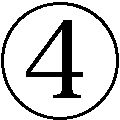
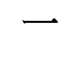

| 神社の由来がわかる小事典 (PHP新書) | |
| 三橋健 | |
| PHP研究所 (2007) | |
神社の由来がわかる小事典
三橋 健
目次
多種多様な神社／本殿のない神社／神社と「もり」／木綿を懸けて祭る「もり」／「さかき」は境の木／斎垣・瑞垣／三諸の神名備山／「もり」と「やしろ」と「しめ縄」／神社（もり・やしろ）にみる不変的なもの／特別な神を祭る「みや」／「みや（宮）」と「みや（御屋）」／全国の神社数／明治以後の神社数／故郷の神社／神社と人生／神社と地域産業／神社と祭り／神社の格式／神名と神号・社名と社号
神社の起源／神社と樹木／神宮寺の成立／寺院の鎮守社／神階と社格／式内社――座・処（所）・前・大社・小社――／名神大社／国史現在社／国帳社／二二社（二一社・一六社）／一宮と総社／武家時代の神社／村落の神社／明治以後の神社
神社を中心としたさまざまな信仰／秋葉信仰／愛宕信仰／熱田信仰／淡島信仰／出雲信仰／伊勢信仰／厳島信仰／稲荷信仰／香取・鹿島信仰／春日信仰／園・津島信仰／熊野信仰／金毘羅信仰／山王信仰／住吉信仰／諏訪信仰／浅間（富士）信仰／天神信仰／八幡信仰／宗像信仰／御霊信仰／産土神・氏神信仰／主な山岳信仰
神社を知らない日本人はまずいないであろうが、あらたまって「神社とは何か」と問われると、返答に窮するであろう。その理由のひとつは、神社は二つとして同じものが存在しないからである。十人十色といわれるように、神社もそれぞれに違っている。例えば、だれでもよく知っている八幡神社を例証にすれば、どの神社も祭神は同じであるが、立地条件や沿革・由来・祭り、あるいは祭る人々はそれぞれに異なっている。したがって、神社を知り、さらに神社がわかるためには一社一社を丹念にみていくのがもっとも堅実な方法となるであろう。
このように、それぞれに異なっている神社を概括して記すこと、あるいは概念規定をすることは困難を極めるが、そのような中で社殿の配置は各神社に共通する点が少なくない。そこで一般的な神社の社殿配置を通して、まずは神社の全体像をとらえておきたいと思う。
神社といえば、だれでも鳥居を思い浮かべるであろう。鳥居は神社のシンボル（目印）となっている。鳥居が建っていれば、そこに神社が鎮座していると思っても間違いはない。ところが、鳥居という言葉の意味がよくわからないのである。神社の入り口に建っている場合が多いので、鳥居は神社の門との説が有力である。
その鳥居をくぐって境内に入ると、ほどなくして参道のそばに手水舎がある。その中に清浄な水をたたえた水盤を備えつけてあり、参拝者はその水で手や口をすすいで心身を清める。それを「手水を使う」といい、それには一定の作法がある。元来は神社参拝の前に川や海で禊をして心身を清めた。手水の作法はそれを簡略にしたものである。伝統と古式を重視する伊勢の皇大神宮では、五十鈴川の御手洗場で心身を清めている。ただ、天候の悪い日を考慮して別に手水舎も設けてある。
さて、手水を終えてさらに参道を進んでいくと、社務所・神楽殿（舞殿）・絵馬堂がある。なかには絵馬掛け所・古札納所を設けている神社もある。社務所は神社の事務を取り扱うところであるが、お守り・絵馬・おみくじなども置いてあり、希望者に授与してくれる。また、神楽殿は大祭のときなどに神楽を奏するための建物である。絵馬堂は絵馬殿、額堂などとも呼ばれ、奉納された絵馬を掲げてある。絵馬掛け所は絵馬堂を簡略にしたもので、奉納した絵馬をかけるところである。古札納所は古くなったお札等を納めるところである。
参道が終わったところには拝殿がある。拝殿前方の左右に狛犬や石灯籠を置いてある。狛犬は左側が「阿」と口を開け、右側が「吽」と口を閉じており、神域を守っている霊獣であるという。稲荷神社では、狛犬の代わりに神使の狐を置いてある場合も多い。また、石灯籠が参道の両側に立ち並んでいる神社もある。
ほとんどの神社が拝殿の正面に賽銭箱を置いてあり、その真上に大きな鈴をつるし、鈴には鈴緒という長い紐を垂らしてある。鈴緒は麻苧、あるいは紅白や五色の布の紐で作られている。参拝者は鈴緒を引いて鈴を鳴らし、「願いがかなうように」と祈るので、鈴緒のことを叶緒ともいう。
このように鈴を鳴らして神慮を慰め、心願成就を祈り、賽銭箱に賽銭を入れて参拝をする。神社での参拝には一定の作法があり、現在では「二拝・二拍手・一拝」の作法が一般的である。歴史的にみると「両段再拝」という作法がもっとも広く行なわれてきた。これは神前で二度の拝礼をしたあと、心静かに祈念し、さらに二度の拝礼をする作法で、別名を四度拝とも称している。
一方、古い神社ではその神社独特の参拝作法が行なわれてきた。伊勢神宮の八度拝は、起拝を四度行ない、ついで八拍手をし、軽く一拍手をし、最後に一拝をするというもので、これを二度繰り返す。このように八拍手をすることから八開手ともいう。なお、起拝とは座礼の作法のひとつで、まず右ひざから立ち、左足を進め、両足を踏み整えて姿勢を正し、笏頭の高さまで上げ、左ひざを伏せ、つぎに右ひざを伏せて拝礼をするという作法である。また、出雲大社では、現在も「二拝・四拍手・一拝」という拝礼を行なっている。
さて、昇殿（正式）参拝を望むならば社務所に申し出て、神職の指示に従って拝殿へ昇り、そこで修祓（お祓い）を受け、祝詞を奏上してもらい、ついで玉串を奉奠し、最後に御神酒をいただく。これを直会という。その際に、御札などの授与品をいただくこともある。
一般的な神社では、拝殿の奥に本殿がある。しかし、奈良の大神神社のように、いまだに本殿のない神社もあり、一般の人々が本殿内に入ることは禁じられている。内部は必ずしも一定していないが、もっとも奥の部屋を内陣、その手前の部屋を外陣と称している。また、本殿内を四部屋に区切った神社もある。奥から内内陣、内陣、中陣、外陣と呼んでいるが、各部屋の名称は神社によって異なっている。
ところで、内陣にはご神体（御霊代）を奉安してある。ご神体は披見を許さない。神社に祭る神を祭神と称している。いうまでもなく、祭神は神霊なので目に見えない存在であり、ご神体に宿ると信じられている。また、祭神が複数の神社もあり、その中の主な神を主祭神（主神）といい、そのほかの祭神を配祀神（配神）とか相殿神などという。
拝殿と本殿の間には幣殿がある。名前のとおり、幣帛を奉る建物であるが、現在は祝詞を奏上するなど祭式を執り行なう場所として使われている。そして、本殿や拝殿の脇に神饌所を設けている神社もある。神前に供える神饌を調える所で、小さいが重要な建物である。
再び視点を境内へと移すと、いくつかの小さい神社が鎮座している。これらを境内神社と総称する。なかでも本社の祭神と関係の深い神を祭ったものを摂社と称し、それ以外のものを末社と称している。そのほか、神社の神宝や貴重な文化財を納めた神庫（宝蔵）、神輿を納めた神輿舎なども建っている。
境内の樹木を総称して神木というが、なかでも神社と関係の深い樹木としてしめ縄を引いたり、柵を巡らせてある巨木がある。これも神木である。そして神域をぐるりと取り囲んでいるのが玉垣（瑞垣）である。
ここまでは、一般的な神社の建造物とその配置を具体的に説明しながら神社の全体像を概観してみたものである。これを前提として、引きつづき「神社とは何か」という神社の本質について考えていくことにしよう。
神社は創立年代不詳の古いものもあれば、近ごろ建てられた新しいものもある。そこに祭られている神（祭神）もさまざまで、主神のほかに配神・配祀神・相殿神など複数の神々を祭る神社もあり、一定していない。また、境内に摂社や末社が鎮座している神社もある。中央の有名な大社、地方の小社、そして藪の中にひっそりと祭られている名も知らぬ小祠もある。町や村はいうまでもないが、無人島にも神社があり、大都会ではビルの屋上に神社を祭ることもみられる。
このように、神社といっても多種多様であるので、「神社とは何か」と問われても、これに答えるのは容易ならぬことである。
そこで、ひとまず手近の辞典・事典を開いてみると、神社とは「神道の信仰にもとづいて神々をまつるために建てられた建物、もしくは施設を総称」（『神道史大辞典』薗田稔・橋本政宣編）したもの、また「神道の神々を祀るために設けられた建物、または施設の総称」（『神道事典』國學院大學日本文化研究所編）などとあり、いずれも大同小異の定義となっている。
これらの定義は神社の建物（社殿建築）に視点を置いたものであり、これだけでは十分な説明になっていない。神社の中には常設の建物をもたないもの、祭りのときに仮殿を造り、祭りが終わるとそれを取り壊すもの、つまり社殿のない神社もある。
長野県諏訪市にある諏訪大社は、上社と下社を合わせて一社をなしている。このうち上社は茅野市宮川の前宮と上諏訪市中州の本宮の二宮からなり、下社は下諏訪町武居の秋宮と同町下ノ原の春宮の二宮からなる。このように、諏訪大社の重要な社殿は四カ所に所在しているが、その中で中心となるのは上社の本宮である。
その本宮の参道を進んで拝所に至ると、正面に拝殿、その左右に片拝殿が連なっている。ここで注意されるのは、拝殿の奥に建物がまったくないことである。一般的な神社では、この地に本殿が建っていることになるが、当宮の場合は空き地となっている。
その理由は、古来、当宮では守屋山の中央部に位置する宮山をご神体として信仰の対象としてきたからだという。つまり、諏訪地方の人々はこの山を「みやま」と称して畏敬し、みだりに山に入ることを禁じてきたのである。ただ、宮山は拝殿から拝む位置にないのでこの説明には疑問が残る。
それはともかく、本殿のない神社といえば、奈良県桜井市の大神神社が有名である。当社は三輪山そのものをご神体とするといわれ、現在も本殿はない。ところが、拝殿の奥に三輪鳥居（三ツ鳥居）が建っており、その奥に禁足地がある。この禁足地は足を踏み入れることを禁じられた神聖な地のこと、一般的な神社でいえば、本殿の建っている場所にあたる。また、大神神社の摂社の一つである檜原神社になるとさらに徹底しており、ここには三輪鳥居が建っているだけで、その奥は拝殿も本殿も存在しないのである。しかしながら、古来、当社は大神神社に準拠した祭祀を厳重に行なってきた重要な神社なのである。
本殿（建物）をもたない神社は、今も各地に存在している。例えば、埼玉県児玉郡にある金鑽神社は、背後の御室ケ岳がご神体であり、この山を遙拝するための拝殿・幣殿があるのみで、ご神体を安置する本殿はない。
また、奈良の春日大社は、現在はあでやかな朱塗りの本殿が建っており、国宝に指定されているが、もとは建物はなかったのである。正倉院御物の「天平勝宝八歳東大寺図」を見ると、御蓋山の真西の山麓に六〇メートル四方ほどの空地があり、そこに「神地」と墨書されている。この空き地は、現在の春日大社の回廊で囲まれた中心部と一致する。つまり、天平勝宝八（七五六）年には、本殿がなかったことになる。一説に、この「神地」は、背後の神体山である御蓋山を祭る斎場だという。
しかし、はたしてそうであろうか。私見によれば、この「神地」は大神神社の禁足地と同じ意味をもつもので、一般の神社では本殿が建っている場所にあたる。したがって、この「神地」は春日大社そのものであり、そこへ神霊を迎えて祭りを執り行なったのであって、とくに御蓋山を、ご神体とする必要はないであろう。
さらにもう一例を掲げると、奈良県天理市に鎮座する石上神宮も、本来は拝殿（国宝）だけで本殿はなかった。拝殿の奥に聖地があり、そこを「禁足地」「神地」「布留高庭」「御本地」などと称して崇拝していた。ところが、明治七（一八七四）年、禁足地の発掘が行なわれ、そこから霊と称す霊剣が出土した。その霊剣を奉斎するために大正二（一九一三）年九月に本殿が建造された。これが現在の本殿であり、さほど古くはない。
上述したように、本殿をもたない神社は、背後にある「神体山」「神地」「神木」などを崇拝していることから、神社は自然崇拝という宗教観念をずっともちつづけてきたといわれる。しかし、これは表面的な理解である。神道の神は、山や滝など自然物に憑依したり化現したりするが、自然物が神になることはありえないからである。それゆえ、「神体山」「神地」「神木」などの用語は再考を要するものと思われる。
神社を古くは「もり」と称した。そのことは、『万葉集』に「神社」の二字を「もり」と読んでいることからも明らかである。そこで、以下においては、『万葉集』にみられる「もり」を中心にして神社の本質を考えてみることにしよう。
 ...哭沢の神社に神酒すゑひ祈めどわが王は高日知らしぬ
...哭沢の神社に神酒すゑひ祈めどわが王は高日知らしぬ
（巻二・二〇二）
 ...真鳥住む卯名手の神社の菅の根を衣にかき著け著せむ子もがな
...真鳥住む卯名手の神社の菅の根を衣にかき著け著せむ子もがな
（巻七・一三四四）
 ...木綿懸けて斎ふこの神社超えぬべく念ほゆるかも恋の繁きに
...木綿懸けて斎ふこの神社超えぬべく念ほゆるかも恋の繁きに
（巻七・一三七八）
歌の哭沢の神社の祭神については、『古事記』上巻の伊耶那美命が火神を生んで亡くなった条に「香山の畝尾の木本に坐す、名は泣沢女の神ぞ」とみえており、『日本書紀』神代（上）第六の一書にも「畝丘の樹本に所居す神なり。啼沢女命と号く」とほぼ同様の記事がみえる。伊耶那岐命は伊耶那美命の死を悲しみ、葡蔔礼の葬儀を行なって泣いたとき、その涙から生まれたのが泣沢女の神である。この歌の「哭沢の神社」は、泣沢女の神を祭る「神社」であることがわかる。
現在、奈良県橿原市木之本町に鎮座する畝丘都多本神社は泣沢女の神を祭ってあり、当社は『延喜式神名帳』大和国十市郡に記載する「畝尾都多本神社」に比定されている。今もって本殿はなく、井戸をご神体とした古い神社の形式を伝えている。
歌の大意は、「鷲（真鳥）がすむ卯名手の神社の菅の根を、着物に摺りつけて着せてくれるような、恋人がほしいものだ」となる。菅の根は菅の実であるともいわれるが、いずれにせよ着物に摺りつけるとあるから、これを染料としたことがわかる。
その菅の根は、卯名手の神が占有する「神社」の中に自生しているのである。その「神社」は、人間の侵入を禁じた聖なる空間であり、そこに存在するものはすべて卯名手の神の占有物であるので、人間は手を触れることも採ることもできない。もし採るようなことがあれば、神罰をこうむると信じられたのである。
ところが、神罰を恐れず、神社の菅の根を採って着物に摺りつけて、私のために着せてくれるほど私を想ってくれる恋人がほしいものだと歌っている。
おそらく、卯名手の「神社」の菅の根を着物に摺りつけて着せてくれる女も、また、その着物を着る男も、卯名手の神の氏子であり、この歌はそのような氏子の間で歌われていた民謡であったとも思われる。
この卯名手の神社は、現在、奈良県橿原市雲梯に鎮座する雲梯神社の森といわれている。なお、『万葉集』では、巻一二・三一〇〇の歌にも「卯名手の社の神し知らさむ」とあり、卯名手の社が歌われている。ここでは「社」を「もり」と読んでいる。
つぎの歌の「木綿懸けて斎ふこの神社......」は、神社の本質を知るうえで重要である。
この歌の大意は、「賢木にまっ白い木綿を懸け、神を祭る神社、そこは神が占有するところ、人間が足を踏み入れることが固く禁じられている神域である。そのような神社（もり）ではないけれども、この恋も固く禁じられているのだが、激しい恋心は、その禁忌を犯してしまいそうだ」となり、禁断の恋を、足を踏み入れることが固く禁じられている「神社」になぞらえている。
ところで、この歌の前につぎのような歌がみえる。
...木綿懸けて祭る三諸の神さびて斎ふにはあらず人目多みこそ
（巻七・一三七七）
なお、歌のはじめに「神に寄せたる」との詞書がある。つまり、歌も歌も神に関連づけてよんだ歌である。それゆえ、この二首を検討してみることにより、古代人の神観ないし神社観の一端を知ることができるように思う。
まず両歌を比べてみると、共通する用語が多い。二首とも「木綿懸けて」と始まり、ついで歌は「斎ふ」、歌は「祭る」とある。「斎ふ」と「祭る」は同類語であり、その対象は、歌は「神社」、歌は「三諸」である。「三諸（御諸）」は「御室」とも書き、神を祭る室、すなわち神社のことである。「 葉を神の御室と崇むれば」（『永久百首』）の用語例がある。また、御室山といえば、神霊が鎮まっている山のことである。
葉を神の御室と崇むれば」（『永久百首』）の用語例がある。また、御室山といえば、神霊が鎮まっている山のことである。
重要なのは初句の「木綿懸けて」である。「木綿」は栲（楮の古名）の木の繊維で織った布のことである。楮の木の皮をはいでその繊維を蒸し、さらに水でさらして細かく砕いて糸状にしたもので、白色なので白栲木綿ともいう。また、木綿で作った四手を「木綿四手」といい、玉串やしめ縄などに垂らした。さかき（賢木・）に垂らした木綿を「木綿しづ」とも称した。
つぎに「懸けて」は、「斎杙には鏡を懸け、真杙には真玉を懸け」（記・歌謡八九）の「懸け」と同意で、ひっかけて下げることである。このようにの枝に白い木綿をひっかけて、そこは神の占有する「神社」であることを示しているのである。
また、木綿はにつけて垂らしたり、斎戸にかけたり、また神事用の襷としても用いられた。そのような歌が『万葉集』にみえる。
 ...斎戸を前に坐ゑ置きて一手には木綿取り持ち一手には和細布奉り
...斎戸を前に坐ゑ置きて一手には木綿取り持ち一手には和細布奉り
（巻三・四四三）
 ...竹珠を繁に貫き垂り斎戸に木綿取り垂でて斎ひつつ吾が思ふ吾子真幸くありこそ
...竹珠を繁に貫き垂り斎戸に木綿取り垂でて斎ひつつ吾が思ふ吾子真幸くありこそ
（巻九・一七九〇）
 ...奥山の賢木の枝に白香著け木綿とりつけて斎戸を忌ひ穿り居ゑ
...奥山の賢木の枝に白香著け木綿とりつけて斎戸を忌ひ穿り居ゑ
（巻三・三七九）
 ...斎戸すゑつ吾が床の辺に
...斎戸すゑつ吾が床の辺に
（巻一七・三九二七）
からの「斎戸」は「斎瓮」とも書き、神祭りのときに御酒を盛って供えた神聖な甕のことである。これは据わりが悪いので、土を掘って底のほうを埋めたのである。
また、歌にみえる「白香」は、麻や楮を白髪のように細く裂いたもので、神事に用いたのである。これもに取りつけ、そこが神の占有地であることを示したのである。『万葉集』巻一九・四二六五番には、裳の裾に白香をつけて、忌み慎んでいる歌がみえる。
木綿をかけた「さかき」は常緑樹であるところから繁栄のシンボルとされ、「さかき」は「栄える木」との説がある。しかし、この説は学問的に無理であって、「さかき」の本義を説明していない。「さかき」は神の占有する聖なる空間と人間が住む俗なる空間の境に植えられた境木（境を示す木）である。
昌泰年間（八九八―九〇一）になった現存最古の漢和辞書『新撰字鏡』（天治本）に、「杜」という字を「毛利。又佐加木」と読み、その意味は「塞也、閉塞也」と注釈してある。このように、「杜」は「もり」または「さかき」とも読むとある。そうすると、「さかき」という語には閉塞された聖なる空間、すなわち、人間が足を踏み入れることを厳しく禁じた、いわば禁足地という意味がある。その禁足地であることがひと目見てよくわかるように、「さかき」の枝に白い木綿や白香をつけて垂らしたのである。したがって、「さかき」は「栄木」というよりも「境木」が本義であろう。
要するに、「さかき」は・賢木とも表記するが、「もり（神社・杜）」の境を示す境木が本義である。
その「さかき」に木綿や白香をかけるのは、そこが「もり（神社・杜）」であることをひと目でよくわかるようにするためである。このようにすることにより、人間が「もり（神社・杜）」へ足を踏み入れることを禁じたのであり、さらに、そこに垣根を幾重にも巡らし、縄を張り巡らしたのである。
この垣根を斎垣・瑞垣・玉垣などといい、縄を「しめなわ（標縄・注連縄・七五三縄）」、あるいは単に「しめ（標・〆・注連・締・占・閉・七五三）」ともいう。
まず、垣根から説明すると、『古事記』上巻の有名な「八雲神詠歌」が参考になる。
...八雲立つ 出雲八重垣 妻籠みに 八重垣作る その八重垣を
（記・歌謡一）
これは和歌の起源として注目されるのみならず、神社の本質を知るうえでも重要である。ここでは、新妻を「守る」ため、雲のように垣根を幾重にも巡らしている。神社も、幾重も幾重も垣根を巡らしてある。そのように垣根を巡らすのは神が占有する空間を「守る」ためである。この「守り」も古くは「もり」と読まれ、「もり（神社）」と同義語である。
また、『万葉集』のつぎのような歌も参考になる。
...ちはやぶる神の斎垣も越えぬべし今は吾が名のをしけくも無し
（巻一一・二六六三）
この歌の大意は「神を祭るもり（神社）を守る神聖な垣は、踏み越えることが固く禁じられているが、今は恋の激しさのあまりに、その垣を踏み越えてしまいそうだ。もう世間の評判などはどうなってもよい」となり、歌と同様、禁じられた恋を越えてはならない神の斎垣になぞらえて歌っているのである。
その「斎垣」の「い」は「いみ（斎・忌）」の「い」と同意で、「神聖な」との意味である。そのような斎垣で神社の周りを囲み、人間が足を踏み入れないように守っているのである。
また、歌にみえる「木綿懸けて祭る三諸」の「三諸」も神社の本質を知るための重要語の一つである。この「三諸」は「御室（みもろ）」と同義語で、歌の「神社」の同類語として用いられていることがわかる。
そこで、「みもろ（御諸・三諸・見諸・三毛侶）」と「みむろ（御室）」の語義にもふれておく必要がある。「みもろ」は「み」と「もろ」、「みむろ」は「み」と「むろ」からなり、「み」は接頭語の「御」とも説明されるが、この場合は「霊（み）」と解するのが妥当である。つまり、神霊を意味している。そして「もろ」と「むろ」は、アクセントを異にしているので別語だといわれるが、類似した内容をもっている。このうち「もろ」は「もり」と同根で、アクセントも一致し、神霊の降臨する聖地である。「みむろ」「みもろ」は普通名詞であるが、『万葉集』にうたわれている「みもろ」のほとんどは大和国（奈良県）に所在している。例えば、「三諸の神杉」（巻二・一五六）の「三諸」は桜井市三輪の三輪山、「三諸の神名備山」（巻三・三二四）の「三諸」は奈良県高市郡明日香村の雷丘のことといわれている。
このように、「みもろ」といえば、桜井市三輪の三輪山、高市郡明日香村の雷丘（神岳）、あるいは生駒郡龍田の神奈備山などが有名である。また「三諸の山」（巻一一・二四七二の一云、二五一二）、「三諸の神奈備山」（巻九・一七六一）なども注目される。さらに「三室」（巻一一・二四七二）とも書いてあり、「見諸戸山」（巻七・一二四〇）も三諸山のこととの説もある。
ところで、『万葉集』では「社」の字と「杜」の字との間に混同がみられる。巻四・五六一歌にみえる「三笠の社」の「社」の字を『桂本万葉集』では「杜」としている。また、巻一二・二八五六歌にみえる「石田の社」の「社」を藤原敦隆編『類聚古集』（『類聚万葉集』）では「杜」としている。このような混同が生じたのは、「社」と「杜」の漢字が類似していること、そして読みも同じであったからであろう。
前述したように、『新撰字鏡』には「杜」という漢字に「もり」「さかき」の読みを付してあり、平安末期に成立した字書『類聚名義抄』にも同じ訓読がみえる。「社」は「やしろ」「もり」とも読むが、「杜」は「もり」と読んだ。
ここまでは「社」を「やしろ」と読んでいる用語例にふれなかったが、神社の本義を知るうえで「社」を「やしろ」と読んでいる歌も重要なので、そのような用例を『万葉集』から掲げ、「もり」と「やしろ」の類似点・相違点などを説明してみよう。
...祝部等が斎ふ社のもみぢ葉も標縄越えて散るといふものを
（巻一〇・二三〇九）
大意は「祝部らが大切に祭る社は、神の占有する聖域で、そこには標縄を引き巡らしてあり、人間が足を踏み入れることを禁じている。そのような社であっても、もみじ葉は標縄を越えて散ってくるというじゃないか」となる。
この歌は詞書に「比喩の歌」とある。つまり、男を近寄らせまいとしている乙女を「社」になぞらえているのである。その乙女の親の目は厳しく、男が乙女のところへ近寄ってくることを固く禁じている。それでも男は「もみじ葉だって標縄を越えて社の中に散っていくというじゃないか」と、乙女に言い寄っているのである。
この歌によると、「やしろ」も「もり」と同じように人間が足を踏み入れることを固く禁じた聖域であったことがわかる。したがって、そこに引き巡らしてある標縄は人間の立ち入りを禁じている標であると理解できる。
その標縄は、単に「しめ」ともいう。その意味は「閉め」、または「占め」であり、そこが神の占有する聖なる空間であることのしるしとして張り巡らした縄である。さらに「しめ」は「知り」「領り」とも同意語である。
 ...ちはやぶる神の社し無かりせば春日の野辺に粟蒔かましを
...ちはやぶる神の社し無かりせば春日の野辺に粟蒔かましを
（巻三・四〇四）
 ...春日野に粟蒔けりせば鹿待ちに継ぎて行かましを社し留むる
...春日野に粟蒔けりせば鹿待ちに継ぎて行かましを社し留むる
（巻三・四〇五）
これらの歌謡も「社」を「やしろ」と読んでいる。「やしろ」という語の意味は諸説がある。一般にいわれているのは、「やしろ」は「や」と「しろ」からなっており、「や」は「弥（永遠に）」であり、「しろ」は「知り」「領り」の古い名詞形で、「域」「城」「代」という意、つまり「やしろ」とは神が領有する地で、そこへは神以外のものが立ち入ることのできない一定の区域である。
また、一説に「やしろ」は「屋代」ともいわれる。「屋」は「建物」のこと、「代」は「そのものの代わりのもの」という意味で、実際に建物を必要としないのであり、「建物の代わりのもの」があればよいとの説である。
ところで、『万葉集』における「社」という字は、歌語として用いられるときは、「やしろ」よりも「もり」と読まれる場合が多いという。それはともかく、『万葉集』の注釈書に「もり」は「森林をもって神の座所とする思想によるものである」とか、「モリは神のよりつく木や林のこと」などとの説明をみるが、これらは「もり」の本質を理解しているものではない。
繰り返して述べてきたように、「もり」「やしろ」は禁足地である。元来は必ずしも樹木を必要としなかったのである。ところが、禁足地であるがゆえに、そこへ人間が立ち入ることが禁じられていたため、おのずと樹木が茂り、やがてうっそうとした森となったのである。つまり、「もり」「やしろ」という語には、元来、森・林・樹木などの意味がなかったのである。
以上からして、「もり」「やしろ」の本義は、ほぼ明らかとなったと思われる。しかし、一般的に「神社」で重要なのは社叢（鎮守の森）であるとし、そこに樹木が必須不可欠であると説明されている。このような理解に立てば、神社（もり・やしろ）には必ず、こんもりと生い茂った森がなければならないことになり、そのような鎮守の森が理想とされる。しかし、「もり」や「やしろ」に対するそのような理解が実は神社の本質をわからなくしているのである。
なぜ神社のご神体は見ることができないのか、なぜ神前や鳥居などにしめ縄を張ってあるのか、なぜ斎垣を巡らしているのか、さらには鳥居が建っている理由、とそれにつけられた木綿や白香、四手、そして狛犬などの意味を知ることは、所詮、神社の本質を問いただすことになる。
斎垣・・鳥居・しめ縄・四手などは、神社（もり・やしろ）を守るために設けられたものである。それは神社が人間をはじめ鳥獣に至るまで、踏み入ることを固く禁じられた聖域だからである。このように述べると、鳥は羽があるので神域へ自由に出入りできるではないかということになる。しかし、そうではなく、「もり」「やしろ」は鳥ですら入ることのできないところであったのである。
例えば、『常陸国風土記』「久慈郡」の条に、賀礼の峰に登られた立速男命の社は、石垣で造ってあり、その中には一族が大勢おり、種々の宝の類がすべて石になって現存している。その社のある峰の上は「諸の鳥の経過ぐる者は、尽に急く飛び避けて、峰の上に当ることなし」と記し、ついで「古より然為て、今も亦同じ」とある。つまり、立速男命を祭る社が所在する峰の上は、鳥ですら急いで避けて飛んでいき、だれもそこへ行くことがない。そのことは大昔からそうであり、今も同じであると記している。
このように、「もり」や「やしろ」に張ってあるしめ縄も、元来は単に一直線でなく、あたかも蔓草がからみついて一面に伸び広がるように張り巡らされていたものと思われる。そこで参考になるのは、『万葉集』巻七のつぎの歌謡である。
...石上布留の早稲田を秀でずとも縄だに延へよ守りつつ居らむ
（巻七・一三五三）
大意は、「まだ稲穂が出なくとも、早稲田に縄を一面に張り巡らして見守っていよう」となる。留意しておきたいのは「縄だに延へよ」である。「延ひ」は、蔓草が一面に伸びて広がっているように縄を張り巡らしてあることで、これでは人間も鳥獣も近づくことができないのである。
神社（もり・やしろ）も同じことで、人間や鳥獣がみだりに踏み込むことを厳禁とした聖地である。これが神社の本質であり、そのような神社の本質は古代から現代に至るまで不変である。その本質を守るため、神社には・しめ縄・鳥居・玉垣などが設けられ、ご神体の披見も厳禁してきたのである。
一方、このような神社のもつ閉鎖性が日本人の島国根性とも相まって、氏子区域や同族意識、さらには民族意識を助長してきたともいえよう。
神社には「もり」や「やしろ」のほかに「みや」というもう一つの形式がある。これは最初から社殿が建てられているのである。したがって、「みや」は「御屋」「宮」の意味であると説明されている。
ところで、現在では「やしろ」と「みや」を同義語のように用いているが、平安時代前期に撰進された『延喜式神名帳』を見ると、両語は厳密に区別されていたことがわかる。この『神名帳』は上・下二巻からなり、そこには全国に鎮座する官社を二八六一社（三一三二座）記載してある。これらの官社は式内社・官帳社ともいい、祈年祭の班幣を預かり、神官や国司の管理を受けた。
そのような官社で「宮」という社号を許されたのは、伊勢の大神宮三座・荒祭宮・滝原宮・伊佐奈岐宮二座・月読宮二座・度会宮四座・高宮、そして下総の香取神宮、常陸の鹿島神宮、筑前の八幡大菩筥埼宮、豊前の八幡大菩宇佐宮の一一宮のみであり、残りの二八五〇社、つまり九九パーセントは「社」を称しているのである。
「宮」という社号を許された一一宮には格別な神を祭るので、それらの神々について簡単に説明を加えておくことにする。
伊勢の大神宮三座――宇治の五十鈴川のほとりに鎮座する皇大神宮（内宮）の主祭神である天照大神（神宮では天照坐皇大御神、皇祖神と称される）一座と、その相殿神二座のことである。相殿神二座とは、同殿内の東に祭られる天手力男神と、西に祭られる万幡豊秋津姫命である。
荒祭宮――皇大神宮の第一の別宮であり、内宮の正宮（本宮とも）の西方、小高い丘の上に鎮座し、天照坐皇大御神の荒御魂を祭る。この別宮という語は、『延喜式』巻第四「伊勢大神宮」の条に初見する社号である。正宮と関係の深い宮であり、正宮についで尊崇され、正宮からの「分け宮」「分かれの宮」の意と説明されている。この別宮のほかに摂社・末社・所管社がある。ちなみに、荒御魂（荒魂）とは、積極的に荒々しい働きをする神霊であり、これに対し穏やかな神霊もあり、これを和御魂（和魂）と称している。
滝原宮――皇大神宮の別宮の一つである。内宮から遠く隔たった度会郡大宮町滝原に鎮座し、この宮は天照坐皇大御神の御魂を祭る。なお、当宮と並んで滝原竝宮が鎮座している。皇大神宮の別宮の一つで、祭神は滝原宮と同じである。
伊佐奈岐宮二座――皇大神宮の別宮で、伊勢市中村町に所在する月読宮の域内に鎮座する。もとは月読宮の四座に含まれていたが、のちに独立して二座となった。その二座とは伊弉諾尊と伊弉冉尊である。
月読宮二座――皇大神宮の別宮の一つ。二座とは月夜見尊と月夜見尊荒魂であり、これらは前述したように伊勢市中村町に鎮座している。なお、伊勢市宮後町（外宮から北方へ徒歩で十分）に月夜見宮が鎮座している。豊受大神宮（外宮）の別宮の一つで、祭神は月読宮二座と同じである。
度会宮四座――豊受大神宮のことである。伊勢の山田が原に鎮座する。四座とは、主祭神の豊受大御神一座と、相殿神三座である。豊受大御神は天照大神の食物をつかさどる神である。相殿神の三座の祭神は未詳であるが、東に一座、西に一座祭られており、これらを御伴神と称している。
高宮――宮が高いところに鎮座することにちなんで名づけられた。豊受大神宮の別宮の一つで、豊受大御神荒御魂を祭る。現在は多賀宮と称しているが、明治時代以前は高宮と書いた。豊受大神宮の別宮の一つである土宮の前の石段を九八段上ったところに鎮座している。
なお、皇大神宮（内宮）と豊受大神宮（外宮）は六キロほど離れて鎮座している。この両大神宮を総称して「神宮」という。これが正式の称号で、一般的に呼ばれている「伊勢神宮」は俗称である。また、両大神宮にはそれぞれ所属の宮社が多くある。
皇大神宮は一所（三座）の正宮に対して一〇所（一二座）の別宮、二七社（三三座）の摂社、一六社（一六座）の末社、三〇社（三〇座）の所管社が所属する。さらに別宮に八社（八座）の所管社がある。
つぎに豊受大神宮は一所（四座）の正宮に対して四所（六座）の別宮、一六社（一七座）の摂社、八社（八座）の末社、四社（四座）の所管社が所属する。
このように、両大神宮を合わせると正宮が二所（七座）、別宮が一四所（一八座）、摂社が四三社（五〇座）、末社が二四社（二四座）、所管社が三四社（三四座）、別宮所管社が八社（八座）、総計一二五社（一四一座）となる。
香取神宮――経津主神を祭る。下総国の一宮で、千葉県佐原市香取に鎮座する。
鹿島神宮――武甕槌神を祭る。常陸国の一宮で、茨城県鹿嶋市に鎮座する。なお、経津主神と武甕槌神の二柱の武神はともに天照大神の命を受けて出雲国に下って大国主命を説得し、その国を皇孫瓊瓊杵尊に譲らせた国譲り神話は有名である。古来、香取神宮とともに武神・軍神として崇敬されてきた。
八幡大菩筥埼宮――福岡市東区箱崎に鎮座する筥埼宮のことで、応神天皇・神功皇后・玉依姫命を主祭神とする。筑前国の一宮である。
八幡大菩宇佐宮――大分県宇佐市南宇佐に鎮座する宇佐神宮のことで、応神天皇・比売大神・神功皇后を祭る。豊前国の一宮で、全国に所在する八幡宮・八幡神社の総本宮である。
上述したように、「みや（宮）」は伊勢神宮のような格別の神社に与えられた社号であり、当初、「やしろ（社）」とは区別されて用いられていた。一般的にいえば、「みや」は「御屋」の意である。その「屋（や）」が神を祭る神聖な建物であったので、それを尊敬して「御」を添えて「御屋」と称したと説明されている。
しかし、「みや（宮）」と「みや（御屋）」は、厳密にいえば相違がある。例えば、『風土記』には、「熱田宮」「大神の宮」「桐原の日桁の宮」「気比神宮」「滝原神宮」などの用語がみえる。一方、「大神の御屋」との用語例もある。
それは『出雲国風土記』「神門郡」の条に、「吉栗山」を注記して「天の下造らしし大神の宮の材を造る山なり」とある。「天の下造らしし大神」は大穴牟遅神のことであり、この注記は「この世をお造りになった大神（大穴牟遅神）の宮（みや）を造る用材を切り出す山である」という意味で、この「宮」は大神を祭る神殿のことと思われる。ところが、引きつづき「宇比多伎山」を注記して、「大神の御屋なり」とある。この注記を「山自体が神体となっている」と解釈する説もあるが、そうであるならば「屋代」と書くべきで、この「御屋（みや）」は大神を祭る「屋」を尊称して「御」を付したと考えられ、実際に大神の神殿が宇比多伎山に建っているということであろう。
このように「宮」「御屋」は、いずれも建物があるものの、意味するところはいささか異なるように思う。つまり、幾棟もあり、スペースも広い神殿が「宮」であり、これに対し、本殿だけの小さな神社が「御屋」であると思われる。いずれにせよ、「みや」は社殿が実際に建っているのである。それは『日本書紀』推古天皇十四年五月の条に「仏像を造ること既に訖りて、堂にいることを得ず」（国史大系本）と記すことからも明らかである。ここでは「堂」（仏堂・寺）を「みや」と読んでいる。神霊を祭る神社には建物のないものもあるが、仏像を安置するには堂（みや）が不可欠である。
つぎに視点を変えて、全国の神社の総数をたずねてみたいと思う。大学院で「神社史研究」の授業を担当していると言うと、世人からではあるが「全国の神社の数を教えてほしい」との質問をしばしば受ける。さほど神社に関心のない人々にとっても、わが国に、いったい全体、どのくらいの数の神社が祭られているのか、その総数を知りたいのは共通的な要求であるらしい。そのような人々の期待に添うのも、神社研究にとって大事なことなのである。
そうはいうものの、これまでの神社研究では神社数の問題をさほど重視してこなかった。それは数の観念でもって神社の本質を究めることは無理とされたからである。そのうえ神社の数は曖昧模糊としており、そのような資料に基づいて神社について論ずるのは無意味なことと考えられていたのである。
しかしながら、神社の数を追究していくと、神社は郷土と密接な関係にあることが明らかとなる。神社数の裏に神社の本質にかかわる興味深い要素も潜んでいるのであり、したがって、神社の総数を正確に把持することは、神社研究の基礎におかれるべき重要な問題なのである。
いうまでもなく、神社の数は時代により変遷がみられる。そこで古代から時代を追って、全国の神社数をたずねてみることにする。
古代では、神社と祭神との間に判然とした区別がなかったようである。例えば、「天神地」「神」を「あまつかみくにつかみ」とも「あまつやしろくにつやしろ」とも読んだ。また、『延喜式神名帳』は「神名帳」と称しながら、そこには「神名」ではなく「神社名」を記載してある。
神社は全国に鎮座しており、そこに祭られる神々の数はきわめて多く、それらを「八百万神」と称してきた。この語は『古事記』に初出し、『常陸国風土記』『旧事本紀』などにもみられ、古代から現代に至るまで用いられてきた。『日本書紀』では「八百万神」という語を見出せないが、その代わりに「八十万神」が用いられている。また、『万葉集』には「八百万・千万神」（巻二・一六七）とある。
これら「八百万神」「八十万神」「八百万・千万神」は、いずれも数が多いという意味である。したがって、これらの表記から古代における神社の実数は知り得ない。ただ、古代の人々は神社や神を、この世に存在するものの中できわめて数が多いものと理解していたことがわかる。
それはともかく、出雲国に限定していえば、かなり正確な神社数を知ることができる。天平五（七三三）年に成立した『出雲国風土記』の巻頭に、同国の大小の神社総数を掲げてある。合計して神社は三九九所とあり、そのうち一八四所は神官に登録し、二一五所は神官に登録していないと記してある。続いて出雲国九郡の記事を掲げる中で、郡ごとに所在する神社名と社数を記載している。例えば、意宇郡は四八所が神官に登録しているが、一九所は登録していないとある。
つぎに視点を変えて、神社が一郷に一社所在していたと想定すれば、平安時代中期の承平年間（九三一―九三八）成立の『倭名類聚抄』には「四千四十一郷」と記されているから、その当時は、少なくとも全国には四〇四一社の神社が鎮座していたことになる。ついでながら、鎌倉時代中期に成立したとされる『拾芥抄』には「郷一万余」とあり、室町時代後期の永正九（一五一二）年に成立した『体源抄』には「郷九万八千」とみえるので、そのころ全国にはそれらを超える神社が祭られていたことになろう。
ところで、織豊期（織田信長と豊臣秀吉が天下人として日本の統治権を握っていた時代）から江戸時代にかけて全国各地で盛んに新田開発が行なわれ、それによって村数が増加したことは周知の事実である。
例えば、「正保国絵図」に記載されている村名を概算すると、正保二（一六四五）年には五万五四五九村、ついで元禄十（一六九七）年以降はおよそ六万三〇〇〇村、さらに天保元（一八三〇）年の「天保郷帳」によれば六万三五四〇村という数である。
したがって、その当時においては、これらの村数ないしそれを超える神社が所在していたことになろう。
さらに視点を変えてみよう。鎌倉時代中期の貞応二（一二二三）年に成立した『耀天記』「山王事」の条を見ると、『延喜式神名帳』の総数「三千一百廿（卅カ）二所」と掲げたあとで、日本の国々里々に鎮座する鎮守明神の数は「一萬三千七百餘座トモ申ス」と記してある。しかし、これについては「慥ノ説イマダ承リ及ズ」とも述べており、鎌倉時代中期において全国の神社の確実な総数を知り得なかったことがわかる。しかしながら、知識階級の間では、この「一萬三千七百餘座」が、日本の神社の総数と考えられていたものと思われ、存覚（一二九〇―一三七三）が元亨四（一三二四）年に著した『諸神本懐集』にも「日本六十六箇国ノアヒダニ、神社ヲアカムルコト、一萬三千七百餘ナリ」と記してある。
この「一萬三千七百餘」という神社総数は、室町・安土桃山・江戸時代へと継承されていくのである。そのような例を、奉唱用「神名帳」の中からいくつか掲げてみよう。
「日本洲、有官知・未官知、萬三千七百餘所ノ大明神等」（『東大寺戒壇院公用神名帳』、谷森善臣自写本、奥書に「文明十一〈一四七九〉年己亥正月日」とある。ここにいう「有官知」とは神官に登録がある神、「未官知」は神官にまだ登録されていない神との意か）
「日本國六十餘州、惣一萬三千七百餘所大明神」（『諸国神名帳』、京都市東山区の若宮八幡宮所蔵本、奥書に「時明応元〈一四九二〉年壬子正月吉日、小旅堂、嘉元四〈一三〇六〉年書写之本模之」とある）
「惣者一萬ト三千七百餘所、権実二類、諸大明神等」（『勧請神名帳』、三重県上野市の春日神社所蔵本、奥書に「天正十七〈一五八九〉年己丑八月上旬書写記、波田神主、平六所持」とある）
「日本六十餘國、一万三千七百餘所大明神」（『修正神名帳』、城州乙訓郡海印寺旧蔵本、奥書に「寛文六〈一六六六〉年八月下旬、於海印寺書之、快誉」とある。なお、この「神名帳」は寛政八〈一七九六〉年二月十三日にも書写されている）
「壹萬三千三百六十餘處、大小諸神」（『花鎮奉読神名帳』、天理市長滝村の宮座で奉唱されたもの）
の「一万三三六〇余所」以外は、いずれも「一万三七〇〇余所」という総数が記されている。ちなみに、この「一万三七〇〇余所」の神社は、諸国の国内神名帳に所載される神社（国帳社）の総数ではないかとの説もある。
明治新政府は神仏分離の宗教政策を行なう必要上、明治元（一八六八）年三月二十八日、全国の神社に由緒を提出するよう命じた（「神仏分離の令」）。しかしながら、調書を提出する神社は少なかったようである。ついで明治三（一八七〇）年閏十月二十八日、神社規定を制定するため府藩県に、管内にある大小の神社の取調書（神社明細帳）を十二月までに提出するよう命じた。しかし、この調査も困難であったらしく、猶予を願う神社が続出した。
このように神社を調査することは簡単でなかったが、それでも明治十（一八七七）年になると神社数の統計が作られるようになった。『日本帝国統計年鑑』によれば、明治十年の全国の神社数は五万四一〇五社、つぎに十一年は五万四九九三社とある。ところが、翌明治十二（一八七九）年は一七万六八四四社となり、一年間に一二万一八五一社も増加している。
これは新たに神社が建立されたのではなく、調査が進んだことや、それまで除外されていた無格社などが加わったことによると思われる。以後、神社の総数は年ごとに増えつづけ、明治二十六（一八九三）年は一九万三四二九社とある。
しかし、翌明治二十七（一八九四）年は一九万八〇二社、同二十八（一八九五）年は一九万七五三社と減少を続けたが、同二十九（一八九六）年には一九万一九九九社と再び増加した。以後、増減を繰り返すが、同三十五（一九〇二）年に一九万六三九八社と最高潮に達している。おそらく、これは日本の歴史上でもっとも多い神社数であると思われる。
ところが、それ以降、神社数は減少を続けるのである。その大きな原因は、明治末年の神社合祀によるものである。明治三十九（一九〇六）年の総数は一九万四三五社であるが、翌四十（一九〇七）年には一七万六七三九社となり、さらに同四十四（一九一一）年には一三万二五七社に減少している。
以後、大正元（一九一二）年は一二万七〇七五社、同十三（一九二四）年は一一万三五〇二社、昭和元（一九二六）年は一一万二七〇四社、同四（一九二九）年は一一万一八九三社、同九（一九三四）年は一一万九六二社、同十六（一九四一）年は一一万七七社、昭和二十（一九四五）年の終戦時の総数は、一〇万九七三三社（昭和二十年の総数は、昭和二十三年発行『宗教便覧』による）となった。
そして、昭和二十一（一九四六）年二月二日に神院が廃止され、翌三日には神宮（伊勢神宮）を本宗と仰ぎ、全国の神社を統合包括する宗教法人神社本庁が設立された。そのとき、神社本庁に所属した神社数は八万七二一八社である。
それでは現在はどうかといえば、詳しい調査報告がなされている。平成十四（二〇〇二）年七月に神社本庁が発行した『全国神社名簿』によると、全国の神社の総数は七万九一一六社とある。この『名簿』は全国の神社を都道府県別に分類し、神社名・所在地、また本庁に具備する神社明細帳の番号も明示してあり、信憑性の高いデータとなっている。それを見ると、もっとも多いのは新潟県の四七六九社、ついで兵庫県の三八三八社、福岡県の三三二六社、愛知県の三三一七社、岐阜県の三二一八社、千葉県の三一四九社、福島県の三〇四一社となっており、もっとも少ないのは沖縄県の一一社である。
しかし、ここに掲げる神社数は神社本庁包括下で、かつ宗教法人を有する神社に限られたものであって、もとより全国に鎮座する神社の実数を示すものではない。しかしながら、このデータにより現在の全国の主要神社のおおよその数を知ることができる。
ちなみに、神社と寺院の数を比較すると、神社のほうがやや数が多いようである。古代から神社は八百万神を祭ってきたのであり、そのような神社の数を究めていくと、神社と郷土との密接な関係が明らかになってくる。神社数の裏に神社の本質にかかわる興味深い要素の潜んでいることも見逃せないのである。
もっとも親しみ深い神社といえば、郷里の神社である。人にはだれも彼も故郷があり、そこには必ず神社が鎮座している。自分が生まれ育った郷土の神社である。それらは氏神・産土神・鎮守の神などと称される。土地の人々の間では、「お宮さん」「氏神さん」「鎮守さん」などと呼ばれている。
郷里の神社は、そこで生まれ育った人々の心の支えとなっている。人々は神前にぬかずいて、家内安全、子孫繁栄、無病息災、交通安全、商売繁盛など、実にさまざまなことを祈願し、そして報謝の念を表してきた。普段、あまり神を拝まない人でも「苦しいときの神頼み」をする。そのようなときにも、あたかも母親のように温かく受け入れてくれるのが郷里の神社である。
私どもが生まれた土地やそこの住民の健康や幸福など、すべてを守護している神が、故郷の神社の祭神である。たとえ故郷を離れて暮らしていても、生まれた土地の氏神は、その人の故郷のシンボルとして心の底に生きつづけている。人々は、その土地に生まれるとともにその土地の氏神と運命的につながりを持つことになり、その氏神はその土地で生まれた人々の一生を守護してくれるのである。
子どもが生まれると、その子の成長を願って近くの神社へ参拝する。これをお宮参り・産土参り・初宮詣などという。また、生まれた子がはじめて氏子に加入することを意味するので、初宮詣のことを、別名「氏子入り」ともいう。
また、男の子は三歳と五歳、女の子は三歳と七歳のときに成長を祝って氏神へ詣でる行事（神事）がある。これを七五三の祝いという。十一月十五日に晴れ着を着て土地の氏神社へ参詣し、無事に成長したことに報謝する。
さらに成人式や結婚式（神前結婚式）を神社で行なったり、還暦や古稀の年祝、そして厄払いなども郷里の神社で行なう人も少なくない。また、神式で葬式を行なう人もいる。これを神葬祭といっている。
人生における誕生、成人、結婚、死亡などの際に執り行なわれる儀礼を、通過儀礼と称している。このような人生儀礼を郷里の神社で行なっている人も多い。ただ、死は黒不浄といわれ、穢れと考えられてきたので、神社では葬式を行なわない。穢れは神のもっとも嫌うものだからである。
故郷を離れて他所で働いている人なども、故郷の神社の大祭には家族そろって帰省している。故郷の神社の祭りに参加することにより、人々は互いに親交を結んでいる。旧友たちが集まるので、その日にクラス会を行なう場合もみられる。氏神社の神前で人生儀礼を行なったり、大祭に参加することによって氏神や故郷との絆を深めている。
ところで、郷里の神社が人々の心の中にいつまでも生きつづけている理由のひとつは、そこに日本の原風景があるからだと思われる。神道は「かむながらの道」とも呼ばれてきた。神の御心のままで人為を加えない「かむながら」の風景を故郷の神社は今に伝えているのである。
神社は地域の産業、例えば農業、牧畜業、林業、水産業、商業、工業、鉱業などと密接なかかわりがある。その土地の生産儀礼や年中行事は、その土地に鎮座している神社を中心に展開している。
農業を経済基盤としている土地では、春の農事始めに先立ち、神社で豊作を祈願する祈年祭が行なわれる。そのとき拝殿で田遊びや田植祭などの神事芸能が演じられる。そして秋には収穫を感謝した新嘗祭が行なわれ、そのとき霜月神楽を行なう地方もある。
古来、わが国は農業を生産の基本としてきた。今でも各地の神社では、農業にかかわりの深い祈年祭と新嘗祭を伝統的な祭祀として重視している。一方、社会や経済生活が時代とともに推移し、それに伴って新しい祭りも生み出され、神社の祭りは複雑となっていった。
また、わが国は四方を海に囲まれている海洋国だから、海を生活基盤としてきた。そのような漁民の祭りにも古式なものがみられる。漁民を守護する神社では、正月二日には船祝と呼ばれる祭りが行なわれる。船祝の祭りは地方によって名称を異にするが、どの地方も祝いの舟唄を歌いながらその年の大漁を予祝し、海上の安全祈願をするところは共通している。
このような産業のみならず、地域の神社はその土地の人々の信仰、自然、文化、社会、政治、経済、生活、芸能などの歴史を包蔵して今に伝えている。したがって、地域の神社はその土地の歴史に力強さを与え、郷土色に豊かな彩りを添えてきたといえよう。
地域の神社には地域の神が祭られており、その地方ならではの祭りが行なわれる。年に一度の例大祭の日になると鎮守の森も朝から賑わう。多くの住民が神社に集まってくる。神楽殿では神楽が行なわれたり、境内の相撲場では相撲を行なう神社もある。氏子らは神社の祭礼に参加し、互いに親睦を深めている。神社の祭りは人と人を結びつける重要な役割を果たしている。
各神社の年中祭祀の中で、基本的な祭りは祈年祭と新嘗祭である。ほかに、その神社独自の祭りも行なわれている。これを特殊神事という。また、一般的な神社では、毎月の一日と十五日に月次祭を行なっており、月参りを続けている氏子もいる。
しかし、なんといっても、その神社でもっとも重要な祭りは例祭である。これを大祭ともいう。大祭は一年に一度、決まった日に行なわれる恒例の祭りである。一般に「お祭り」「ご祭礼」といえば例祭のことである。例祭日は神社の祭神や由緒によって定められているが、その神社の創立とかかわりのある場合が多い。つまり、例祭はその神社が創祀された日を祝う祭りということになる。したがって、例祭日は神社によって異なっているのは当然である。
「お祭り」の日になると、今まで静かだった鎮守の森から笛や太鼓の音が聞こえてきて、地域は急に活気づいてくる。神霊が本殿から神輿に乗ってお旅所までおでましになる。氏子たちは「ワッショイ、ワッショイ」とかけ声を一つにして神輿をかつぎ、氏子区域を練り歩く。これを神興の渡御とか神幸祭という。また神輿がお旅所から本殿に帰ることを還御という。山車や屋台が出る大がかりな祭礼もある。
神社の祭りは、例えば「村祭り」というように、個人的なものでなく、村全体の祭りである。このような「村祭り」を行なうことにより村は一つにまとめられ、村人は祭りに参加することにより互いに結束を強めている。
神社は全国の至るところに鎮座しており、町や村には必ず神社が祭られている。それも一社だけでなく、複数の神社が所在している。なかには格式の高い神社もあり、無格社といって社格のない神社もある。『宗教便覧』の統計によれば、昭和二十（一九四五）年の無格社の数は五万九七〇四社とあり、これは全国の神社の半数近くを占めていることになる。したがって、無格社は多くの人々と深いかかわりをもっており、重視しなければならない神社である。
神社の格式、すなわち社格は、律令制度下において神制度が整備されるに伴って確定されていった。古くは、『日本書紀』崇神天皇七年の条に「天社・国社」を定めたとあり、これを社格の始まりとする見方もある。
『延喜式神名帳』では、官社（式内社）を官幣社（神官より幣帛を奉献した神社）と国幣社（国司より幣帛を奉献した神社）に分け、さらに大社と小社に分け、それらの大社の中から名神大社が定められた。これらも社格の一種である。
このように、神社（祭神）に格式が定められると、その社格に基づいて奉献する幣帛の品目や数量も異なってきた。『延喜式』「四時祭」にはそれらが詳しく規定されている。ところが、律令制度は平安時代になると崩壊しはじめ、やがて一宮とか惣社（総社）といった神社が成立した。これら一宮とか惣社は一般的な神社と区別して特別に扱われた。
明治元（一八六八）年十月、政府は重要な神社を勅祭社、神官直支配社、准勅祭社という三等に分けた。ついで同四（一八七一）年五月、太政官布告で神社を官幣大社・官幣中社・官幣小社、別格官幣社、国幣大社・国幣中社・国幣小社、府社、県社、郷社、村社、無格社に分け、全国的な社格制度が確立した。しかし、このような社格制度は昭和二十一（一九四六）年二月に廃止された。
したがって、現在、社格制度はないが、神社本庁が「別表に掲げる神社」とした特別な神社がある。これを別表神社といい、平成十四（二〇〇二）年では三四八社ある。
つぎに神名と神号、そして社名と社号について述べておこう。例えば、稲荷大明神、稲荷明神、稲荷神を例として説明すると、「稲荷」が神名、「大明神」「明神」「神」が神号である。神号はその神に与えられた尊称としての呼び名である。
神仏習合時代には八幡大菩、高貴徳王菩（墨江大神）、あるいは熊野大権現、白山権現などという神号もみられた。このように「大菩」「菩」を菩号、「大権現」「権現」を権現号といい、これらも神に与えられた尊称である。このような菩号や権現号は仏教用語なので、明治の神仏分離により使用が禁止された。
そのほか皇大神、大神、大御神などという神号、また天神、地、天王、若宮、今宮、新宮などの類もある。京都の園社、すなわち現在の八坂神社に祭られてきた牛頭天王は天王という神号である。また若宮、今宮、新宮などは新たに祭った神社に対して与えられた称号である。京都には今熊野、今日吉、今八幡などの神社がみられる。
つぎに社名と社号へと視点を移すと、例えば、東京大神宮、熱田神宮、諏訪大社、北野神社、天満宮、稲荷社などさまざまな神社がある。この東京、熱田、諏訪、北野、天満、稲荷を社名といい、大神宮、神宮、大社、神社、宮、社を社号という。なかでも神宮の社号をもつ神社は、伊勢神宮、熱田神宮、香取神宮、鹿島神宮、明治神宮、橿原神宮などで、これらは格式の高い神社である。このうち伊勢神宮だけは例外で、正式名は「神宮」である。
神社の起源については諸説があり、いまだ定説をみない。考古学による祭祀遺跡の調査・研究の結果、無土器・縄文・弥生・古墳などの各時代にも呪術や宗教的行為のあったことが明らかになっている。例えば、無土器時代の遺跡から女神像といわれる石像が出土している。また、縄文時代の環状列石遺構は祭りの営まれた跡であり、土偶・岩偶、土版・岩版および石棒などは護符ないし呪術用具とみる説がある。そして弥生時代の銅鐸・銅剣・銅鉾なども祭祀や儀礼に使用されたとする説が有力である。
つぎの古墳時代になると、鏡・刀剣・玉をはじめ、小型の琴・舟・機織具・人形・馬などの模造品も出土している。なかでも鏡・刀剣・玉が主たるものであることは注意すべきである。これらは『古事記』『日本書紀』に記されている三種の宝物（三種神器）と関連すると考えられるからである。ちなみに、これらは天皇即位の際に授受される神璽であり、この中の勾玉は穀霊、鏡は日の神の象徴といわれている。また鏡は祭祀の御霊代、神社のご神体としても用いられ、さらに神仏習合時代には、表面に本地仏を毛彫りにして、それを御正体として拝むことも行なわれた。
そのほか磐座、磐境、神籬などにも留意する必要がある。『日本書紀』神代（下）に、天津神籬・天津磐境とあり、神霊の降臨する場所に特別の樹木を立てたことがわかる。なおヒモロキのモロは神社のモリ（森・杜）と同意で、神霊が宿る常盤木のことであるともいわれている。
今後、このような祭祀遺跡の発掘調査や研究が進められ、さらに祭祀の対象になった山・沼・湖・岩石などが確定され、そこで行なわれていた祭祀の形態、信仰の内容、あるいは社殿の発生などが明らかにされるならば、神社の起源も見直されていくであろう。
また、古墳の壁画から日本人の他界観を探ろうという試みも進められている。例えば、福岡県うきは市吉井町の珍敷塚古墳（六世紀後半）に描かれている太陽の船の舳先には烏がとまっている。この船は、死者の魂を来世へと導く乗り物であると説かれている。このような古墳の壁画と『古事記』『日本書紀』などに記される根の国・妣の国の神話とは関連するであろう。これなどは神社の起源とは直接に関係するものでないが、やはり参考とすべきである。
古代の神社を知るためには、なんといっても『古事記』『日本書紀』などの神道古典にみられる神社や祭祀関係の記事に留意する必要がある。そこで、孝徳即位前紀の冒頭にみえる天皇は「仏法を尊び、神道を軽りたまふ」との記述を通じて、古代の神社について考えてみることにする。注目したいのは、天皇が神道を軽んじられたことに対して「生國魂社の樹をたまふ類、是なり」と注釈していることである。これは日本の神道あるいは神社に対する最古の注釈であり、おそらく『日本書紀』の編者によって施されたものと思われる。したがって、この注釈の意味するところを詳しくたずねていけば、当時の知識者が日本の神道（神社）をどのように理解していたかを知ることができるであろう。
さて、天皇が神道を軽んじられた具体例として、生國魂社の樹木の伐採を掲げてある。したがって神道を尊ぶとは、神社の樹を伐らないで保護することになる。いうまでもなく、神社は神道の中核に位置しており、その神社にとって樹木は重要なものとされたのである。
前述したように、神社の本質は杜（閉ざされた地）であり、必ずしも樹木を必要条件としないが、すでにこの時代では鎮守の森の保護は神道にとってもっとも大切とされていたのであり、それは今も変わっていないのである。
ところで、神社の樹木に神霊が宿るという信仰は、日本の神道に多大な影響を与えてきた。ここにいう樹木は、単に自然物としての樹木でなく、神霊が降臨する依代としての樹木である。神霊がしばらくそこに宿るというのであり、これを一般には神木と呼んでいる。つまり神聖な樹木である。したがって、樹木がそのまま神であるのではなく、人々の崇拝を通じて樹木も神になるという信仰である。
神社は鎮守の杜とも呼ばれるように、人間が足を踏み込むことを禁じた聖地であったので、そこにはおのずと樹木がこんもりと生い茂っていったのである。その杜は神が顕現する聖地である。
このように、天皇は神社でもっとも大切とされてきた樹木を伐採された。それは神道を軽んずる行為であるが、それにはそれなりの理由があったものと思われる。
その理由については、難波宮造営用材説、四天王寺堂塔用材説がある。このうち私が心を引かれるのは説、すなわち天皇は四天王寺堂塔の建築用材にあてようとして生國魂社の樹木を伐採したとの説である。
その理由を説明する前に、当時の神仏関係を知っておく必要がある。もっとも早い例証のひとつは『日本霊異記』第七の備後国（広島県）三谷寺創建の説話である。これは、備後国三谷郡の郡長の先祖が、百済を救うための軍人として出征したとき、「もし無事に帰ることができたなら神（日本の神々）のためにお寺を建てよう」との誓いを立てた。そのため災難を免れることができた。そこで郡長の先祖は百済から弘済禅師を招いて三谷寺を建立したという。これは神仏関係を伝える古い説話のひとつである。
さて、仏僧らは輪廻転生を説き、神道の神々を六道と同じ境遇にあるもの、すなわち神々は迷いの世界を流転していると理解した。また六道のうちの餓鬼道・修羅道・天道を総称して神道とも称した。そして煩悩に悩まされている神々を神身と称し、これらを仏の法によって救済しようとした。さらに神々は神身という迷いの世界から離脱するため、仏法に帰依することを願っているとも説いた。このような思想を具体化したのが神宮寺の建立である。
神宮寺は神宮院、神願寺、神護寺、神供寺ともいい、俗に宮寺、別当寺とも称した。その早い例証は、越前国（福井県）の気比神宮寺である。『藤氏家伝』下巻「武智麻呂伝」によれば、霊亀元（七一五）年、気比神が藤原武智麻呂に対して「吾は神身となって久しいが、仏道に帰依したいと思っている。吾がために寺を造ってほしい」と託宣したとあり、それに基づいて気比神宮寺を建立したと記している。
このころから各地で神宮寺が建立されるようになったが、その趣旨はおおよそ気比神宮寺の場合と同じである。もっとも、これらは仏教者からみた神道の神観であるが、このような思想が、当時広く推し進められていた。
このような前提をふまえて、再び孝徳即位前紀の「神道を軽りたまふ」に対する注釈を考えてみると、天皇が生國魂社の樹木を伐採したのも、神道を軽んじられたからではなく、生國魂神を神身という苦悩から免れさせようとの叡慮から出た行為であった。つまり、天皇は生國魂社の樹木を伐採してそれを四天王寺建造の用材のために喜捨されたのであり、これは要するに生國魂神が仏教に帰依したことを示すものと考えられる。
さらに憶測すれば、天皇は旧態依然であった日本神道を、その時代に即応した宗教に創造するために、あえてこのような行為に出られたものと思われる。そのためには難波大社と称えられた生國魂神が仏法に帰依するのが近道であると考えられたのである。そのことによって神道を仏法と同じような人類に普遍的な宗教へと発展せしめようとされ、強いて神社の木を伐採したのではなかろうか。
一方、神は仏法に帰依して、護法神（伽藍守護神・寺院守護神とも）となることを欲しているとも説かれた。これは神が仏法を守護するという思想であり、それは寺院の境内に鎮守社（鎮守とも）を勧請するというかたちで現れた。
その著名なひとつは奈良東大寺の鎮守八幡社、現在の手向山八幡宮である。『宇佐八幡宮縁起』には、天平勝宝元（七四九）年、八幡神が託宣して、東大寺大仏の造営を助けるために奈良の都へ上京することが記されている。つまり、宇佐八幡神を東大寺大仏の守護神として勧請されたのが手向山八幡宮（手向山神社）の起源である。また『扶桑略記』寛治七（一〇九三）年八月二十二日の条には、藤原不比等が興福寺を草創したとき、春日明神を守護神として勧請したとある。
また、異色の例としては、京都の高雄の神護寺や伏見の醍醐寺の鎮守神として勧請した清瀧権現、滋賀県大津市の園城寺（三井寺）の鎮守神の新羅明神などがある。さらに比叡山には天長六（八二九）年、首楞厳院を建立した際、如法経守護の三十番神を勧請したとの説がある。また、高野山でも四方の結界を守護する百二十番神がある。
このうち如法経守護三十番神は日 宗に受容され、法華経守護三十番神となって盛行するが、明治元（一八六八）年四月、神仏分離政策により、三十番神の称号を用いることは禁じられた。
宗に受容され、法華経守護三十番神となって盛行するが、明治元（一八六八）年四月、神仏分離政策により、三十番神の称号を用いることは禁じられた。
古代の律令制下では、朝廷から神（天神・地）に位階を奉授することが行なわれた。これを神階ないし神位という。その種類は人間の場合と同じく、品位、そして文位と武位（勲位）があった。また、国司の裁量によって判断して、国内の神に仮に神階を奉授するという借位もみられた。借位は四位と五位に限られていた。
さらに神制度が整備されてくると、神社に対しても格式を定めるようになった。これを社格と称した。例えば、『延喜式神名帳』に記載されている神社、すなわち式内社を官社と称すのも一種の社格である。なお、官社は官幣社と国幣社とに分けられ、さらに官幣社・国幣社はそれぞれ大社と小社との二つに分けられた。また、官社の中からとくに霊験あらたかで崇敬の著しいものを選定して名神大社と称した。このような社格を定める際には、祭神の由緒や神階などが考慮に入れられた。したがって、神階と社格とは密接な関係にあった。また、神社への奉幣の品目・数量は、社格に応じて規定された。
ところが、すでに奈良時代後期から律令神制度はゆるみはじめ、平安時代後期になると崩壊が始まった。その一方で神仏習合が盛行し、それに伴い神や神社に対する崇拝も個人を中心とする傾向が高まっていった。しかしながら、朝廷では近畿地方の大社などに対して特別の待遇を与えた。また、諸国の一宮・総社などは一般の神社と格式が異なり、国司のただならぬ崇敬を受けた。これら一宮・総社なども神社の格式を定めたもので、一種の社格である。
ちなみに、神階・社格といえば、室町時代後期以降に吉田神道で発給した宗源宣旨（宗源神宣）がある。この文書は吉田家が私的に諸国の神社とその祭神に対して神階や社格、または神号を授けたものであり、上述した朝廷が神に奉った神階や社格とは趣を異にしている。
式内社とは『延喜式』巻九・巻一〇に記載されている神社のことである。これら両巻を総称して『延喜式神名帳』『式神名帳』『神名式』ともいう。「延喜」とは平安時代の年号である。「式」とは律令の施行細則である。『弘仁式』『貞観式』のあとを受けて延喜五（九〇五）年八月に醍醐天皇の勅により編纂が開始された。そのときの編纂長は、藤原時平（八七一―九〇九）である。菅原道真（八四五―九〇三）を大宰権帥に左遷した人物である。時平の没後は弟の忠平（八八〇―九四九）が長となり、本格的に編纂が行なわれ、それが完成し、奏上したのは延長五（九二七）年十二月二十六日である。
ところで、『延喜式神名帳』巻九の冒頭に、
天神地惣て三千一百三十二座、社二千八百六十一処、前二百七十一座、大四百九十二座、三百四座、みな祈年、月次、新嘗などの祭の案上の官幣に預かる。就中、七十一座は相嘗の祭に預かる、一百八十八座、みな祈年の国幣に預かる、小二千六百四十座、四百三十三座、みな祈年の案下の官幣に預かる、二千二百七座、みな祈年の国幣に預かる
とある。このように、『延喜式神名帳』には宮中・京中をはじめ、全国五畿七道（五畿は山城・大和・摂津・河内・和泉の五カ国であり、七道は東海道・東山道・北陸道・山陰道・山陽道・南海道・西海道のこと）に所在する天神地のすべて三一三二座の神社名（神名）を登載してある。
なお、「三一三二座」の「座」とは祭神の数を意味している。一社に二座以上の神を祭る場合もある。一座の場合は社名だけを記してある。
また「社二八六一処」の「社」や「処（所）」については諸説があるが、ここでは神社の数を示すものと理解しておくことにする。つぎの「前二七一座」の「前」は、祭神が二座以上のとき、主祭神以外の祭神の数をいう。例えば、ある神社に五座の神を祭ってあり、そのうち主神の一座を除いたほかの四座を前と称したのである。そして社と前とでは奉る幣帛の量に相違がみられた。またつぎに「大四九二」の「大」は大社、「小二六四〇」の「小」は小社のことである。これら大社・小社は神官の祭る官幣社と、国司の祭る国幣社とに分けられた。
奈良時代では、これらのすべての神社に対し神官より官幣が奉られた。ついで、平安時代初期の延暦十七（七九八）年以後は国幣も行なわれるようになり（『類聚国史』）、官幣社・国幣社ともに官社と称した。
上述したところを整理すると、『延喜式神名帳』に記載する神社は、すべて三一三二座（二八六一所）であり、そのうち官幣社は七三七座（大社が三〇四座〈一九八所〉、小社は四三三座〈三七五所〉）、つぎに国幣社は二三九五座（大社が一八八座〈一五五所〉、小社は二二〇七座〈二一三三所〉）となる。
さて、神宮が奉献する官幣の大社は、五畿内を中心にして諸道にみえるが、西海道には存在しない。官幣の小社は祈年祭に案下の官幣を受け、五畿内に限られて存在する。国幣社は大社・小社とも畿外に存在し、国司が祈年祭の国幣を奉献する。その品目や数量は社格に応じて相違がみられる。
『延喜式神名帳』上（巻九）には宮中・京中・五畿内・東海道の諸社を、同じく下（巻一〇）には東山道・北陸道・山陰道・山陽道・南海道・西海道の諸社を記載してある。ちなみに式内社には、長い歴史の中で所在が不明になったものも少なくない。また、式内社と推定されるものが二社以上存在し、いずれか決定しがたい場合もある。それらを論社と称している。
そこで、再び冒頭へと視点を移すと、「天神地」と記してある。したがって、この帳簿には神名（祭神名）を記載していることになるが、実際は神名で記載するのは宮中に祭る三六座中の一七座だけであり、あとはすべて「某神社」と神社名で記してある。
式内社はわが国を代表する古社である。上記したように、その数は三一三二座（二八六一所）あり、これらは祈年祭に官幣を受ける。なお、これらのうちで朝廷が定めた「名神大社」という神社がある。これはとくに霊験あらたかで崇敬が厚く、由緒も古く正しい神社（祭神）のことで、その数は三一〇座（二二五所）ある。その内訳は、京中三座（二所）、畿内一〇四座（五六所）、東海道三四座（三二所）、東山道四二座（三七所）、北陸道一四座（七所）、山陰道三六座（二六所）、山陽道一六座（一二所）、南海道二六座（二六所）、西海道三五座（二七所）である。
ところが、同じ『延喜式』でも、「臨時祭」条に記載の名神祭にあずかる大社とは社名（祭神名）や社数などに相違がみられる。例えば、名神祭にあずかる名神大社の数は二八五座（二〇三所）である。つまり、『神名帳』のほうは二五座（二二所）の増加がみられる。
また、山城国野郡の天津石門別稚姫神社、同じく宇治郡の許波多神社・山科神社などは『神名帳』に「名神大社」として記してあるが、「臨時祭」条にはみえない。このような事実から、名神大社は逐次増加されていったことがわかってくる。名神大社にあずかる手続きは神官だけで行なわれたのでなく、諸国からの言上による場合もあった。
さらに『神名帳』と「臨時祭」条の名神大社を比較してみると、社名（祭神名）の相違するもの、「臨時祭」条にみえるが『神名帳』にはみえないものがある。さらに地域によっても相違がみられる。大和がもっとも多く四五座（二六社）であり、少ないのは出羽の二座（二社）、そして名神大社のない国もある。
名神大社は朝廷が定めた特別の神社で、ほかの官社とは異なり、高い待遇を受けた。したがって国家に異変が起こった際などは、名神大社へ奉幣・祈願して臨時祭を執り行なったのである。
国史現在社の国史とは六国史、すなわち『日本書紀』『続日本紀』『日本後紀』『続日本後紀』『文徳実録』『三代実録』のことで、そこに見在する神社との意味である。したがって、国史見在社、または国史所載社ともいう。
また、国史現在社を式外社・式外官社、あるいは未官帳社と称すこともあるが、これらの呼称は必ずしも正確でない。その理由は、式外社・式外官社・未官帳社といった場合、そこには六国史に記載されていない神社も含まれるからである。したがって、国史現在社の定義は六国史に現れるが、『延喜式神名帳』には記載されていない神社のこととなる。
国史現在社の総数は三九一社という。しかし、これは数え方により相違がみられる。一説に四六一社、四一七社ともいわれており、総数はまだ確定していない。なお、全国六八カ国中で国史現在社が存在しないのは、志摩・参河・伊豆・相模・安房・越後・大隅の諸国である。
国史現在社で有名なものは、石清水八幡宮（京都市）、大原野神社（京都府）、香椎宮（福岡県）などである。このような由緒ある古社が、なぜ『延喜式神名帳』に記載されなかったのであろうか。一般的には仏教的色彩の濃厚な神々を祭るからだと説明している。魚味を供えない精進神であるので、『延喜式神名帳』には載せなかったというのである。しかし、それだけの理由ならば、常陸国鹿島郡の大洗磯前薬師菩明神社や同国那賀郡の酒烈礒前薬師菩神社、あるいは豊前国宇佐郡の八幡大菩宇佐宮、筑前国那珂郡の八幡大菩筥埼宮などのように薬師や菩という仏教的な社名の神社も除くべきなのに、これらの諸社は名神大社として記載されている。
『国内神名帳』に所載の神社を国帳社という。また『国内神名帳』は『本国帳』『神社帳』『国内帳』、単に『国帳』ともいう。元来、諸国の国衙に常備してあった『神名帳』である。その国に国司が新しく赴任すると、最初になすべき職務は管内の主要な神社を巡拝することであった。これを国司神拝、単に神拝と称した。つまり、神事を第一とすべきとの政策である。また、国司は毎月朔日に国内の主要な神社に幣帛をささげた。これを朔幣といった。これらの国衙祭祀は『国内神名帳』に基づいて行なわれたので『国内神名帳』は国衙に備え付けてあった重要な公簿の一種であった。そういうことで、この『神名帳』に記載される神社を国司崇拝社とも称した。
ところで、『国内神名帳』の書式は一定していない。現存最古のものとされる『筑後国神名帳』では、各郡ごとに社名ないし神名を神階とともに列記してある。また、郡名の下にその郡内に記載する総数を示し、神階の高い順に配列してある。
時代が下ると、『国内神名帳』は社寺の修正会や修二会、あるいは民間の正月行事などで奉唱ないし勧請のために用いられた。そのような『国内神名帳』は書式も変容し、神名の表記も神を尊称した大明神・明神が用いられている。
現存する『国内神名帳』は、和泉・伊勢・尾張・参河・駿河・伊豆・美濃・上野・若狭・越前・加賀・丹後・出雲・隠岐・播磨・美作・備前・安芸・紀伊・伊予・筑後・大隅など二二カ国である。これらは諸国の大小の神社を知るための根本史料である。
朝廷から格別の崇敬を受けた二二の神社である。しかし、はじめから二二社がそろっていたわけではなく、以下に述べるような順序を経て成立していった。それを説明する前に、二二社の神社名と所在地を、現在の表記にしたがって掲げると、神宮（三重県伊勢市）、石清水八幡宮（京都府八幡市）、賀茂神社（賀茂別雷神社・賀茂御祖神社〈京都市〉）、松尾大社（京都市）、平野神社（京都市）、伏見稲荷大社（京都市）、春日大社（奈良市）、大原野神社（京都市）、大神神社（奈良県桜井市）、石上神宮（奈良県天理市）、大和神社（奈良県天理市）、廣瀬神社（奈良県北城郡）、龍田大社（奈良県生駒郡）、住吉大社（大阪市）、 日吉大社（滋賀県大津市）、
日吉大社（滋賀県大津市）、 梅宮大社（京都市）、
梅宮大社（京都市）、 吉田神社（京都市）、
吉田神社（京都市）、 廣田神社（兵庫県西宮市）、
廣田神社（兵庫県西宮市）、 八坂神社（京都市）、
八坂神社（京都市）、 北野天満宮（京都市）、丹生川上神社（奈良県吉野郡）、貴船神社（京都市）となる。
北野天満宮（京都市）、丹生川上神社（奈良県吉野郡）、貴船神社（京都市）となる。
このように、京都市を中心にして、その周辺に所在する神社がほとんどである。これらの神社のうち、最初はの一六社が定まり、ついでが加わり、さらにの順に加えられて二一社となり、最後にが加わって二二社になった。
室町時代の二二社の注釈書『二十二社註式』によると、からまでを上七社、からまでを中七社、からまでを下八社と称し、日吉大社が加わって二二社となったのは後朱雀天皇の長暦三（一〇三九）年八月十八日であると記している。
これらの諸社は、ときには国家の一大事や天変地異の際に奉幣をささげて祈願を行なった。なかでも、祈雨や止雨などの祈願が多くみられる。これらは臨時の祭りであるが、そのほか年二回の恒例の祭りにも朝廷から特別の祈願と奉幣が行なわれた。
上記した二二社は、平安時代の中期ごろより南北朝時代まで朝廷からもっとも重視された神社であった。
その国における第一位の地位をしめた神社を一宮と称した。やがて二宮、三宮と順次に社格が定められた。また、時には一宮の地位が交替することもみられた。さらに一宮争いが生じ、一国に一宮が二社ある場合もみられる。
つぎに総社は惣社・奏社とも表記し、その国内に鎮座する主要な神社の祭神を一カ所に集めて祭った神社である。荘園や村、あるいは郡、郷などの神社を集めた総社もある。国司が任地へ赴任した際、まずは国内の主要神社へ参拝して奉幣することは第一の任務とされた。これを神拝と称したことは前述したが、そのような神拝の便宜をはかるために設けられたのが一宮や総社の制であると考えられる。また一宮が総社を兼ねた場合もある。注目されるのは、一宮や総社が中央の二二社制とほぼ同時期に成立していることである。
鎌倉時代になると、武家が政治の実権を握るようになった。それは江戸末期までおよそ六八〇年間続いた。その武家政治の基礎を確立したのは源頼朝（一一四七―一一九九）である。治承四（一一八〇）年十月、頼朝は源頼義（九八八―一〇七五）が鎌倉の由比郷に勧請した石清水八幡宮の分霊を小林郷北山に遷祀し、源氏の氏神と幕府の守護神とした。これが現在、鎌倉市に鎮座する鶴岡八幡宮である。
頼朝は八幡宮のみならず、大神宮（伊勢神宮）、伊豆山権現（伊豆山神社）と箱根権現（箱根神社）、そして三嶋神社（三嶋大社）なども厚く崇敬した。なお、伊豆山・箱根を二所権現と称し、正月にはそこへ参詣することを恒例とした。
このように、頼朝は政治の根本に神社の崇敬と神事を第一に置き、それを後家人、さらには全国民に及ぼすという政策を樹立した。その方針はのちの将軍にも継承されていった。それが具体的に文章として明示されたのは、鎌倉時代中期の貞永元（一二三二）年に北条泰時（一一八三―一二四二）が制定した『御成敗式目』（『貞永式目』）である。この式目は武家政治の規範として室町時代、さらに江戸時代に至るまで遵守された。ちなみに、江戸時代では習字の手本として民間に広く普及した。
ところで、『御成敗式目』は全五一カ条からなる。第一条には「神社を修理し、祭祀を専らにすべきこと」とあり、続いて「神は人の敬ふに依りて威を増し、人は神の徳に依りて運を添ふ、然らば即ち恒例の祭祀陵夷を致さず、如在の礼奠怠慢せしむること莫れ、云々」と述べている。このように神社に修理を加え、祭祀を怠らず執行すべきを第一としている。さらに、神は人が崇敬すればおのずから威勢も強くなり、人は神徳によって運を開くと述べ、恒例の祭祀がすたれないよう、ここに神いますがごとく清浄にし、供物を怠ることがないように祭祀にいそしむべきと定めている。
また、第二条では「寺塔を修造し、仏事を勤行すべき等のこと」と記し、「寺社異なりと雖も、崇敬是れ同じ」と述べている。この条には、寺院と神社とは異なる存在であるが、それらに対する崇敬は同じとある。
つまり、敬神と崇仏とを衆人に示し、それによって国を治めていくことを根本思想としたのであり、その精神は江戸時代に至るまでみられた。例えば、北条早雲（一四三二―一五一九）の『早雲寺殿廿一箇条』の第一条には、「第一神仏を信じ申べき事」とある。また、長曽我部元親（一五三九―一五九九）の『長曽我部元親百箇条』の第一条にも「諸社の神事・祭礼等、先年より相定むる如く、退転あるべからず事、云々」、第二条にも「諸寺勤行の事等、有来の如く懈怠あるべからず、云々」とあり、敬神と崇仏の重要なことが定められている。
このように、敬神・崇仏を根本理念とする政策は古代から現代に至るまで一貫しており、とりわけ神社に対する崇敬、すなわち神事を第一とした思想が重視されてきた。古代に例証を求めるならば、神官は実態としては太政官の下位にあったが、律令制では全官司の先頭に配置されていた。また、『延喜式』全五〇巻のうち、神に関する「神式」（一巻―一〇巻）は全体の三分の一をしめている。しかも最初に置かれていることや、国司が新任すると、まずは神拝と称して国内の主要な神社を巡拝したことなどが挙げられる。
天正十（一五八二）年七月、山城国の寺社から土地台帳を提出させたことに始まる太閤検地により、奈良時代に始まった荘園は終焉を迎えることになった。それに伴って村落が自立し、農民らは地縁的な結合を強めていった。村落の構成員は、そこに住む惣ての村民たちだったので、これを惣ないし惣村と称した。最初、畿内とその周辺に発生した惣村は、南北朝時代（一三三六―一三九二）を経て各地に広がり、室町時代中期になるとひとつのピークを迎えた。村落はますます自治組織を強め、その傾向は近世の村落へと継承されていった。
ところで、惣村の指導者は乙名と呼ばれた。乙名には、長年にわたって積み重ねた豊かな経験の持ち主で、村民から尊敬された者があてられた。それゆえ、乙名のことを長老・宿老・年寄などとも称した。元来、乙名は村落の神社の祭祀を執り行なう宮座の代表者であった。宮座は荘園領にも存在していたが、室町時代になると惣村自治の中核に位置した。しかし、江戸時代になると宮座は政治的な機能を失い、単に祭祀組織として存続することになった。なお、宮座で重要なのは頭屋（当屋とも）であり、これは一年交替で神社の神主を務めたので一年神主ともいった。
村落の神社では宮座のみならず、重要な村の寄り合いが開かれ、掟が定められたり灌漑用水や池の管理などの相談も行なわれた。また、村民らは神前で起請文に連署し、それを焼いた灰を神水に混ぜて回し飲みして、互いに同じ意思であることを誓約した。これを「一味神水」と称した。
このように神社は村落の中核にあり、村民らはそこで執り行なわれる年中行事や講などにこぞって参加し、互いに和を結んできたのである。
明治元（一八六八）年、明治政府は神仏分離令を公布した。これによって各地で神官・国学者らが中心となって廃仏毀釈運動が湧き起こり、神社の中の仏像や仏具類が破壊された。
なお、神社に視点を注ぐと、政府は社格制度を確立するために全国の神社調査を行ない、明治四（一八七一）年五月十四日、太政官布告で社格の基礎が示された。それによれば全国の神社を官社と諸社とに分け、うち官社を官幣社と国幣社とに分け、それぞれを大社・中社・小社の三等に区別している。
そのとき、官幣大社に定められたのは賀茂別雷神社以下二九社であり、官幣中社には梅宮神社をはじめ六社、そして官幣小社と国幣大社はなく、国幣中社は敢国神社以下四五社、また国幣小社は砥鹿神社以下一七社である。また、官幣小社に準じた別格官幣社も設けられた。一方、諸社は府社・藩社（明治四年七月に行なわれた廃藩置県により藩が廃されたので、実際には存在しなかった）・県社・郷社・村社・無格社に分けられた。
このような社格を一般には近代社格制度と称すが、それは昭和二十一（一九四六）年二月二日に廃止されたので、現在では「旧社格」と呼んでいる。
神社に祭られている神を祭神という。祭神はその神社に固有の縁起や由来によってそれぞれの神名をもっているが、創建のときにおいては、祭神名不詳という神社が多かったと思われる。
代表的な神典（神々の事跡を記した神道の聖典）である『古事記』『日本書紀』、また『風土記』『万葉集』などにおいても、祭神名を明記してあるのは中央の大社に限られている。つまり多くは神社名を記してある。
『延喜式神名帳』においても、ほとんどは神社名で記載してあり、その多くは地名である。そして神社名がそのまま祭神名でもある。
その後、神社の創祀や成立の由来によって祭神名が定められたり、あるいは神仏習合によって権現や菩名の祭神が生まれたり、さらには、記紀の神話に登場する神、また人間神などが現れ、それがそのまま祭神名になった場合もある。
明治維新以後、祭神についての考証が全国的に行なわれた。この時期にあらためて選定された祭神も多い。そのころ、ほぼ現行の祭神になったものと考えられる。しかし、多くの人々は、地元の神社の祭神名を知らないのが普通である。
祭神はさまざまに類別されるが、つぎに一試案を掲げてみよう。
◎自然神
自然現象・気象神――太陽、月、星、雷、嵐、風、霧など。
動植物神――樹木、龍、狼、蛇、狐、狸など。
地理・地形・地名神――山、海、野、川、谷、大地、石など。
◎人格神
皇祖・皇族神――歴代の天皇・皇族。
祖先神――氏神、氏族、家の祖先。
英雄・功労者神――戦争や治世などに功績のあった人物。
文化・学術神――すぐれた文化的業績を残した人物。
御霊神――非業の死を遂げた天皇・皇族、公家、武士、義民など。
◎機能・性格が顕在化した神
天地創造神――記紀神代巻の巻頭に登場する国土創造の神など。
霊能神――とくに際立つ霊能力をもつ神。
職能神――特定の職能を守護する神。
食物神――食そのものの神格化、また食をつかさどる神。
なお、これらのうち複数以上の類型を備える神も少なくない。
主祭神は、その神社に祭られている神々の中でもっとも中心的な地位にある神のことで、主神とも称し、その神社の成立と深いかかわりをもつ神である。神社によっては主祭神が複数の場合もある。また、主祭神の位置は時代によって交替することもある。なお、主祭神に対して配祀神がある。
配祀神は、主祭神に添えて祭られている神のことで、配神ともいう。一般的には主祭神とつながりのある神が多い。明治になって官国幣社制を採用したことから、社格によって奉幣の種別があるために主神と配神とは区別されるようになった。
相殿神は、一社殿の中に主祭神のほかに合祀した神のことで、合殿神とも書き、合祀神・従祀神ともいい、ときには配祀神ともいう。相殿神は必ずしも主祭神よりあとに祭られたとは限らない。同時に鎮座した例もあれば、もともとの主祭神であった場合もある。なお、相殿神を祭る場合、本殿を二間にし、それを一つに合わせて造った社殿なので、これを相殿造とか二間造という。相殿神という語は古く、『延喜式』巻第四「伊勢大神宮」に「相殿神二座」とみえている。
ある神社の管理下にある小規模神社を摂社・末社と称し、両社を合わせて摂末社ともいい、また枝宮・枝社ともいう。それらの祭神を摂社神・末社神・枝宮神などと呼称する。このうち摂社神は主祭神と縁故関係にあり、それ以外を末社神と称した。したがって社格は本社・摂社・末社の順となるが、末社の中には本社より由緒の古い地主神が祭られている場合もある。なお、これらの摂末社は本社の境内ないし境外に所在し、このうち境内に所在するものを境内社・境内神社といい、境外のものを境外社・境外神社と呼ぶこともある。
同じ地域に居住する人々が共同で祭る神、および祭る社を氏神ないし氏神社という。また、その地域を氏子区域と呼び、区域の人たちを氏子と呼ぶ。鎮守神、産土神も、現在ではおおむね同じ意味で使われている。
しかし、もとは「氏の神」と表記することからもわかるように、血縁による古代氏族の祖神、あるいは氏族の守護神という意味であった。しかしながら、必ずしも祖神がそのまま氏神ではない場合もみられる。
藤原氏（中臣氏）を例にすれば、祖神は天児屋命（枚岡神社・春日大社・大原野神社・吉田神社の祭神）であるが、祖神ではない武甕槌神（鹿島神宮の祭神）も氏神としている。そして梅宮大社は当初より橘氏一門の氏神であるが、摂関期になると橘氏に代わって藤原氏が祭祀を統括するようになった。
また、平氏の氏神は厳島神社であり、源氏は八幡神社である。しかし同時に、源氏、平氏ともに平野神社を氏神としている。
ところで、中世になると、土地の神を氏神として祭るようになる。その結果、氏族の組織は血縁から、地縁へと変遷していった。そして氏神社の周囲に居住し、その祭礼に奉仕・参加する人々を氏子と呼ぶようになる。ここに現代につながる氏神の概念が形づくられたものと考えられる。
さらに明治時代になると、行政基盤を氏神・氏子区域としたことから、それが制度として固定化する。それ以前の徳川幕府が寺請制度・檀家制度を採用していたのに対して、明治政府はそれに代わる戸籍把握方法として積極的に氏子制を採用した。そして、この制度は国教としての神道を教化するための連動システムとしても機能した。結果として、それ以後には「氏」の拡大解釈が定着することとなり、現在ではその区域に縁故のない人が転入しても氏子となっている。
したがって、居住者の異動が少ない地方では、今も明治以前と同様の関係が保たれているが、都市部では急速に非縁故化が進んでいる。とくに首都圏ではバブル期の再開発によって居住環境が激変し、それに伴って氏子区域内の居住者も大きく入れ替わることとなった。氏神に縁故のない人々が多く流入し、縁故者が流出するという現象があたりまえになって、もはや氏子であることと血縁とは無関係になっている区域が多くなっている。
なお、氏子の代表者は氏子総代と称し、神社の祭礼などにおいては中心となる。ちなみに、氏神を崇敬しながらも、その区域に居住していない人々を「崇敬者」と称している。また、氏子と崇敬者の両者を合わせて「氏子崇敬者」という。
現在の氏神は三つの類型でとらえられる。
地域社会の氏神――氏子区域内のすべての住民が氏子として祭礼に奉仕・参加するもので、地縁氏神という。
一家の氏神――一家とは血縁による同族・一族であり、マキ、一門などとも呼ばれる。その血縁者のみが祭るもので、血縁氏神とか同族神ともいう。
屋敷の氏神――個人の家の屋敷内に祭るもの。家の氏神とか屋敷神などともいう。
産土神とは、産まれた土地の神のことである。その人の一生を守護する神とされる。産土などとも表記し、文字通り「生まれた土地」に由来する神である。そのため、初宮詣を産土参り・産土詣と呼ぶこともある。
現在ではほかの地域へ転居すると、転居先の氏神の氏子となるが、産土神は転居と無関係であって、生涯変わることがないのである。
その土地に鎮まり、その土地や住民を守護する神のことで、一般には親しみを込めて「鎮守さん」「鎮守さま」と呼んでいる。
鎮守の森とは、鎮守神が祭られている森のことである。鎮守神の社が鎮まる場所の多くは森の中にある。
博物学者・民俗学者の南方熊楠（一八六七―一九四一）が、国家の神社合祀によって鎮守の森が破壊されることを憂えて、強く抗議したことはよく知られている。鎮守の森は神社の原型を知るうえで重要であり、日本の原風景である。
それぞれの氏族の祖先である神を「そしん」とも「そじん」ともいい、「祖神」という漢字があてられている。また、祖神は「おやがみ」とも読む。平安時代初期に編纂された『新撰姓氏録』には、左京・右京と五畿内のすべての氏族について、その本貫を記録し、祖神が明示されている。氏族の種別は、皇別、神別、諸蕃（帰化人の祖先）とし、神別についてはさらに天神、天孫、地に種別してある。
『新撰姓氏録』より、少し例証を挙げてみよう。はじめに氏族名を掲げ、その下に祖神（始祖）、そして括弧内に本貫と種別を示しておくことにする。
淡海真人――天智天皇皇子、大友王（左京・皇別）
多治真人――宣化天皇皇子、賀美恵波王（右京・皇別）
吉備朝臣――稚武彦命（右京・皇別）
藤原朝臣――天児屋根命（左京・神別・天神）
大伴宿禰――天押日命（左京・神別・天神）
尾張連――火明命（左京・神別・天孫）
丹比宿禰――天忍男命（右京・神別・天孫）
賀茂県主――武津之身命（山城国・神別・天神）
大神朝臣――大国主命（大和国・神別・地）
太秦公宿禰――始皇帝三世孫、孝武王（左京・諸蕃・漢）
三宅連――新羅国王子、天日桙命（摂津国・諸蕃・新羅）
なお、天皇家の祖神は天照大神であり、これを皇祖・天祖・大祖ともいう。
神明には二種の意味がある。一つは「天地神明に誓う」という用例にみる「神明」で、これは神という意味である。もう一つは「神明社」「神明造」との用例にみるように、「天照大御神」の意味である。また、古代においては、とくに著名な神社を名神と呼んだ。『続日本紀』天平二（七三〇）年十月の条に「諸国名神社」の語がみえる。のちに諸国の一宮を選定する際もほとんどは名神社からであった。
また、神の称号としての明神がある。吉田神道では神号として用いられた。なかでも豊臣秀吉の「豊国大明神」は有名である。さらに神は仮の姿ではなく明らかな姿をもって現れるという意味の明神もある。しかし、一般的には明神は神を尊称した語であり、仏教側から用いられた場合が多かった。「大明神」と「大」を付すこともある。
つぎに、主な祭神名について説明し、その神を祭る主な神社名を付記しておくことにする。なお、祭神名の表記は『古事記』に準拠し、参考までに括弧内に『日本書紀』の表記を掲げた。
◎伊耶那岐神（伊弉諾尊）・伊耶那美神（伊弉冉尊）［「耶」は「邪」の異体字］
天地開闢神話において、神世七代の最後に現れた二神である。この二神は漂っている土地を天の沼矛でかきまぜて国土を整え固め、つぎに天の御柱を周りあって美斗能麻具波比（男女の交合）を行ない日本列島を生み、続いて神々を生んだ。
国生みでは淡路島をはじめ、本州・四国・九州などを生み、神生みでは多くの自然神や文化神を生んだ。
その神生みの果てに、伊耶那美神は火の神を産んだため、陰部に火傷を負って亡くなった。そこで、伊耶那岐神は火の神を剣で斬り殺し、伊耶那美神の遺体を出雲と伯耆の国境の比婆山に葬った。なお『日本書紀』第五の一書には、紀伊国の熊野の有馬村に葬ったとある。
ところが伊耶那岐神は伊耶那美神に逢いたいと思い、黄泉国を訪れた。「国作りはまだ終わっていない、だから帰ってほしい」と言った。これに対して伊耶那美神は、「私はすでに黄泉国の食物を食べてしまった。しかし黄泉国を支配している神と相談してみるので、その間、私を見ないで待っていてほしい」と答えた。
しかし伊耶那岐神は、その間が長くて待ちかねて、その約束を破ってのぞき見たとき、伊耶那美神の腐敗した身体にはうじがわき、頭や腹や陰部などに八種類の雷神がいた。
それを見た伊耶那岐神が恐れて逃げようとすると、伊耶那美神は自分に恥をかかせたと怒り、予母都志許売（黄泉国の醜い女）に追いかけさせた。しかし伊耶那岐神はついに逃げ切り、黄泉比良坂の出口を巨大な岩で塞いだ。
その岩を境に二神は離縁宣言を行なった。まず伊耶那美神が、
「いとしい夫よ、離縁するのであるなら、一日に一〇〇〇人くびり殺しましょう」
と言った。すると、これに対して伊耶那岐神は、
「いとしい妻よ、それならば私は一日に一五〇〇の産屋を建てよう」
とおおせられた。こういうわけで、この国では一〇〇〇人の死と一五〇〇人の生誕とを日々行なうこととなった。
さて、伊耶那岐神は黄泉国の穢れを洗い落とすために、筑紫の日向の橘の阿波岐原にある小さな港で禊をなさった。その禊によって多くの尊い神々が生まれ、最後に三貴子が生まれた。天照大御神、月読命、須佐之男命の三神である。伊耶那岐神はそれぞれに高天原、夜の食す国（夜の世界）、海原を統治するよう委任された。すべての事業を終えた伊耶那岐大神は、近江の多賀に鎮座された。現在、滋賀県犬上郡にある多賀大社の地という。また『日本書紀』では幽宮を淡路島に造って静かにおかくれになったと記してある。
祭神とする主な神社――
多賀大社（滋賀県多賀町）
伊弉諾神宮（兵庫県淡路市）淡路国一宮
三峰神社（埼玉県秩父市）
筑波山神社（茨城県つくば市）
熊野本宮大社（和歌山県田辺市）
熊野速玉大社（和歌山県新宮市）
熊野那智大社（和歌山県那智勝浦町）
神魂神社（島根県松江市）
佐太神社（島根県松江市）
◎天照大御神（天照大神）
三貴子の第一神として生まれ、『日本書紀』の本文では大日貴（太陽のような神に仕える貴い巫女）とみえており、天照大神という表記は一書にあるとする。伊勢神宮の内宮の祭神で、神宮では天照坐皇大御神と表記する。皇室の祖神（皇祖）であり、日神（太陽のような神）であるとされ、今日では一般に女神とされているが、中世では、男神とも説かれた。
伊耶那岐神が黄泉国から帰って穢れを洗い清めるために禊を行ない、そのとき、左目を洗った際に生まれた。伊耶那岐神から高天原の統治を委任された。
ところで、海の統治を委任された須佐之男命は、母神である伊耶那美神に会いに黄泉国へ行きたいと泣きつづけ、父神の伊耶那岐神に見放された。
須佐之男命は黄泉国へ行く前に天照大御神に別れの挨拶をしようと高天原を訪ねた。ところが、そのさまは大地を大きく揺り動かし、脅威を与えた。天照大御神は須佐之男命が高天原を奪おうと思っているに違いないと考え、武装して待ち受けられた。
須佐之男命は身の潔白を証明するために、めいめいが宇気比をして、子を生み合って神意をうかがおうと申し出た。
宇気比の結果、須佐之男命の潔白が証明された。ところが宇気比で勝利したことに乗じて、須佐之男命は高天原で数々の乱暴なふるまいをし、天照大御神はおそれて天岩屋の戸を開いて、その中におこもりになられた。
太陽のような美しく照り輝いている神、天照大御神がこもられてしまったため、高天原も葦原の中つ国もすべて暗闇となってしまい、あらゆる災いが発生した。そこで八百万の神々は天安河原に集まり対応策を相談した。思慮のある思金神の発案によって「岩戸開き神事」が執り行なわれることになった。
常世の長鳴鳥（鶏）を集めて鳴かせた。牡鹿の肩の骨を焼いて占わせ、八咫鏡と八尺瓊勾玉を造らせ、それらを根のついたままの賢木にとりつけてささげた。天児屋命が祝詞を奏上し、天宇受売命（天鈿女命）がさかさまにした桶の上で足を踏みとどろかして舞った。すると八百万の神々は一斉に笑いどよめいた。
このさまを天照大御神は、不思議に思って天岩屋の戸を細めに開けて、「闇夜のはずなのにどうして天宇受売命は歌舞をし、多くの神々は笑っているのか」とおおせられた。そこで天宇受売命が「あなた様よりも尊貴な神が現れたので喜んでいるのです」と言っている間に、天児屋命と布刀玉命が天照大御神の前に八咫鏡を差し出してお見せ申し上げた。
天照大御神が鏡に映る自分の姿を見ようとして岩戸をさらに開いたとき、脇にひかえていた天手力男神が、お手をとって外へ引き出し、すぐに布刀玉命が天照大御神のうしろにしめ縄を張り、「これより内へ入ることはできません」と申し上げた。これによって高天原も葦原の中つ国もおのずと明るくなった。
八百万の神々は、いっしょに相談して須佐之男命にたくさんの祓えものを背負わせ、またひげと手足の爪とを切り、罪をあがなわせて、高天原から追放した。この「岩戸開き」の神事は現行の神社の神事や祭祀の原型といわれている。
なお、天岩屋の神話は、さまざまに理解されているが、日蝕説、あるいは冬至で太陽の光が弱まり、それを復活するとの説が有力である。
祭神とする主な神社――
天照大御神を祭る神社は神明神社・神明社・（地名）十皇大神宮・（地名）十大神宮・天祖神社などと称し、全国各地に約五四〇〇余社鎮座している。その総本社は伊勢神宮の内宮である。伊勢神宮とは通称であって、正式には神宮とのみ称する。また、内宮の正式名称は皇大神宮で、祭神は天照坐皇大御神と称している。
なお、三種神器の一つである八咫鏡をご神体として安置している。
◎月読命（月弓尊・月夜見尊）
三貴子の第二神である。詳しくは、伊耶那岐神が禊をして右目を洗ったときに生まれた神である。天照大御神が太陽のような神と理解されるのに対して、月読命は月のような神で、月齢を数えるとの意である。
『古事記』には、父神の伊耶那岐神から、夜の食す国（夜の世界）を統治するよう委任されるが、それ以後の活躍はみられない。『日本書紀』には、保食神を殺したことで天照大神のご機嫌をそこない、以来、日神と月神は別々に住むことになった、つまり、昼と夜の成立を説いている。また『延喜式神名帳』には「月読神社」（山城国野郡、綴喜郡、壱岐島壱岐郡）、「月読宮」（伊勢国度会郡）などがみえる。
祭神とする主な神社――
皇大神宮の別宮の月読宮（三重県伊勢市）
皇大神宮の別宮の月読荒魂宮（三重県伊勢市）
豊受大神宮別宮の月夜見宮（三重県伊勢市）
なお、月山神社（出羽三山の一社・山形県鶴岡市）の祭神も月読命であるが、元来は三貴子の月読命と関係のない月山の神（月山権現）を祭っていたものが、後年に月読命と習合したのである。月山神社は東北地方を中心にして各地に祭られている。
さらに月読神社（長崎県壱岐市）、月読神社（鹿児島県鹿児島郡）、松尾大社（京都市西京区）の摂社の月読神社などがある。
◎須佐之男命（素戔嗚尊）
三貴子の第三神で、『古事記』では建速須佐之男命、須佐能男命などと表記し、『日本書紀』では速素戔男尊、素戔嗚尊などと表記する。
伊耶那岐命が禊をしたとき、鼻を洗って生まれた。海原の世界を統治するよう委任されたが、それに従わず、多くの農耕に関する罪を犯し、ついに天照大御神が天岩屋にこもられるという事件を起こした。その結果、多くの贖物を出して、高天原を追放された。これは大祓神事の神話的起源といわれている。それは須佐之男命が犯した罪と祝詞の「大祓詞」にみえる天つ罪と一致していることからもわかる。
さて、中つ国の出雲において、須佐之男命は八俣の大蛇を退治した。そのとき、大蛇の尾の中から出てきた天叢雲剣（のちに三種神器の一つである草薙剣となる）を天照大御神に献上し、ついで櫛名田比売（奇稲田姫）を妻とした。
ちなみに、有名な大国主命（大穴牟遅神・葦原色許男神など別名が多い）は、須佐之男命の第六世の子孫という。
須佐之男命は、妣（亡母）の国の根堅州国（根国）へと向かい、その地の支配者となり、大国主命に種々の試練を与えている。なお、『日本書紀』の一書では、この神は新羅の曽尸茂梨というところに降ったとある。しかし、この地にはとどまりたくないとおおせられて出雲へ渡り、高天原から持参した木々の種を新羅には蒔かないで大八州（日本国）に蒔いた。それゆえに大八州は木々の青々とした地になったというのである。
ちなみに、『古事記』と『日本書紀』では、この神を出雲の祖神としているが、『出雲国風土記』には素朴な農業神として記されているにすぎない。
また、この神が、まず新羅に降ってから出雲に来たと記していることから、新羅の神とする説もある。なお、のちに仏教の牛頭天王（園精舎の守護神）と習合した。そのため、この神を祭る神社を園社・牛頭天王社（神仏分離令により八坂神社と改称）と呼ぶようになった。
祭神とする主な神社――
八坂神社（京都市東山区）
氷川神社（さいたま市大宮区）
熊野本宮大社（和歌山県本宮町）
日御碕神社（島根県大社町）
津島神社（愛知県津島市）
須佐神社（島根県佐田町）
そのほか各地の須賀（素鵞）神社・八雲神社・素戔嗚（進雄・須佐男）神社・天王神社など。
◎八幡神
八幡は「はちまん」とも「やはた」とも読む。八幡神を祭る神社を八幡神社（八幡社・八幡宮）と呼んでおり、全国に約二万五〇〇〇余社が鎮座するという。一説に四万社余ともいう。
総本宮は宇佐神宮（大分県宇佐市）である。例えば、『八幡宇佐宮御託宣集』によれば、欽明天皇三二（五七一）年のこと、大神比義が三年間断食の行をして祈っていたところ、三歳の童子が笹の葉の上に現れ、「われは誉田天皇広幡八幡麻呂なり、わが名は護国霊験威力神通大自在王菩」と名のったと記してある。現在の祭神は、応神天皇を主神に、神功皇后・比売神の三神を合わせて八幡神・八幡三神と総称している。これらは宇佐神宮の御殿に、つぎのような順で祭られている。
一之御殿に、八幡大神（誉田別尊＝応神天皇）
二之御殿に、比売大神（多岐津姫命・市杵嶋姫命 多紀理姫命＝三女神）
三之御殿に、神功皇后（息長帯姫命）
これら一之御殿から三之御殿に至る三棟は国宝に指定されている。
ところで、当宮は『日本書紀』神代上（第三の一書）に、日の神が生んだ三女神が宇佐嶋に天降り、それを宇佐の国造が祭ったとの説が有力である。この三女神は宗像三女神とされ、のちに筑前の宗像大社、あるいは安芸の厳島神社に祭られたともいわれている。また、第三之御殿の神功皇后は応神天皇の母神であることから、ここに母子（親子）神信仰をうかがうこともできる。このように、八幡神はさまざまな神格をもつが、ほかにも農業神・鍛冶神、そして武神などとしても崇拝されてきた。
さらに、宇佐の八幡神は、託宣神としても歴史上にしばしば登場し、重要な役割を果たしている。とくに有名なものは、宇佐八幡宮託宣事件である。それは神護景雲三（七六九）年、宇佐八幡より称徳天皇に「道鏡が皇位に就くべし」との託宣が届けられたことにはじまった。天皇は、この託宣の真偽を確認するため和気清麻呂を宇佐に勅使として派遣した。清麻呂は宇佐宮に参拝し、道鏡の託宣が偽りであること、さらに真実の託宣によって道鏡の皇位簒奪を阻止したのである。
また、時代は前後するが、東大寺の大仏建立に際しても、天平勝宝元（七四九）年、八幡神が託宣して協力を誓っている。また天応元（七八一）年には、護国霊験威力神通大菩（八幡大菩）との神号が贈られた。これが神仏習合の先駆けとなり、それ以後、最澄や空海も八幡神へ接近し、八幡神を寺院の鎮守神として勧請した。そして神功皇后が配祀神として三之御殿に祭られたのは、弘仁一四（八二三）年とされる。つぎに貞観元（八五九）年、宇佐神宮に参詣した大安寺の僧行教（生没年未詳）は「都近くの男山に移座して国家を鎮護せん」との八幡神の託宣を受け、翌貞観二年（八六〇）に社殿を造営した。これが現在の石清水八幡宮の創建である。このように当宮は当初から王城鎮護の神として崇敬を集め、伊勢神宮につぐ第二の宗廟とされた。
康平六（一〇六三）年、源頼義は、鎌倉の由比郷にひそかに石清水八幡宮を勧請した。これが現在の鶴岡八幡宮の創祀である。その後、鎌倉幕府が開かれると当宮は源氏の氏神となり、また武士の守護神となって、八幡信仰は全国的に広まり、武神としての色合いが強くなった。
祭神とする主な神社――
宇佐神宮（大分県宇佐市）全国に所在する四万四〇〇〇余社の八幡社・八幡宮の総本宮。
石清水八幡宮（京都府八幡市）
鶴岡八幡宮（神奈川県鎌倉市）
※以上、宇佐・石清水・鶴岡の三宮を、わが国の三大八幡宮という。また、鶴岡の代わりに筥埼宮を入れる場合もある。
飾八幡宮（千葉県市川市）下総国総鎮守
誉田八幡宮（大阪府羽曳野市）
千栗八幡宮（佐賀県三養基郡）肥前国一宮
大宝八幡宮（茨城県下妻市）
手向山八幡宮（奈良市） ※宇佐神宮から勧請した最初の八幡宮。
富岡八幡宮（東京都江東区）
筥埼宮（福岡市）
柞原八幡宮（大分市）豊後国一宮
離宮八幡宮（京都府乙訓郡）
◎稲荷神
稲荷神は「正一位稲荷大明神」と尊称して用いられる場合が多い。初午の日などに、このように墨書した幡旗を立てている。わが国の神々の中でもっとも大衆的な神で、一般には「お稲荷様」、「お稲荷さん」の名で親しまれている。稲荷神を祭る稲荷神社は、神社の中でもっとも多く、その総数は未詳であるが、四万社以上といわれている。屋敷神や企業神としての稲荷社を含めるとそれこそ無数ということになる。江戸の町にきわめて多くの稲荷神社があったことを示すものに「伊勢屋稲荷に犬の糞」という言い回しがあった。「い」の頭韻で符合する三つのものが、至る所にみられたという一種の言葉遊びと思われるが、稲荷社が江戸の町に多く祭られていたのは確かなことなのである。一方、浪速（大阪）にも「病弘法、欲稲荷」という言葉があって、大阪商人にとって稲荷はもっとも人気の高い神であった。
稲荷神の稲荷は「稲生り」の意と説明されるように、稲の神である。古典によれば、稲に宿る神霊として宇 之御魂神（倉稲魂命）がみえる。一方、豊宇気毘売神（豊受媛神）、御饌津神、保食神などの五穀の神・食物神も稲荷神社に祭られるようになった。
之御魂神（倉稲魂命）がみえる。一方、豊宇気毘売神（豊受媛神）、御饌津神、保食神などの五穀の神・食物神も稲荷神社に祭られるようになった。
稲荷神社の総本社は、京都市伏見区の伏見稲荷大社である。『山城国風土記』逸文に稲荷大社の縁起が記されている。富裕であった秦氏の祖先が餅を的にして矢を放つと、餅は白鳥に変化して背後の山の峰へと飛んで行き、そこに稲が生えた。この「稲生り」の瑞祥にちなんで神社を建立した。これが伏見稲荷大社の起源というのである。また、もう一つ荷田氏が伝える稲荷の縁起もある。そこには弘法大師と稲荷神との前世からの約束が語られている。
平安遷都に伴って東寺（教王護国寺）が造営され、弘法大師空海は東寺の塔の柱に用いる杉の大木を稲荷山から伐り出し、そのため稲荷神がたたり、淳和天皇は病気になる。そこで空海は稲荷神を祭るようになる。やがて稲荷神と空海とは前世から知り合いであったなどという、いわゆる稲荷契約の説話が作られたものと思われる。
このようなことで、稲荷神は東寺の守護神とされた。縁起では空海が稲荷神に「あなたに仏法を守護しようとの誓いがあるならば、私とともに仏法を広めましょう」と直接語りかけたと記している。さらに稲荷神は真言密教の荼枳尼天とも習合し、以後、真言宗の布教・教化とともに伝播したとも考えられる。
しかし、これらは明治政府の神仏分離政策によって仏教的色彩は払拭され、多くはあらためて神社として継続するようになったが、なかには荼枳尼天を本尊とする寺院として継続したものもある。
稲荷神は縁起からも明らかなように、元来、農耕神であるが、民衆に広く親しまれるうちに広く産業の守護神として全国的に勧請されるようになった。ご利益の範囲も広まり、商売繁昌、無病息災、交通安全、夫婦和合など、なんでも納受してくださると信じられている。なお、稲荷神のつかわしめ（神使）を狐とすることは広く知られているが、その理由は必ずしも明らかでない。一説に、稲荷神として祭られた食物神の御饌津神を「三狐神」と解釈したことによるという。また、狐の好物とされる油揚げが稲荷神に供えられるようになったのも、狐が稲荷神の神使であることに由来している。なお、「稲荷寿司」は愛知県豊川市にある豊川稲荷の門前が発祥地とされている。
祭神とする主な神社――
伏見稲荷大社（京都市伏見区）全国に所在する稲荷神社の総本社。
笠間稲荷神社（茨城県笠間市）
祐徳稲荷神社（佐賀県鹿島市）
豊川稲荷（愛知県豊川市）曹洞宗の寺院、円福山豊川閣妙厳寺の通称。
最上稲荷（岡山市）最上稲荷教の総本山妙教寺の通称。
竹駒神社（宮城県岩沼市）
玉造稲荷神社（大阪市中央区）
千代保稲荷神社（岐阜県海津市）
草戸稲荷神社（広島県福山市）
太皷谷稲成神社（島根県津和野町）
高橋稲荷神社（熊本市）
志和稲荷神社（岩手県紫波町）
福島稲荷神社（福島市）
箭弓稲荷神社（埼玉県東松山市）
◎天神
天神は雷神のことであるが、天神信仰といえば、菅原道真に対する信仰を意味する場合が多い。道真は一般に「天神様」と呼ばれている。
道真は右大臣にまで上りつめたが、延喜元（九〇一）年、藤原時平の謀略によって大宰権帥として左遷され、二年後の延喜三（九〇三）年に怨みを残しながら配所で没した。
道真の死の直後から、都には疫病、日照りなど、多くの異変が立てつづけに起こり、ついには清涼殿に落雷し、多数の死傷者が出るに及んだ。これらの事件を道真の怨霊のたたりとして恐れた。そこで、朝廷は延長元（九二三）年、道真の罪を取り消して本来の右大臣に復し、正二位を追贈、さらに正暦四（九九三）年には、正一位・太政大臣を追贈した。
また、道真の怨霊は、京都北野の地主神である火雷天神とも結びついた。そこで朝廷は道真の怨霊を鎮めるために京都の北野に天満宮を、また太宰府にも天満宮を建立した。
このように道真の怨霊は恐れられたが、平安時代末ころからは信仰の内容が次第に変質し、『天神縁起』などによれば、むしろ慈悲の神、真実の神であると記されている。それとともに「天神様」と親しみを込めて尊称するようになった。
また、江戸時代に入ると、道真がすぐれた学者・文人であったことにちなんで、学問・学術の神として信仰されるようになった。現在、受験生が合格祈願に各地の天神社へ参詣するのはこの信仰を引き継いだものである。ちなみに、雷が鳴りだしたら、自分のところへ落ちないように「くわばら、くわばら」と唱えるのは、道真の屋敷跡が桑の原になっていて、そこだけは落雷したことがないという説話に基づく一種の呪文である。
祭神とする主な神社――
菅原道真を祭る神社は、天満宮・天満神社・天神社・北野神社・菅原神社などと称され、全国に約一万四〇〇〇余社が所在するといわれている。
北野天満宮（京都市上京区）
太宰府天満宮（福岡県太宰府市）
桐生天満宮（群馬県桐生市）
湯島天満宮（東京都文京区）
亀戸天神社（東京都江東区）
谷保天満宮（東京都国立市）
小松天満宮（石川県小松市）
長岡天満宮（京都府長岡京市）
大阪天満宮（大阪市北区）
綱敷天神社（大阪市北区）
道明寺天満宮（大阪府藤井寺市）
和歌浦天満宮（和歌山県和歌山市）
北野天満神社（兵庫県神戸市中央区）
綱敷天満宮（兵庫県神戸市須磨区）
広畑天満宮（兵庫県姫路市広畑区）
御袖天満宮（広島県尾道市）
防府天満宮（山口県防府市）
潮江天満宮（高知市）
水鏡天満宮（福岡市中央区）
◎大国主神
大国主神は多くの別名をもつことで知られている。例えば、『古事記』『日本書紀』だけでも、大穴牟遅神・大己貴命・大穴持命・八千矛神・葦原醜男（葦原色許男神）・大物主神・大国魂神・宇都志国玉神・国作大己貴命などとみえる。
このように別名が多いのは、この神がそれだけ神威神徳が豊かであることを示している。また、元来は別々の神々であったものが大国主神として統合されたとの説もある。『古事記』によると、この神は須佐之男命の六世の孫にあたる。須佐之男命から葦原の中つ国を引き継ぎ、少名毘古那神の協力を得て、国造りを完成させた。神名が示す通り、偉大なる国土の王であるが、その後、邇邇芸命の天孫降臨に際してその国土を譲り、出雲の地に隠れたとされる。現在、この神を祭る出雲大社は『出雲国風土記』や『延喜式神名帳』には、「杵築大社」と記されている。
なお、旧暦で十月を神無月という。この月は、全国の神々が出雲の大国主神のもとへ集まるため、ほかの国では神が不在となる月という意味をそのまま呼び名としているが、出雲では神在月と呼んでいる。
ちなみに、出雲大社に祭る大国主大神の「大国」の音読が「だいこく」であるところから、仏教の大黒天と習合して、いわゆる「大黒様」と尊称されるようになった。一方、この神の子の事代主神は恵比寿に習合し、大黒・恵比寿は七福神の代表的な位置をしめ、並んで台所などに祭られている。
祭神とする主な神社――
出雲大社（島根県出雲市）出雲国一宮
大神神社（奈良県桜井市）大和国一宮
気多大社（石川県羽咋市）能登国一宮
◎浅間大神・木花之佐久夜毘売命
「霊峰富士」と呼ばれるように、古来、富士山は神聖な山（霊山）として祟敬されてきた。富士山は富山県の立山、石川県の白山とともに日本三霊山の一つで、その神霊を浅間大神、あるいは、古くは富士大神と尊称した。浅間の二字を一般には「せんげん」と読んでいるが、正式には「あさま」と読まれるべきで、その意味は火山のことである。
麓の静岡県富士宮市に鎮座する富士山本宮浅間大社は浅間大神と木花之佐久夜毘売命を主祭神とし、全国一三〇〇余の浅間神社・富士神社の総本社である。富士山そのものをご神体として、その奥宮は富士山山頂に鎮座している。現社地の北東約六キロのところに、旧社地の山宮浅間神社がある。当地には社殿がなく、老木に囲まれた空間があるだけで、そこから富士山を拝するという祭祀の形式を残している。
社伝によれば、この山宮に日本武尊が浅間大神を祭ったという。そのときは、浅間大神、すなわち富士大神のみであって、木花之佐久夜毘売命はまだ祭神となっていない。大同元（八〇六）年、平城天皇の勅命により坂上田村麻呂は現社地に社殿を造営し、山宮より神霊を遷して祭ったという。
以後、朝廷の尊崇は厚く、延喜の制では名神大社に列し、のちに駿河国の一宮となった。源頼朝をはじめ多くの武将も尊崇した。
江戸時代には庶民の間に富士山への信仰が広まり、登拝が盛んに行なわれた。
祭神とする主な神社――
富士山本宮浅間大社（静岡県富士宮市）駿河国一宮
神部神社・浅間神社・大歳御祖神社（静岡市）
北口本宮富士浅間神社（山梨県富士吉田市）
富知六所浅間神社（静岡県富士市）
一宮浅間神社（山梨県笛吹市）甲斐国一宮
小室浅間神社（山梨県富士吉田市）
全国の浅間神社・富士神社など。
◎天児屋命・建御雷神・経津主命
天児屋命は天児屋根命とも表記する。この神は天岩屋の戸の前で尊い祝詞を奏上した。また中臣（藤原）氏の祖神とされ、枚岡神社や春日大社の主祭神である。
つぎの建御雷神（武甕槌神・武甕雷男神）は、鹿島神宮の主祭神で、邇邇芸命（瓊瓊杵尊）が葦原の中つ国に降臨するにあたり、経津主神とともに出雲国へ下り、大国主神を説得して国譲りをさせ、葦原の中つ国を平定した。その際、最後まで抵抗する建御名方神と力比べをして屈伏させた。
経津主神は『日本書紀』に登場するが、『古事記』にはみえない。前述したように、天孫降臨にあたって、建御雷神とともに葦原の中つ国を平定するために天降り、出雲で大国主命と国譲りの折衝を行なった。この神は香取神宮の主祭神である。
なお、春日大社は和銅三（七一〇）年に、藤原不比等（六五九―七二〇）が藤原氏の氏神を春日の三笠山に遷祀したのにはじまるとされるが、社伝によれば、神護景雲二（七六八）年に藤原永手（七一四―七七一）が社殿を造営したのを創祀としている。現在、第一殿には鹿島神宮からの武甕槌命、第二殿には香取神宮からの経津主命、第三・四殿には枚岡神社から迎えた天児屋根命と比売神が祭られている。
祭神とする主な神社――
春日大社（奈良市）
鹿島神宮（茨城県鹿嶋市）常陸国一宮
香取神宮（千葉県香取市）下総国一宮
枚岡神社（大阪府東大阪市）河内国一宮
春日神社（大分市）
◎建御名方神
建御名方神は、大国主神の子である。国譲りの際に、天照大神の命により出雲国へ下ってきた建御雷神に最後まで張り合うが、力比べをして敗北し、科野（信濃）国の州羽の海（諏訪湖）に退いて服従を誓った。この神を祭る諏訪大社は上社本宮、上社前宮、下社春宮、下社秋宮の四カ所に鎮座する神社から構成されており、上社、下社とも本殿はなく、上社は磐座を通して山（守屋山）を拝んでおり、下社は弊拝殿の奥の斎庭（禁足地）に立つ樹木をご神体としている。古来、武神、軍神、農耕神、狩猟神として信仰されている。現在、祭神は建御名方（建御名方富とも）神、八坂刀売神である。
祭神とする主な神社――
諏訪大社上社 前宮（長野県茅野市）
諏訪大社上社 本宮（長野県諏訪市）
諏訪大社下社 春宮（長野県諏訪郡下諏訪町）
諏訪大社下社 秋宮（長野県諏訪郡下諏訪町）以上、上下四社を諏訪大社と総称。信濃国一宮
鎮西大社諏訪神社（長崎市）
◎熱田大神・日本武尊
熱田大神は熱田神宮の主祭神で、三種神器の一つ草薙剣をご神体としている。熱田神宮では草薙神剣と尊称し、天照大神の御霊代とされる。また創建の由来から、熱田大神を日本武尊とする説もある。
当宮の相殿には、草薙剣とかかわりの深い天照大神、素戔嗚尊、日本武尊、宮簀媛命、また尾張開拓の祖である建稲種命を祭る。
第十二代景行天皇の御代に、日本武尊は全国平定の総仕上げとして東征を行なう。そのとき伯母の倭姫命から神剣の天叢雲剣を授けられた。この神剣は、素盞嗚尊が退治した八岐大蛇の尾から出たものであるが、東征の途次、この神剣で草を薙ぎ払ったことから草薙剣と称されるようになった。日本武尊は、その神剣を宮簀媛命のもとにとどめて、近江の伊吹山に向かうが病気にかかり、伊勢の能褒野で没した。尊の没後、宮簀媛命は残された神剣を奉斎した。これが熱田神宮の創始という。
祭神とする主な神社――
熱田神宮（愛知県名古屋市熱田区）
大鳥神社（大阪府堺市）
焼津神社（静岡県焼津市）
金鑽神社（埼玉県児玉郡）
現在、全国に所在する各神社では、年間を通してさまざまな祭祀（祭り）が執り行なわれている。ここでは現行の神社祭祀を中心に述べていくことにする。祭祀のことを、別に祭典・祭儀・祭事・神事とも呼んだりする。明治時代以降、祭祀は法的に定められてきた。現行の神社祭祀は、神社本庁の『神社祭祀規程』によれば、大祭・中祭・小祭とに区分されている。
このうち大祭として行なわれるのは、例祭・祈年祭・新嘗祭・式年祭・鎮座祭・遷座祭・合祀祭・分祀祭である。つぎの中祭は歳旦祭・元始祭・紀元祭・神嘗祭当日祭・明治祭・天長祭である。そして小祭は大祭および中祭以外の祭祀、例えば月次祭・除夜祭・日供祭である。
古代の律令制の時代にも、このように祭祀を大祀・中祀・小祀に区別することが行なわれていた。『神令』十二条によれば、祭祀を斎戒（祭祀を執り行なうものが心身を清浄に保つこと）の期間（斎日）に応じて大祀・中祀・小祀に区分してある。一カ月間にわたる斎日（斎戒の期間）を必要とするのは大祀であり、三日が中祀、一日が小祀と定めてある。現行の祭祀の区分と『神令』のそれとは内容に相違がある。しかし、根本に流れる思想は同じである。重要なのは祭祀を執り行なうにあたり、心身を清めるための斎戒である。つまり、神社祭祀においては斎戒、すなわち心身を清め、清浄を保つことが重視されてきたのである。
神社でもっとも重要な祭祀は例祭である。例祭は例大祭・大祭などとも称し、その神社で行なわれる年に一度の祭りである。そのことは、例祭の祝詞にも「一年に一度の御祭」と記されている。
例祭は、その神社や祭神にとって特別に由緒のある祭りで、当然のことながら大祭で執り行なわれる。祈年祭・新嘗祭とともに神社の三大祭祀の一つである。
例祭には幣帛供進使が参向して幣帛を奉ることが行なわれる神社も多かったが、この制度は昭和二十（一九四五）年に廃止された。現在は、神社本庁から献幣使が参向して本庁幣を奉る。これは幣帛供進制度の精神を継承するものである。
例祭の規模は各神社によって異なっている。一般的には神輿の渡御があり、また神楽殿では各種の神事芸能の奉納がある。境内には多くの露店が立ち並び、夜遅くまで賑わいをみせる。氏子の中には休暇をとって祭礼に参加するものも少なくない。
祈年祭は「きねんさい」と読むが、別に「としごいのまつり」とも訓読する。一般には「春祭り」と呼んでいる。もとは二月四日に行なわれたが、現在は二月十七日となっている。
その起源は五穀の豊饒祈願、すなわち春の農耕儀礼が基本であり、それとともに天皇の安泰と国家の安寧を祈願する国家祭祀であった。「祈年」の「年」は、豊年の「年」と同意であり、その年の穀物がみのること、つまり「稔」の意味である。
『日本書紀』崇神天皇六十二年七月二日条の詔に、「農は天下の大きなる本なり。民の恃みて生くる所なり」とみえるように、「農」は「なりはひ」ともいい、五穀が生るように努めることを意味する。
古代社会では農業が「なりわい（生業）」のおおもとであった。しかし、現代社会では種々の生業がある。したがって、現代の祈年祭は五穀豊穣を祈るという精神のもとに人々の生業の発展、さらには国家と国民の安泰と繁栄を祈願する祭りとなっている。
新嘗祭は「しんじょうさい」「にいなめさい」、また「にいなめのまつり」とも読む。単に「新嘗」ともいう。一般には「秋祭り」といわれている。古くは「新嘗」の二字を「にひなめ」「にひなへ」「にはなひ」「にふなみ」などといった。その意味は「にひ（新穀）の（助詞）あへ（饗）」を簡約に記したもので、新穀を神に供えることと解釈できる。新嘗祭は春の祈年祭に対置するもので、天皇が秋に五穀の新穀を天神地に供え、また自らもこれを食して、その年の収穫に感謝をささげる重要な国家祭祀であった。
現在の祭日は十一月二十三日となっているが、律令制の時代では毎年十一月の下卯日（三卯あれば中卯日）に定められていた。新嘗祭は祭祀の中でもっとも重要な大嘗祭と関係の深い祭りである。
歳旦祭は別名、元旦祭ともいう。元旦の朝に宮中をはじめ全国の神社で行なわれる祭りである。元旦には、年・月・日の三つが新しくよみがえる。この祭りの祝詞には「新しき年の、新しき月の、新しき日の、今日の朝日の豊栄登に御賀の寿詞仕奉る」とみえている。年のはじめにあたり、新年を寿ぎ、宝祚（天皇の位、皇位）の無窮と五穀の豊饒、氏子・崇敬者の安寧・繁栄を皇祖神（天照大神）をはじめ、天神地に祈る。これが歳旦祭の根本精神である。
元始祭は一月三日に天壌無窮の神勅の精神を寿いで、執り行なわれる。この場合の元始とは皇位の元始のことである。天孫降臨と天皇の位の元始を祝って宮中三殿で天皇が親祭する。親祭とは、天皇が自ら執り行なう祭りである。宮中の祭祀と神社の祭祀とは深い関係にあり、この祭りは神社でも行なっている。
『日本書紀』神代（下）に、天照大神は皇孫の瓊瓊杵尊に八咫鏡・草薙剣・八尺瓊勾玉の三種の宝物を与え、葦原の中つ国を統治するよう命じたとある。皇孫は高天原から日向国（宮崎県）高千穂峰に天降った。そのとき、天照大神は皇孫に向かって、日本は天皇家が支配すべき国であり、その繁栄は天地とともにきわまりないとおおせられた。これを世に「天壌無窮の神勅」といっている。この神勅は『古語拾遺』にもみえている。また天孫降臨の神話は『古事記』や『祝詞』にも記されている。
第二次大戦後の昭和二十三（一九四八）年七月に「国民の祝日に関する法律」が公布され、紀元節は廃止された。それまで二月十一日は紀元節といっていた。国民の祝日の中でも四大節（四方拝、紀元節、天長節、明治節）は重要な祝日で、紀元節はその一つであった。昭和四十一（一九六六）年に「建国記念の日」という名で復活し、翌四十二年、初の建国記念の日が行なわれた。別名を建国祭ともいい、日本国の誕生日を祝うとともに、この国がますます発展することを願って、各神社では紀元祭を中祭として行なっている。
『日本書紀』巻三、神日本磐余彦天皇（神武天皇）の条に、辛酉年（西暦紀元前六六〇年）の正月朔日、神武天皇は大和国畝傍の橿原宮で即位したとある。この即位をもとにして紀年（『日本書紀』の紀年）が建てられた。この紀年は皇紀とも呼ばれ、明治五（一八七二）年三月七日、神武天皇即位の年を皇紀元年とし、即位の日（二月十一日）を紀元節とした。
現在、神社で行なわれている紀元祭は日本民族であることの自覚を深め、この国を愛する心（愛国心）を新たにする祭りであると説明されている。
大祓神事は大祓式、単に大祓ともいう。六月と十二月の晦日に行なわれる。このうち六月の大祓は、夏越しの祓・名越しの祓・六月祓・輪越しの祭り・夏越しのお祓いなど、さまざまな名で呼ばれている。また、十二月の大祓は年越しの祓・師走の祓とも呼んでいる。
この大祓神事は、私どもの犯した、また犯すであろう罪、穢れ、過ち、災いなどを形代に移して除去する神事である。形代は人形ともいい、これに姓名・年齢を書き、さらに息を吹きかけて神社へ持って行き、お祓いをしてもらう。また、形代で身体をなでて罪や穢れをそれに移す方法もみられる。このように身体をなでるので、形代のことを撫物ともいった。
神社では、大祓詞（中臣祓とも）を唱えて神事を行なう。そのあと、形代をお焚上げといって火に燃やすところもある。また、人形を水に流して罪や穢れ、災いを祓え清める神社もある。
また、参道に茅を束ねて輪の形に作った茅の輪を設ける神社もある。参詣者はその輪をくぐって穢れや災いを祓い清めるのである。茅の輪は菅抜ともいい、武塔神に宿を貸した蘇民将来が腰に茅の輪をつけて災厄を免れたとの『備後国風土記』逸文の故事に由来している。
大祓神事の歴史は古く、すでに『神令』（第一八条と第一九条）にも規定されている。さらには『日本書紀』天武天皇五年八月十六日の条、また同十年七月三十日の条にもみえており、そこでは「大解除」と表記してある。
なお、記紀に伝える素戔嗚尊の高天原追放神話は、大祓神事を思わせる内容を含んでいる。
十二月三十一日の大晦日の夜に除夜祭が行なわれる。この日、去っていく古い年に感謝し、希望に満ちた新しい年を迎えるために夜を明かす人々も少なくない。追儺行事と同じ意味をもつが、明治時代以降、除夜祭と称するようになった。別名、年越祭・年越しともいう。
一家の戸主が氏神さまに籠り、社前で焚き火を囲みながら徹夜をする地方もある。これを年籠りという。氏子たちは除夜の鐘を聞きながら神社へお参りに行く。これを除夜詣という。最近では除夜詣をしたついでに初詣をすませて帰る人も多くなった。そういうことで除夜詣はだんだん影が薄くなり、初詣が盛んになってきたのである。
『神令』にみえる国家祭祀としての月次祭、また、伊勢神宮の月次祭などがある。現在、一般的な神社の月次祭は、毎月、朔日（陰暦で毎月の第一日）と十五日に行なわれている。伊勢神宮の月次祭は、内宮が六月・十二月の十六日の深夜と十七日に、外宮が同じく十五日の深夜と十六日に行なわれる。祭主の参拝があり、三節祭の一つとして古来、重要な祭典である。
日供祭は、毎朝決まった時間に祭神へ神饌を供え、日ごろの神恩に感謝するとともに、その日一日が平穏無事であるようにと祈願をする。
月次祭も日供祭も精神は同じであり、国家の安泰、天皇の弥栄（いよいよ栄えること）、そして氏子・崇敬者が健康で、それぞれの職業に精勤できるようにと祈願をする祭りである。
上記したほかにも、その神社独特の祭りや神事が伝えられている。それを一般に特殊神事と称し、その調査も行なわれている。例えば、昭和十六（一九四一）年に神院から刊行された『官国幣社特殊神事調』（全五冊）には、旧官国幣社に限るが、その神社独特の祭りや神事が多く掲載されている。それらの祭りや神事には古い歴史と伝統をもつものがある。
現在、神社で一般的に行なわれている祭式とは異なり、その神社独特の祭りや神事である。
神輿は「しんよ」ともいう。一般には「みこし」と呼んでいる。日ごろは本殿の内陣に鎮座している神霊は、例大祭の日になると御旅所へと渡御をする。そのとき神霊の乗る輿を神輿という。なお、神輿が氏子の区域内を渡御することを神幸という。
神輿の起源は明らかでない。一説に平安中期以降、祭礼が華麗になるにつれて神輿が造られたともいわれる。神輿にはさまざま形がある。一般的なものは四角・六角・八角をしており、台と胴と屋根から構成される。そして屋根の中央に鳳凰ないし葱花を設置してあり、また台には何本かの棒を通して大勢でかつぐようになっている。
一般的に神輿をかつぐのは若者であるので、しばしば荒々しく暴れる。とくに「暴れ祭り」での神輿は大暴れをする。これは神意の表れだといわれている。そうではなくとも「ワッショイ、ワッショイ」とかけ声をかけながら神輿をかつぐのが一般的であり、これを「神輿振り」といっている。
また、祭礼のときに、飾りもの（造り物）をしたさまざまな山車が出る。山車は「屋台」とも「だんじり（檀尻・楽車・山車）」ともいう。「だんじり」の上に太鼓をのせて引いたり、舞を舞ったりする。この舞を山車舞という。有名な京都の園祭の山鉾、福岡市の櫛田神社の山笠なども山車の一種である。
神主という語は、記紀や「祝詞」にもみえている古い言葉である。奈良・平安時代では神職の長との意味である。今日では神主と神職という語をあいまいに用いている。神職の務めは神を祭ることであるが、現在の神職は神社の維持・運営なども務めなければならない。神職という語の意味は時代によって変遷がみられる。国造・神主・宮司・禰宜・祝・神人・社人・太夫・代殿、あるいは社司・社家・祠官という類語もあり、これら神祭りをする職にあるものを神職と総称した。また、明治時代には国家の行政用語として神職の語が用いられたこともある。
このように、神職を意味する語は多く、それぞれの語の概念は判然としておらず、互いに混乱もみられる。例えば、神主と神官、神職と神官とを同意に解している場合もみられる。しかし、厳密には神職と神官は言葉が違うように意味も異なっている。
神官は格式ある神社に奉仕する職員のことである。明治二十（一八八七）年三月十八日、官国幣社の神官を廃止して神職を置き、その等級を定めた。このときの神職とは宮司・禰宜・主典などをいったものである。したがって、それ以後の神官という語は、伊勢神宮の祭祀に奉仕する職員に限定されて用いられた。
なお、神職には職名のほかに階位と身分がある。現行の階位は浄階・明階・正階・権正階・直階があり、身分は特級・一級・二級上・二級・三級・四級がある。
それはともかく、神主ないし神職は神と人との間に立って神を祭るとともに、一方においては人々の祈願を神へ伝えるという重要な職務にある。
唯一神道を創唱した吉田兼 （一四三五―一五五一）は、『唯一神道名法要集』の冒頭で、神道には、本迹縁起神道・両部習合神道・元本宗源神道の三種があるとし、そのうちの元本宗源神道が吉田家に相承されてきた神道であると説き、本迹縁起や両部習合の神道を排撃している。しかし、実状としてどの時代においても、神道の基本領域を形成してきたのは神社である。神社を取り除いて神道は成り立たず、神社は常に神道の中核に位置してきたのである。このような神道は、兼の分類に従えば最初の本迹縁起神道にあたり、別名を社例伝記神道ともいう。これは現在の神社神道にあたる。
（一四三五―一五五一）は、『唯一神道名法要集』の冒頭で、神道には、本迹縁起神道・両部習合神道・元本宗源神道の三種があるとし、そのうちの元本宗源神道が吉田家に相承されてきた神道であると説き、本迹縁起や両部習合の神道を排撃している。しかし、実状としてどの時代においても、神道の基本領域を形成してきたのは神社である。神社を取り除いて神道は成り立たず、神社は常に神道の中核に位置してきたのである。このような神道は、兼の分類に従えば最初の本迹縁起神道にあたり、別名を社例伝記神道ともいう。これは現在の神社神道にあたる。
このように神社を中心として普及した信仰には、さまざまな形態がみられる。それらの主な信仰を五十音順に掲げ、その中心となる神社（総本宮・総本社・本宮）、そして信仰の内容と神徳などを掲げておくことにする。
（静岡県周智郡の秋葉山本宮秋葉神社〈防火鎮護の神〉）
秋葉神は「あきはしん」、また地方によっては「あきばしん」ともいい、愛宕神とともに火伏せの神として広く知られている。この神に対する信仰は、すでに中世において修験者によって全国的に広められた。
当社の分社は全国におよそ八〇〇社といわれている。しかし、これは神社本庁傘下に入っているものだけで、さらに寺院の中に祭られているものも含めると、その数は多い。これら秋葉信仰の中心は静岡県周智郡の秋葉山頂に鎮座する秋葉山本宮秋葉神社である。江戸時代前期の貞享二（一六八五）年、秋葉山の神輿が京都と江戸に向かって渡御したのが契機となって秋葉神は全国的に勧請され、秋葉信仰が盛行した。秋葉神は秋葉三尺坊・秋葉山三尺坊大権現とも称される。三尺坊は真宗の戸隠の修験者といわれ、その三尺坊が白狐に乗って秋葉山に飛来したという。
その形像は烏天狗が火炎を背にして白狐の上に立つ姿で、飯縄権現と類似している。江戸時代中期ごろには東海道や信州方面から秋葉詣が盛んに行なわれた。現在も各地に秋葉講が存在しており、火難除け（火伏せ・火防）の信仰を集めている。
（京都市右京区の愛宕山山頂に鎮座の愛宕神社〈火防の神〉）
秋葉さんと並んで、古くから火伏せの神として信仰されたのが愛宕さんである。京都北西部の愛宕山頂に鎮座する愛宕神社を中心として展開した信仰である。この山には平安時代から修験者が入り、修験の霊場として栄えた。愛宕山には愛宕太郎坊という天狗が住んでいるといわれて恐れられた。中世になると、愛宕の本地は勝軍地蔵といわれたことから武家の信仰が盛んとなった。七月三十一日（もとは陰暦六月二十四日）に行なわれる愛宕の千日詣では、この日に参詣すれば千日分にあたるという信仰があり、多くの参詣者でごったがえす。
また、決心の固いことを表明する誓いの言葉に「愛宕白山」というのがある。これは加賀の白山とともに京都の愛宕が決意を固める神として信じられていたからである。
東京都港区の芝公園北方にある愛宕山にも愛宕神社が鎮座している。当社は京都の愛宕神社の分社である。
（名古屋市の熱田神宮〈草薙神剣、尾張地方の開墾・開拓の神〉）
熱田信仰の中心地は熱田神宮である。当宮は名古屋市熱田区新宮坂町に鎮座する。三種神器の一つ、草薙剣を祭ることで有名である。この神剣は素戔嗚尊が退治した八岐大蛇の尾から出たと伝えている。当初は天叢雲剣といった。それを日本武尊が東夷征討の際に倭姫命から授けられ、焼津の野で草を薙ぎ払ったところから草薙剣と呼ばれるようになった。
日本武尊は東夷平定のあと、尾張国造の建稲種の妹の宮簀媛を妃とし、この神剣を預けて近江の伊吹山の山賊を討伐したが病を得て亡くなり、その後、妃は残された神剣の霊威をかしこみ、それを熱田の地に奉斎した。これが当宮の起源という。
そのようなことで、熱田神宮の祭神は草薙剣をご神体とする熱田大神を主神とし、相殿に天照大神・素戔嗚尊・日本武尊・宮簀媛命・建稲種命の五座を祭る。このような祭神からしても、熱田信仰は皇位のしるしとして歴代の天皇が継承してきた三種神器の一つである草薙剣と尾張の開拓の祖とされる建稲種命によって形成されていることがわかる。なお、補説すれば、熱田信仰の主要素は、日本武尊がなし遂げた国内平定の偉業を称賛し、宮簀媛が神剣を祭祀した伝統を守り、そして尾張地方の開墾・開拓と豊年・豊穣の守護神である建稲種命に対する報謝となる。
当宮で行なわれる特殊神事の世様神事・踏歌神事・歩射神事・豊年祭・御田植神事などは建稲種命と関係があり、熱田信仰の源流を伝えるものと思われる。
ちなみに、源頼朝（一一四七―一一九九）は、母が熱田大宮司藤原季範の娘という関係もあって熱田大神を崇敬した。元暦元（一一八四）年、頼朝は鶴岡八幡宮の若宮のかたわらに、熱田大明神を勧請した。また、足利・織田・豊臣・徳川の諸氏も熱田神宮にただならぬ尊崇を寄せた。
現在、当宮への参拝者は、年間一千万人を超える。「熱田様は愛知県の大氏神様」「熱田は名古屋のふるさと」などといわれるように、当宮に対する崇敬者は愛知県、とくに名古屋を中心にして東海地方に多いが、全国的にはおよそ二〇〇〇余社に及ぶ分社が散在しており、その信仰の幅広いことを示している。
（和歌山県海草郡の加太神社〈子授けの神、婦人病の神〉）
和歌山市加太浦に鎮座する淡島神社は、全国に散在する淡島神社の総本社である。祭神は少彦名命・大己貴命・息長足姫命（神功皇后）であり、俗に淡島明神、淡島さん、あるいは蛭子神などの名で親しまれている。婦人病に霊験あらたかと信じられてきた。
社伝によると、淡島明神は住吉明神の妃であったが、婦人病にかかり、そのため淡島へ流されて苦悩を体験されたという。そのような由緒により婦人病で苦しみ悩む人々を救おうとの誓願をもつ神である。この由緒は淡島神社の鎮座地が住吉神社の神領であったことと関係があるように思う。
ところで、淡島信仰が全国に普及するのは江戸時代である。淡島さま・願人坊主・淡島願人などと呼ばれた門付が、淡島明神の絵像を納めた厨子を持ち、鈴を振りながら淡島明神の霊験を語り、あるいは祭文を唱えて家々を歩いた。このような淡島願人の活躍により淡島信仰は東北から九州に至るまで普及した。また、歌舞伎・浄瑠璃、あるいは長唄・常磐津・新内節などにも取り入れられた。
淡島信仰は各地でそれぞれ特徴がみられる。しかし、共通するのは雛人形をはじめ、櫛や簪などを奉納することである。信仰者は女性が多く、現在では女性の病気のみならず、安産・子授け・縁結び・裁縫の上達を祈願する人々によっても信仰されている。
また、淡島明神は海から柄杓ですくい上げられたとの伝承がある。そのような伝承が変化して安産祈願のときに底抜けの柄杓を淡島明神へ奉納する地方がある。底が抜けているのは、子がするりと産まれることを願っているという。
（島根県出雲市の出雲大社〈大地開拓の神、農耕の神〉）
出雲信仰の中心地は、島根県出雲市に鎮座する出雲大社である。古来、当社の祭祀に奉仕してきたのは出雲国造家であったが、この家は南北朝時代から千家と北島の両家に分かれて奉仕してきた。明治時代には千家の出雲大社教と北島の出雲教が成立した。これらは出雲大社と深い関係をもちながら、一方では神社神道とは別の出雲信仰を展開している。
当社の主祭神は、出雲大神と尊称される大国主命である。、記紀によると、この神は八千矛神・大穴牟遅神・葦原醜男など、ほかにも多くの別名が記されている。これは、この神の機能や神格が豊かであることを示すものであり、それぞれの神名の背景には神話や歌謡が付随している場合が多い。例えば、稲羽（因幡）の素兎を助け、八上比売と結婚し、あるいは八十神（多くの神）から迫害され、根の国を訪問し、また蛇・ムカデ・蜂の室で試練をうけ、そして須世理毘売との結婚、高志国（北陸）の沼河比売への求婚、少彦名神との国土造成、瓊瓊杵尊への国譲りなど、さまざまな神話が語られている。
このように出雲大神（大国主命）が多くの妃をもつのは、この神が生産力旺盛な農業神であることを示すもので、そのことが出雲信仰を全国的に広めた原動力ともなっている。また、稲羽（因幡）の素兎を助けたことは医薬の神としての性格を示しているが、そのような要素は現在の出雲信仰からみることができない。
かつて、小学唱歌の「大こくさま」に、「だいこくさまは、だれだろう、おおくにぬしの、みこととて」と歌われたように、大国主命が大黒天と混同されていた。大黒は、のちに恵比寿と並んで福の神を代表する神となるが、そこでも米俵に乗る形で表されており、農業神としての神格を残している。
現在は、結婚の縁組の神として信仰されており、出雲の神といえば「縁結びの神」の代名詞ともなっている。陰暦十月を神無月というが、出雲国では神在月である。この月に出雲の地へ日本全国の神々が集まって男女の縁組を決める相談が行なわれるとの俗説がある。
このような俗説を全国的に広めたのは、室町時代末期ころより活躍を始めた出雲大社の御師である。このような信仰や俗説が生まれたのは、出雲大神が子孫繁栄と生産力を守護する農業神であることによるものと考えられる。
（三重県伊勢市の伊勢神宮〈皇室の祖神、日本国民の親神〉）
三重県伊勢市に鎮座する伊勢神宮に対する信仰であり、別名、大神宮信仰ともいう。当宮は大きく天照大神（天照坐皇大御神）を祭る皇大神宮（内宮）と豊受大御神（豊宇気比売神）を祭る豊受大神宮（外宮）とからなっている。
なかでも、皇大神宮に祭る天照大神は皇室の祖神、国家鎮護の最高神である。そして中世になると、わが国の「親神様」として全国民の厚い尊崇を集めた。神宮のことは伊勢音頭に「伊勢へ行きたい伊勢路が見たい、せめて一生に一度でも」と歌われているように、日本人ならば一生に一度は訪れてみたいところとされてきた。しかし、当初から神宮が全国民の親神であったのではなく、長い歴史の流れの中で日本人によって培われてきた信仰なのである。
律令体制下では私幣禁断と称し、神宮へ幣帛をささげることができたのは天皇だけであり、三后（太皇太后・皇太后・皇后）や皇太子といえども禁じられていた。ところが、律令体制が解体し、式年遷宮の費用が各地に賦課されたころより、神宮の存在は全国に広く知られるところとなった。
また、平安末期より寺社参詣の風習が流行した。それに加えて、熊野にならって伊勢にも御師が置かれ、彼らは伊勢信仰の全国宣布のために活躍した。伊勢の御師は「おんし」と呼ばれ、各地の神宮崇敬者と師檀関係を結び、檀家まわりをし、そこで祈を行ないながら御祓大麻を配って歩いた。このようにして、伊勢信仰は民衆の中へ普及していった。
ついで、全国各地に御厨や御園ができ、そこに大神宮の分霊が奉斎されて東国をはじめ各地に神明社が建立された。僧侶の参詣も多くなり、鎌倉時代にはおびただしい数の参詣があったことが記録されている。
室町時代になると御師の活躍は目ざましくなり、各地の大神宮や神明宮を拠点として神明講・伊勢講などの講集団が結成された。講員は御師邸に宿泊して太太神楽をあげ、内外両宮の参詣を行なった。また、神宮の分霊を奉斎したいとの願いから、伊勢の神が飛来したとの説がとなえられ、各地に飛神明や今伊勢・今神明という神社が成立した。このような傾向は、在地の人々を伊勢信仰へと導くうえで大きな働きとなった。
慶長十九（一六一四）年に全国的に広まった伊勢踊りは、その後も盛んとなり、伊勢信仰を民衆に印象づけた。また、岐阜県や愛知県などでは、「お鍬さん」と称す鍬形の小枝を参宮の際に持ち帰り、これを農業の守護神として祭ることが流行した。しかし、なんといっても民衆と神宮を結びつけたのは、「おかげまいり」と称する多くの人々の参宮である。これは江戸時代に盛行し、寛永十五（一六三八）年から慶応三（一八六七）年まで一五回行なわれた。なかでも、明和八（一七七一）年の参宮は二〇〇万人以上の参詣者があったといわれている。
はじめは皇室の祖神であった神宮も、このような長い歴史を経て全国民の信仰となり、現在に至っているのである。
（広島県佐伯郡の厳島神社〈海上の守護神〉）
厳島の祭神は、福岡県宗像郡の宗像神社に祭られている市杵島姫命、田心姫命、湍津姫命の三女神である。これらは福岡県の宗像大社に祭られる宗像三女神であり、それと同じ祭神が厳島神社・田島神社などにも祭られているのである。これらは、ともに海と関係するところに共通点があることから、結合したものである。なかでも、厳島信仰は弁才天信仰と混合して、音楽や弁説・財宝の神として信仰されている（第五章「宗像信仰」参照）。
（京都市伏見区の伏見稲荷大社〈食物の神、農耕の神、諸産業の神〉）
稲荷神は「お稲荷さん」と呼ばれ、人々からもっとも親しまれている。稲荷神社は全国に三万七五〇余社あるという。全国の神社総数は約一一万余社といわれているから、稲荷神社はその三分の一をしめていることになる。このほか寺院の鎮守としての稲荷社、個人の邸内に祭られている稲荷社、また会社や工場、ビルの屋上などに祭られている稲荷社までも加えると、それこそ数え切れないほど多くの稲荷神社が所在していることになる。
稲荷神社が多いのは今に始まったことでなく、例えば、江戸時代でも各地で稲荷勧請が盛んであった。京都伏見の稲荷大社から分霊を授かり、それを勧請したのであり、このような稲荷勧請が全国的に流行した。江戸市中では「伊勢屋稲荷に犬の糞」といわれるほど、稲荷神はもっとも多いものの一つであった。それは江戸だけのことでなく、例えば、浪速（大阪市）でも「病弘法、欲稲荷」といわれたほど、稲荷神は大阪商人にも厚く信仰された。
稲荷神社の総本社は伏見稲荷大社である。当社は京都東山連峰の南端にそびえる稲荷山三ケ峰とその西麓周辺を神域としている。およそ二六万坪の広さがあり、これを山上と山下とに分けて呼んでいる。
神域には数々の殿舎を配置し、それらの中でもっとも神聖な場所が本殿である。本殿の内部は中央座に下社、北座に中社、南座に上社、最北座に田中社（下社摂社）、最南座に四大神社（中社摂社）の五社を祭る。これら諸社の祭神については従来諸説をみるが、現在は下社に宇之御魂大神、中社に佐田彦大神、上社に大宮能売大神、田中社に田中大神、四大神社に四大神を祭り、これらをまとめて稲荷大神・稲荷五社大明神と称している。
当社の正式名は伏見稲荷大社であるが、以前は単に稲荷大社と称していた。一般には「伏見のお稲荷さん」の名で親しまれている。年間一千万人に上る参拝者が訪れる。このように当大社は、名実ともに稲荷神を信仰する人々の第一の聖地である。
伏見の稲荷大社が人々を引きつけるのは、ここに祭られる神が人間生活の基本である衣食住を守護するからであり、それが創祀以来、今日に至るまで続いている。
『続古今和歌集』巻七「神歌」に、「われ頼む人のねがひを照らすとてうき世に残るみつのともしび」という稲荷大明神の歌がある。「われ」とは稲荷神であり、「みつのともしび」は下社、中社、上社の三座をいったものである。つまり、稲荷大明神に祈願する者は、貧富貴賎の差別なくその願いを必ずかなえるとの意味である。
伏見稲荷大社のもっとも重要な聖地の一つは稲荷山三ケ峰（稲荷山）である。この山と稲荷社の創建について『山城国風土記』逸文に縁起があり、それによれば秦公伊呂具という人が餅を的にして矢を射ったところ、その餅が白鳥となって山の峰に止まり、そこに稲が生えたので、不思議に思って神社を建て、伊奈利と名づけたとある。この山の峰は現在の稲荷山三ケ峰のことである。
また、天暦三（九四九）年五月二十三日、神官が勘進した『神官勘文』にも、稲荷神は和銅年中（七〇八―七一五）にはじめて伊奈利山三ケ峰の平地に現れたと記してあり、さらに社伝にも、和銅四（七一一）年二月七日初午の日、稲荷山三ケ峰に鎮座したという。いずれも稲荷山三ケ峰は伏見稲荷大社がはじめて創建された聖地ということで一致している。
その稲荷山三ケ峰は、俗に「お山」と尊称されている。この「お山」は神奈備山（神の鎮座する山）との説もある。それを立証するかのように山頂およびその周辺から古鏡三面が出土した。これらは奈良時代の和銅年間にさかのぼる遺物であり、「お山」に対する信仰の古さを示している。その後、山下に下社の社殿が建立されると祭祀の中心は下社へと移ったが、「お山」に対する信仰は衰えなかった。今も信者たちは稲荷山に「お塚」と称す磐座形の守護神を祭ることを盛んに行なっている。その数は年々増えつづけ、すでに三万基を超えている。それぞれの「お塚」には、末広大神・白菊大神・金徳大神など、「何某大神」との名前があり、これらは稲荷大神の分神と信じられている。
当社はもとの官幣大社であり、格式の高い神社であるが、稲荷信仰を支えてきたものは、そのような高い社格だけではない。「長者の万灯よりは貧者の一灯」ということわざが示すように、民衆一人ひとりの厚い信仰の結集が稲荷信仰を繁栄させてきたのであり、それは、数知れぬ稲荷神社が全国に所在することからも立証できる。とくに初午の日などは多くの民衆が参詣し、社頭は大変な賑わいをみせているのである。
稲荷信仰が全国的に普及したのにはさまざまな理由が考えられる。ひとつは、平安時代に当社は東寺（教王護国寺）の鎮守となり、真言密教と習合してその信仰を伝播させたことである。また、中世に入り商工業が盛んになると、その守護神となったこと、さらに近世では稲荷勧請が盛んに行なわれたことなどである。稲荷勧請とは衣食住の守護神である稲荷の神徳をいただこうとして、伏見の稲荷大社から直接に「正一位稲荷大神璽」と記した神符を授かり、それを勧請したことである。
さらには、稲荷信仰の民間布教に尽力したオダイサンや稲荷念持のような民間宗教者の存在も重要である。また、稲荷信仰は農村行事の田の神祭りに乗じて広がっていったともいえよう。そのことは稲荷の神像と田の神像とが同じ姿であることからもわかる。
稲荷信仰における難問の一つは、神使を狐とすることである。稲荷神と狐が結びついた理由については諸説があり、いまだ定説をみない。一説に、稲の穂と狐の尾とが似ていることによるといい、また稲荷神社に祭る宇之御魂大神の別名が「ミケツ神」であり、それを「三狐神」とあてたので、狐に付合されたともいう。しかし、いずれも納得できる説ではない。
ところで、稲荷信仰のシンボルといえば、朱の鳥居である。これらは特別に信仰の厚い人々によって奉納されたもので、伏見稲荷大社の場合でいえば、山上から山下にかけて二万本を超えている。なかでも本殿から奥社奉拝所への参道にすきまなく立ち並ぶ朱色の千本鳥居のトンネルに入ると、聖地にいることを実感する。
（千葉県佐原市の香取神宮、茨城県鹿嶋市の鹿島神宮〈武神、水の神、塞の神、地震封じの神〉）
古くより香取神・鹿島神は、ともに軍神として尊崇されてきた。香取神を祭る香取神社は、利根川に沿って四七七社所在している。また、鹿島神を祭る鹿島神社はその御子神を合わせると東北地方を中心に九一八社ある。
ところで、香取神社の総本社は、千葉県佐原市香取に鎮座する香取神宮で、祭神は経津主神、下総国の一宮である。一方、鹿島神社の総本社は、茨城県鹿嶋市に鎮座する鹿島神宮で、祭神は武甕槌神、常陸国の一宮である。なお、奈良に都が移されると、香取神と鹿島神は、河内国の枚岡神社から迎えられた天児屋根命・比売神とともに、奈良の三笠山山麓に勧請された。これが春日大社の創祀である（第五章「春日信仰」参照）。
二宮は利根川下流の水郷地帯をはさんで所在している。つまり、北に鹿島神宮、南に香取神宮が鎮座している。古来、「香取・鹿島」と併称され、同格に扱われてきた。
『日本書紀』神代（下）第二の一書によれば、天神は経津主神と武甕槌神を遣わして葦原の中つ国を平定させたとある。すなわち、天孫降臨に先立って大国主神と交渉し、円満に国譲りを実現させたのである。また、東国の開拓神として人々の生活の安定に大きな功績をなした。
両宮では年間を通じて数多くの祭祀が執り行なわれており、それらは香取・鹿島信仰を知るうえで重要である。なかでも注目されるのは、十二年ごとの午年に行なわれる式年大祭の御船祭である。これは、両宮が関係する祭りである。まず、香取神宮の神輿を御座船に乗せ、これに一〇〇〇人が供奉して渡御し、津宮の鳥居のあたりから利根川をさかのぼり、佐原牛が鼻の小御門神社で鹿島神宮の御迎祭を受ける。一方、鹿島神宮でも御船祭と称する祭礼を九月二日に行なう。大船津から神輿が渡御し、二〇〇〇人の供奉員が五〇隻の船に乗って渡御し、ここでは香取神宮の御迎祭を受ける。
このように二神はかかわりが深く、ともに古くから「神宮」の称号を持ち、名神大社として神階も正一位の極位であり、国家にとっても重要な神社である。祭神の経津主神・武甕槌神はともに雷神・剣神・武神としての神格をもつことから、鎌倉時代では源頼朝をはじめ、武将のただならぬ尊崇を受け、さらに江戸時代には武芸者の尊信が厚かった。
とくに正月になると「鹿島の事触れ」といって、鹿島神宮の神官がその年の神託を触れ回ることがあり、鹿島信仰を広く庶民に印象づける結果となった。
（奈良市春日野町の春日大社〈藤原氏の氏神、雷神、竜神〉）
春日神を祭る神社は、現在、全国におよそ三〇〇〇余社ある。それらの総本社は奈良市春日野町に鎮座する春日大社である。当社には四座の神々を祭り、その第一殿には武甕槌命、第二殿には経津主命、第三殿には天児屋根命、第四殿に比売神を祭る。これらを総称して、春日四所明神ともいう。
このうち武甕槌命（鹿島神）は、和銅三（七一〇）年に藤原不比等が常陸国から鹿島神を春日の三笠山に遷祀したものであり、ついで神護景雲二（七六八）年に下総国（千葉県北部）から経津主命（香取神）を遷祀し、さらに河内国（大阪府東部）枚岡から天児屋根命と比売神を迎えて勧請した。これが奈良の春日大社の創祀とされる。
これらの四神は藤原氏の守護神であり、代々藤原氏によって祭られてきた。藤原氏は天児屋根命の子孫と伝えており、したがって春日信仰は藤原氏の氏神を中核としている。しかし、古くは春日神社の背後の春日山の一部をなす三笠山が注目され、この山が春日信仰を考えるうえで重要なのである。三笠山は衣笠形をしており、古来、神域として狩猟や伐採が禁じられてきた。つまり、神霊の宿る山とされたのである。
ところで、藤原氏は皇室の外戚という関係もあり、朝廷は春日神社に対して尊崇と特別の待遇を寄せた。さらに、当社は平城京の鎮護神として官社に預かり、大和国の総社として崇拝された。平安時代に入ると社領の寄進が相次ぎ、中世を通じて全国的に多くの社領があった。また、保延元（一一三五）年、春日若宮社が創建され、興福寺の衆徒により若宮おん祭りが催された。この祭りにおける舞楽・猿楽・田楽などの諸芸能は、わが国の芸能史のうえで重要である。また、平安時代末期から春日曼荼羅が盛んに制作され、それらは春日鹿曼荼羅・春日曼荼羅・春日本地仏曼荼羅などさまざまであるが、多くは法会の際に掛けられて礼拝の対象として用いられた。また、民間の春日講にも掲げて崇敬された。
また、春日四所明神は興福寺と深い関係をもち、春日信仰の中に神仏習合思想が加わり、春日大明神を「慈悲万行菩」という菩号で呼ぶようになった。これは春日大明神の慈悲の深さを示したもので、その信仰は中世から近世にかけて流行した三社託宣へと受け継がれ、そこでも春日大明神は慈悲の心を託宣している。また、春日四所明神にそれぞれ本地仏が定められた。第一殿の武甕槌命の本地は釈あるいは不空羂索、第二殿の経津主命は薬師あるいは弥勒、第三殿の天児屋根命は地蔵、第四殿の比売神は十一面観音（『類聚既験抄』）といわれ、これらの本地の法楽のために経典の版行も始められた。これが有名な春日版である。
歴史上で注目される出来事は、平安時代中期ごろから室町時代にまで及んだ神木動座である。これは春日の神人と興福寺の衆徒が結託し、春日神社のご神体を移したを奉じて京都に乱入し強訴するということが七〇回にも及んでいる。例えば、寛治七（一〇九三）の神木動座は、春日社領の神人をはずかしめた近江守高階為家に対する報復として行なわれたもので、その結果、為家は土佐国へ配流された。このような神木動座により春日大明神は人々に広く知られるようになった。
後世になると、春日講が組織され、春日信仰は庶民層にまで浸透し、全国的に流布していった。
（京都市東山区の八坂神社、愛知県津島市の津島神社〈御霊神、疫病除けの神〉）
全国に鎮座する園社・天王社への信仰を園信仰という。京都市東山区に鎮座する八坂神社は、「園さん」の名で呼ばれ、西日本に鎮座する二六五一社の八坂神社の総本社である。また愛知県津島市に鎮座する津島神社は、旧称を牛頭天王社といい、中部・東海地方に鎮座するおよそ三〇〇〇社の天王社の総本社である。主祭神は両社とも素戔嗚尊である。
京都の園社の創祀については諸説あり、社伝では斉明天皇二（六五六）年とするが、貞観十八（八七六）年に円如という僧が播磨国（兵庫県）広峯の牛頭天王を勧請し、のちに藤原基経（八三六―八九一）が精舎（寺院）を造立し、観慶寺（別名、園寺）と称したのに始まるとの説が有力である。なお、園社との社名は観慶寺の別名の園寺によるともいわれ、また寺域内にあった天神堂が現在の八坂神社（園社）の前身ともいう。そして明治の神仏分離まで、鳥居には「感神院」という扁額が掲げられていた。ちなみに、広峯の牛頭天王は、現在、姫路市広峯山に鎮座する広峯神社のことである。
園社の祭神は素戔嗚尊を主神とし、相殿に妃神の奇稲田比売命、そして八王子神を配祀する。古来、素戔嗚尊は牛頭天王と同一視されたので、園社のことを牛頭天王社・園天神社・武塔天神社などとも称した。牛頭天王は、もとはインドの園精舎の守護神であり、薬師如来の化身などといわれる。頭上に牛の頭を乗せ、憤怒の形相である。
ところで、武塔天神は、『備後国風土記』逸文の疫隈国社の縁起に現れる。また『二十二社註式』にも「神社本縁起云」として、同種の記事が引用されており、それによれば、武塔天神が弟の巨旦将来に宿を乞うたところ断られたが、貧しい兄の蘇民将来はもてなしたと記してある。そこで武塔天神は、自分が須佐雄能神であることを明らかにして疫病が流行したとき、それを防ぐ方法として蘇民将来に茅の輪を腰につけることを教えた。
現在、夏越しの祓の神事で茅の輪くぐりを行なうこと、また園祭に参加した者が「蘇民将来之子孫也」と書いた護符のついた粽を受けて、それを疫病除けとすること、これらはいずれも上記の縁起に基づく信仰である。武塔天神と須佐雄能神とは同一の防疫神で、このような防疫神に対する崇敬が園信仰の中枢にある。
また、京都の園祭は園御霊会に起源があり、その歴史は平安時代にさかのぼる。これは御霊会の一つとして園社の前身とされる観慶寺で疫病退散のために行なったもので、そこにも防疫神への信仰が認められる。そのことは津島の天王祭も同じである。
（和歌山県東牟婁郡の熊野本宮大社・熊野那智大社、同県新宮市の熊野速玉大社〔熊野三山・熊野三所権現〕〈縁結びの神、農林の神、水産の神、漁業の神、熊野牛王起請文の信仰〉）
紀伊半島の南部に所在する熊野三山は熊野信仰の中心地である。熊野三山とは和歌山県東牟婁郡本宮町の熊野本宮大社（本宮）、同郡那智勝浦町の熊野那智大社（那智）、そして新宮市の熊野速玉大社（新宮）を総称したものであり、別に熊野三社・熊野三所、古くは熊野三所権現、あるいは諸祭神を含めて熊野十二所権現とも称した。
古来、熊野は死者の国と信じられてきた。『日本書紀』第五の一書に、日本の母神である伊弉冉尊は紀伊国熊野の有馬村に葬られたと記している。これは熊野は妣の国、すなわち死んだ母のいます国ということになる。「亡者の熊野詣」との言葉も、熊野が死者の国であることを示している。
しかしながら、死者の国は生者の国でもある。そのことは熊野が死んでよみがえる聖地と信じられてきたことからも明らかである。これは換言すれば「生きながらにして死ぬということ」であり、これが熊野信仰の本質といえよう。この「生即死・死即生」という宗教的実践のひとつが補陀落渡海である。この渡海は補陀落船に乗り、生きながらにして観音の浄土へ至ろうとしたのである。その代表的な聖地が熊野の那智の浜であり、渡海上人たちはそこから船出したのである。
このように熊野は山のみならず、海の信仰ともかかわりの深い聖地なのである。『日本書紀』神代（上）宝剣出現の章第六の一書に、少彦名神は熊野の岬から常世へ渡っていったと伝えている。この熊野は紀州の熊野でなく、島根県八束郡八束村の熊野のことといわれるが、いずれにせよ、熊野の岬に立てば、そのはるか海の彼方に死者の国、常世があると信じられていたのである。
つぎに山の信仰から熊野をみると、早くは奈良時代に熊野山へこもって修行をする者がいた。ついで平安時代になると、法華経行者が入山して修行をしている。また、熊野の山は修験の霊場としても有名になり、他界としての聖地に加えて仏教や修験道の信仰も混合して熊野三山という一大信仰国が形成されることになったのである。
平安時代前期・中期の宇多・花山法皇も熊野へ詣で、後期の院政時代を迎えると、白河（九回）・鳥羽（二一回）・崇徳（一回）・後白河（三四回）・後鳥羽（二八回）・後嵯峨（三回）・亀山（一回）などの上皇による熊野詣が盛んに行なわれた。これを「熊野御幸」と称した。そして、ついに熊野は「日本第一大霊験地」とたたえられて天下の霊地となり、法皇・上皇のみならず、貴族、武門、さらに庶民に至るまで、全国から多くの熊野詣の道者（参詣をする人）が集まった。これを世の中では「蟻の熊野詣」といった。
熊野信仰の普及には熊野の御師や比丘尼、あるいは先達の存在が注目される。御師は熊野山へ参詣する道者の宿泊や祈の世話などをした。そういうことで御師と道者の間には師檀関係が生まれ、これが熊野信仰を経済的に支え、熊野山の繁栄をもたらした。当初は貴族との間に師檀関係を結んだが、のちには武士や農民にも及び、熊野の御師は全国的に活躍した。
また、熊野比丘尼は諸国を遊行して歩き、熊野の本地や熊野参詣曼荼羅、あるいは観心十界図などの絵解きを行なって熊野信仰を全国的に普及させた。各地には比丘尼橋と称する地名も残っている。これらは熊野比丘尼によって架けられた橋である。また、植林をしたり、お堂の建設や修復の費用を調達した比丘尼もいた。なお、熊野比丘尼は「熊野巫女」とも呼ばれた。
ところで、熊野の御師や比丘尼と同じく、熊野信仰の普及に大きな役割を果たしたのが熊野先達である。これは熊野が山岳修験の霊場として有名になり、熊野には大峰山からの峰入りの道も造られた。そこで活躍したのが修験者の熊野先達である。鎌倉時代になると、熊野先達は地方に在住して武士や農民を熊野参詣へと導くために働いた。
熊野には他界への信仰をはじめ、那智山の観音信仰、本宮の阿弥陀信仰、妙法山の祖霊信仰、そして参詣道に祭られた九十九王子に対する信仰など、さまざまな信仰がみられる。このように熊野信仰は神道・仏教・修験道・民間信仰などを一つに統合した複雑で多様な信仰である。しかも熊野神社は秋田県から沖縄県まで散在しており、その数は三〇〇〇社を超えるといわれている。
（香川県仲多度郡の金刀比羅宮〈海上安全の神、航海の神、漁業の神、農耕の神、雷の神、水の神〉）
金毘羅とは梵語のクンビーラ（Kumbra）を音写したものである。もとはインドのガンジス河に棲むというワニであるが、それを神格化したものが仏教の守護神となった。ワニといっても魚のようにうろこがあり、形は蛇のように長く、尾の中には宝玉を持つといわれている。また、金毘羅は薬師如来の眷属である十二神将（十二の夜叉大将）の宮毘羅大将にあたる。そのような金毘羅神が日本へ飛来し、讃岐（香川県）の象頭山松尾寺の境内に勧請されたのである。
起源は必ずしも明らかではないが、室町時代後期の元亀四（一五七三）年の紀年銘をもつ金毘羅堂の棟札が残っており、そのころには金毘羅神が勧請されていたことは確かである。
その後、金毘羅神は金毘羅大権現と尊称され、航海安全・豊漁守護の神として、とくに海運業者や漁民に厚い信仰を集めた。また現世における利益・幸福を求める一般庶民にも人気がある。金毘羅信仰の中心は、讃岐の「金毘羅さん」である。現在の所在地は香川県仲多度郡琴平町であり、金刀比羅宮と称している。
明治時代以前は金毘羅大権現・金毘羅大将などと呼ばれていた。しかし、明治元（一八六八）年三月二十八日布告の神仏分離令により、神号に権現などの仏教用語を使用することが禁止されたので、以後、金毘羅大権現は金刀比羅宮と改称された。
祭神は主神に大物主神、相殿に崇徳天皇を祭り、このうち大物主神は金毘羅神の垂迹形である。また松尾寺の金堂は金刀比羅宮旭社と改称された。当社は天保八（一八三八）年の造立で、高さが一八・五メートルあり、国の重要文化財に指定されている。
江戸時代には全国的に金毘羅講が成立した。庶民の間で金毘羅参りが大流行し、伊勢参りとともに人気があった。ただ、遠隔地のために讃岐の総本宮へ参拝できない人々に代わって、数名の代表者を選んで参詣を行なうという代参もみられた。そのような講を代参講といった。また、「流し初穂」「流し樽」という金毘羅信仰にしかみられない風習もみられる。これは奉納金を入れた樽を海へ流し、それを拾い上げて金毘羅宮まで届けた人には福運が授かるという信仰である。
金毘羅参りに利用した道は五つあり、これを金毘羅五街道と呼ぶ。その一つは難波の港から金毘羅船で丸亀や高松まで行き、そこから金毘羅まで歩くという参詣道である。このうち丸亀からの道が丸亀街道、高松からの道が高松街道である。また多度津と金毘羅を結ぶ道を多度津街道、阿波からの道を阿波街道、そして伊予・土佐から金毘羅に至る道を伊予・土佐街道と称した。
これらの街道には、今も石灯籠や道しるべなどが多く残っている。それらを見ると、金毘羅参りの盛んであった時代が彷彿としてよみがえってくる。街道は参詣者だけでなく、幕府の役人、文化人、ときには藩主も往来したであろうから、そこにはさまざまな文化が花開いたことはいうまでもない。
よく知られている「金毘羅船々追い手に帆かけてシュラシュシュシュ」という民謡は、金毘羅参りの人々を相手に歌ったものである。
このようにして金毘羅参りは盛んとなり、それとともに金毘羅大権現の分霊が全国に勧請され、遙拝所も設けられた。江戸（東京）では水道橋や虎ノ門の金刀比羅宮が有名で、これらははじめ邸内に勧請されたものであった。このうち水道橋の金毘羅宮は高松藩の、そして虎ノ門は丸亀京極藩の邸内社であった。そして金毘羅百社参りが行なわれるほど江戸の金毘羅信仰は盛んであった。
最近の調査によれば、金刀比羅・琴平を称す神社は、北海道七社、青森四社、岩手六社、秋田五社、宮城三社、山形一三社、福島一五社、栃木二一社、群馬三社、千葉一九社、茨城一八社、埼玉四社、東京一一社、神奈川八社、山梨一八社、愛知一七社、長野一九社、岐阜三七社、静岡一一社、新潟二二社、富山一二社、石川五社、福井一〇社、三重一社、滋賀六社、京都一六社、大阪一社、和歌山三社、兵庫三六社、奈良一三社、岡山一一社、鳥取二社、島根九社、広島一二社、山口三社、香川七六社、徳島一二社、愛媛一九社、高知五二社、福岡一八社、佐賀一一社、長崎四四社、熊本七社、大分二二社、宮崎四社、鹿児島三社とあり、全国に六六九社を数えているが、これらは神社本庁に届け出ているものに基づいたものであり、その他の金刀比羅宮・琴平社を合わせると総数はさらに多い。
このように、金刀比羅宮・琴平神社は北海道から鹿児島まで鎮座しているが、香川県が圧倒的に多いのは、そこには総本宮が所在するからである。
（滋賀県大津市の日吉大社〈山の神、天台宗の守護神、平安京の鬼門除けの神〉）
日吉神社・日枝神社に対する崇敬を、山王信仰・日吉信仰、あるいは日吉山王信仰という。全国に鎮座する日吉神社・日枝神社は三七九九社を数えるといい、それらの総本社は滋賀県大津市坂本に鎮座する日吉大社である。また、東京都千代田区に所在する日枝神社も有名であり、当社は、文明年間（一四六九―一四八六）に太田道灌が江戸城内に勧請したのに始まると伝えている。
日吉神社・日枝神社の祭神は多い。日吉大社の主祭神は、東本宮が大山咋神で、別名を山末之大主神という。この神名は山の偉大なる主人というほどの意味である。この場合の山は神が支配している山であり、日吉大社の場合は日枝山（比叡山）のことである。
これに関して『古事記』神代（上）に「大山咋神、亦の名は山末之大主神、この神は近つ淡海の国の日枝山に坐し」と記してある。ここにある「近つ淡海の国の日枝山」とは近江国（滋賀県）の比叡山で、この記事により大山咋神がその山の神として鎮座し、古くから民衆によって信仰されていたことがわかる。
ついで大津に都を遷した天智天皇七（六六八）年、大和国（奈良県）の三輪山の神（大物主神）を当地に迎えて大比叡と称した。現在の日吉大社の西本宮の主祭神である。ちなみに古来からの大山咋神を小比叡と称した。これは前述したように、現在の東本宮のことである。
延暦四（七八五）年、最澄（七六七―八二二）は比叡山へ登り、同七年に延暦寺を建て、日本の天台宗を開創した。同十三年、平安京の遷都があり、比叡山は王城鎮護の山として重視されるようになり、最澄は古くから信仰されていた大山咋神と大物主神を延暦寺の鎮守神として祭った。
これらは山王神道の中心的な神々で、神仏習合が盛んになると、日吉権現・山王権現などと総称された。詳しくいえば、東本宮の大山咋神は二宮（小比叡）、西本宮の大物主神（大己貴神）は大宮権現（大比叡）と称された。これらの二神を中心として山王七社が成立し、やがて山王二一社が形成されることになった。
このようにして山王信仰は盛んになり、広く全国的に信仰されていった。山王信仰が普及した理由の一つは、日吉神社と延暦寺が並んで寺社領を増やしていき、それらの領地に分社を勧請したことである。
（大阪市住吉区の住吉大社〈禊祓の神、航海の神、産業の神、文化の神、外交の神、貿易の神、農業の神、和歌の神〉）
住吉神社は全国に二〇〇〇余社あるという。それらの総本社は大阪市住吉区に鎮座する住吉大社である。山口県下関市、福岡市、長崎市などにも著名な住吉神社がある。これらは海や河口の近くに鎮座している場合が多い。
住吉神社の祭神は住吉三神である。これに神功皇后（息長足姫命）をはじめとする八幡系の神々を配祀する場合もある。神功皇后を祭る理由は、皇后が朝鮮に遠征する際、住吉三神から教えを受けたことによる。住吉三神については、『古事記』上巻に「底筒之男命、中筒之男命、上筒之男命の三柱の神は、墨の江の三前の大神ぞ」とあり、『日本書紀』神代（上）にも「底筒男命、中筒男命、表筒男命は、是れ即ち住吉大神なり」と記してある。現在は「住吉」と表記して「すみよし」と読んでいるが、古くは「墨江・住吉」と書いて「すみのえ」と読んだ。
ところで、住吉三神に共通してみられる「筒」とは星のことであるという。そして星は航海の神とされていることから、おそらく住吉三神は古くから航海の守護神と信じられていたとの説もある。奈良時代には、遣唐船発遣の際、航海安全を祈願して住吉三神へ奉幣して祝詞が唱えられた。『延喜式』「祝詞」にみえる「唐に使を遣はす時の奉幣」という祝詞がそれである。これは神官から住吉神社に遣わされた使が奉上した祝詞である。なお、このときの「奉幣」については『延喜式』「臨時祭」に詳しく規定されている。
航海の神としての住吉三神への信仰は現在もみられるが、それが盛行したのは江戸時代であった。そのことは、各地の住吉神社に奉納された無数の絵馬などからもうかがえる。絵馬には航海の安全を祈願したものが多くみられる。
また、住吉を和歌の神として信仰することは平安時代からみられた。住吉明神が和歌の神であることを描いた文学作品も多くある。そのようなことで、住吉神社ではしばしば歌会や歌合が催された。そして住吉神は和歌のみならず、俳諧や狂歌の神としても信仰されるようになった。
『万葉集』に「住吉の現人神、船の舳に、うしはき給ひ」（巻六・一〇二〇）と歌われているように、住吉神は人の姿で現れ、霊験を示す神とされた。「船の舳」は、船首に住吉神を祭って航海の安全を祈ったものと思われる。
ところで、住吉神は翁や童子の姿で現れることが多く、そのような絵画も制作された。また江戸時代から婚礼など祝儀の場で歌われている「高砂」は、住吉信仰が広く庶民にまで普及していたことを示すもので、住吉の松と高砂の松が夫婦という伝説を素材としている。
住吉三神は伊弉諾尊が禊をしたときに生まれた神々であり、そのことから「すみのえ」「すみよし」の「すみ」は「すみ（澄・清）」に通ずると解釈して、禊祓の神としている。農業神としても信仰されている。それは各地の住吉神社で行なわれる御田植神事や御田祭、あるいは「住吉明神画像」をはじめとする絵画資料などからも知ることができる。
（長野県諏訪市の諏訪大社〔本宮〕、同県茅野市の諏訪大社〔前宮〕、諏訪郡の春宮・秋宮〈風の神、水の神、武神、鍛冶の神〉）
全国に鎮座する諏訪神社の数は、五〇八九社である。もっとも多いのは新潟県で一五三五社、ついで長野に一一一二社、埼玉に三一六社、群馬に二四五社、富山に二二二社、福島に一四六社、鹿児島に一一八社、岐阜に一〇八社と続き、ほぼ全国的に広く分布している。これら諏訪神社の総本社は、長野県諏訪市に所在する諏訪大社である。
諏訪大社には上社と下社があり、これらは諏訪湖をはさんで鎮座している。上社は東南の守屋山の北麓に所在し、本宮（諏訪市）と前宮（茅野市）の二宮から成る。また下社は北にある下諏訪の町外れに所在し、春宮と秋宮（ともに下諏訪町）の二宮から構成されている。そして上社の本宮は拝殿の奥が空地になっており、本殿は建っていない。下社の春宮・秋宮も拝殿のうしろに宝殿が二棟あり、それらの後方に神木があるだけで本殿はなく、古い神社の形式を伝えている。
祭神は、上社の本宮に建御名方富命を、前宮に妃神の八坂刀売命を祭っている。下社にも八坂刀売命を祭るが、二月一日に春宮へ遷り、八月一日になると春宮から秋宮へ遷るといわれている。なお、本宮の祭神の建御名方富命は、建御名方神と称すのが一般的である。『古事記』上巻によると、建御名方神は出雲の大国主神の御子で、高天原からの使者である建御雷神との力競べに敗れ、科野（信濃）の州羽海（諏訪湖）まで逃げ、ついに降伏して国譲りを誓ったとある。
ところで、建御名方富命の「御名方」とは、製鉄炉の主要な柱のことである。そのことから、諏訪地方に製鉄に携わる南方族という氏族がいて、彼らが奉斎した神といわれている。つまり建御名方富命とは製鉄の神なのであるが、一説には「御名方」は「水の潟」との意で、諏訪湖の洲になっているところを守護した神、つまり水神とする説もある。
また、『日本書紀』持統天皇五（六九一）年八月の条に、天候不順のため、龍田の風神と信濃の須波（諏訪）・水内の神を祭ったとある。ここでは諏訪神が風の神として信仰されている。諏訪大社は信濃国一宮として人々の崇敬を集め、とくに上社に対する尊崇は厚く、南宮大明神・法性大明神とも尊称された。そのほかに農業神、狩猟神としての信仰もみられる。当大社の狩猟神事は有名であり、「鹿食免」という肉食を許した護符が出された。御頭祭では鹿の頭が供えられるなど、狩猟に対する信仰がみられる。
武将からも厚い崇敬を受け、当社のことを「日本第一大軍神」と称した。甲斐の武田氏は当社に戦勝を祈願し、「諏訪法性南宮上下大明神」という幟を立てて出陣した。また、信濃の武士の勢力が地方へ進出するのに伴い、諏訪信仰は全国に広まっていったともいわれる。
（静岡県富士宮市の富士山本宮浅間大社〈火山の神、水の神、寿命の神、安産の神〉）
富士山を神として崇拝してきた歴史は古い。富士宮市上条の千居遺跡は、縄文時代中期に富士山を遙拝して祭祀を執り行なった聖地であったといわれている。また『常陸国風土記』筑波郡の条には、祖神尊が駿河国の福慈岳（富士山）の福慈神に一宿を乞うた説話がある。さらに、『万葉集』巻三の、例えば三一九番歌には、富士山の神々しさをたとえて「霊しくもいます神かも」、「日本の大和の国の鎮ともいます神かも」とある。古来、富士山は神々しくて高く貴い山、また日本国鎮護の山として信仰の対象とされてきたのである。
このような霊峰富士山に対する信仰を、一般に浅間（富士）信仰と称している。その内容は多岐にわたるが、大きく火の神と水の神とに分けられる。なかでも火山の神・火の神としての浅間神を祭神とする浅間神社の信仰が中心であり、その総本宮は富士山西南麓の富士宮市に鎮座する富士山本宮浅間大社である。当社は、駿河国の一宮にして旧官幣大社である。
ところで、「浅間」は「あさま」とも「せんげん」とも読むことができる。このうち「あさま」という呼称が「せんげん」より古いとされている。したがって浅間（富士）信仰で重要なのは、火山の神を祭る神社を「あさま」と呼ぶ理由を解明することである。
この「あさま」という語は、一説に「噴火」を意味するアイヌ語だという。また、「あさま」の「あさ」は阿蘇山の「あそ」と同様に、火山や噴火とかかわり深い言葉とも説明される。長野県と群馬県にまたがる浅間山は、現在も活動中である。
富士山の神を浅間神と称した記録で、最初に注目されるのは、『文徳実録』仁寿三（八五三）年七月五日の条に、駿河国の浅間神が名神大社にあずかったとあり、ついで同年同月十三日の条に、駿河国浅間大神に従三位の神階を奉授したと記すことである。ここにいう浅間神・浅間大神とは富士山を神格化した呼称である。それは『三代実録』貞観六（八六四）年五月二十五日の条に、「富士郡、正三位浅間大神、大山火」と記すことからも明らかである。この「大山火」とは富士山の大噴火のことである。
このように、富士山の噴火は富士山の神のしわざであり、その火山神としての富士山の神を浅間大神と呼んだのである。
全国に鎮座する浅間神社の総数は九四三社、あるいは一三〇〇余社ともいわれ、その中の主要な古社はいずれも富士山を取り巻くように分布している。
浅間信仰は関東を中心に普及したが、なかでも注目されるのは富士塚の成立である。これは小型の富士山を築いたものだが、安永八（一七七九）年五月に高田藤四郎という行者が築いた高田富士（東京都新宿区西早稲田の水稲荷神社の境内）が最古といわれている。現在、都内には六九の富士塚が確認されており、なかには七月一日の山開きに祭典を行なっている富士塚もある。
そして、神仏習合思想の普及に伴い、浅間大神は浅間大菩、あるいは富士大権現と尊称され、本地は大日如来とされた。
（福岡県太宰府市の太宰府天満宮、京都市上京区の北野天満宮〈雷雨の神、御霊神、学問の神、文教の神、連歌の神、和歌の神、書道の神〉）
ここにいう天神は、地に対する天神でなく、菅原道真（八四五―九〇三）を神格化した呼称である。天満自在天神ないし天満天神を略した呼称である。道真の霊を祭る神社を天満宮・天満天神社・天神社などといい、それらは全国に一万四四一社を数える。天神信仰の中心は、道真の神霊が鎮まる福岡県太宰府市の太宰府天満宮、そして京都市上京区に鎮座する北野天満宮である。
祭神の道真は、菅公・菅丞相と称され、平安時代前期の学者・政治家であった。延喜元（九〇一）年、藤原時平（八七一―九〇九）の讒言により大宰権帥に左遷され、二年後の延喜三（九〇三）年二月二十五日、悲運のうちに配所で没した。その遺骸の上に廟所を建て、その霊を祭ったのが太宰府天満宮の創祀である。延喜五（九〇五）年のことである。当宮は明治初年の神仏分離令以前には、安楽寺天満宮とも呼ばれていた。
ところで、道真の没後、不穏な出来事が続き、なかでも延喜年間に起きた藤原時平一族の一連の不幸は道真の怨霊のたたりであるといわれた。そして、ついにその怨霊は火雷天神となって宮中に落雷した。
天慶五（九四二）年七月、多治比奇子という少女が天神の託宣を受けて私宅に、その霊を祭る禿倉（小さな神社、ほこら）を構えた。これとは別に、神良種の子の太郎丸にも天神が託宣し、それにより天神を祭った。これらの託宣は京都の北野天満宮の始まりを示すものである。
鎌倉時代以降、天神縁起が数多く作られ、天神の霊験や利生が世に広く伝えられた。そこでの天神は御霊神や託宣神のほかに慈悲の神、正直の神、そして無実の罪を晴らし、身の潔白を明らかにする雪冤の神として語られている。一方、各地に天神講が成立し、その講席においては天神の画像が掛けられ、礼拝された。
室町時代に入ると、天神は和歌や連歌の神となった。北野天満宮の神前で月並連歌の会が催された。また、禅思想と結びついた渡唐天神説話が成立し、唐衣をまとった天神画像が多く制作された。
江戸時代になると、天神は学問の神として信仰された。寺子屋や藩学などでも、天神の画像を掛けて崇敬し、また天神は人形浄瑠璃『菅原伝授手習鑑』などにも取り上げられた。さらに洛陽天満宮巡り、東都天神巡りなどが庶民の間で流行した。現在はもっぱら学業成就の神として受験生の信仰を集めている。
このように、天神に対する信仰は、平安時代中期以降今日に至るまでさまざまな内容で幅広く普及し、各方面の人々の崇拝の対象となってきた。
（大分県宇佐市の宇佐神宮、京都府八幡市の石清水八幡宮、神奈川県鎌倉市の鶴岡八幡宮〈国家鎮護の神、源氏の氏神、武家の守護神、武神〉）
鎮守の森といえば「八幡さん」といわれるほど、八幡神は各地に祭られている。全国に鎮座する八幡宮・八幡神社は二万五〇〇〇社を数え、これらの総本宮が大分県宇佐市に鎮座する宇佐神宮である。別名を宇佐八幡宮といい、祭神は応神天皇・比売大神・神功皇后である。
当宮の古縁起によると、欽明天皇の御代に豊前国（大分県）宇佐郡馬城嶺（御許山）へ八幡神が顕現し、ついで神亀二（七二五）年正月に現在地の小椋山へ遷座したとある。そのとき鍛冶の翁が三歳の子どもに姿を変えて竹の葉に乗って現れ、「我は誉田天皇であり、護国霊験威力神通大自在王菩なり」とお告げをした。これが宇佐神宮の起源を伝えている。
八幡神がはじめて示現されたという馬城嶺には三体の巨岩があり、古い磐座信仰が認められる。また「誉田天皇（誉田別尊）」とは応神天皇の漢風諡号で、早くに八幡神は応神天皇と同体と信じられていたことがわかる。
また、「護国霊験威力神通大自在王菩」との神号は、この神が鎮護国家のために威力を示すとの意味である。「菩」と称されているように、神仏習合思想の濃厚な神であること、それは現存する多くの僧形八幡像からも理解できる。
八幡信仰は、さまざまな要素から構成されており、しかも多岐にわたっている。おそらく、豊前国（大分県）宇佐地方の農業神信仰に起源するであろうが、宇佐八幡宮では他の神社に先がけて仏教と習合し、養老四（七二〇）年、はやくも仏教儀礼に由来する放生会が行われた。この祭りは殺生禁断の思想に基づき、八幡信仰でもっとも重要な儀式であり、やがて各地の八幡宮に伝えられていった。なかでも京都の石清水八幡宮の放生会は貞観五（八六三）年に始まったといわれており、広く知られている。また八幡神が寺院の鎮守として勧請されていったことも八幡信仰の伝播を考えるうえで留意される。
奈良時代末期の神護景雲三（七六九）年、道鏡（？―七七二）が皇位簒奪を企てると、和気清麻呂（七三三―七九九）は宇佐八幡宮の託宣を得て、道鏡の野望を退けた。以後、八幡神は託宣神として有名になり、それとともに皇室の守護神、鎮護国家神としての性格も強めていった。一方、応神天皇とその母の神功皇后に対する信仰（母子神信仰）も古くから行なわれていた。
平安時代初期の貞観二（八六〇）年、僧行教は平安京の鎮守として宇佐宮の八幡大菩を京都の石清水男山に勧請した。これが石清水八幡宮の創祀である。これによって八幡神は国家の守護神、王城鎮護の神となり、八幡信仰は全国的に知られるようになった。皇室の崇敬は厚く、石清水八幡宮を伊勢神宮につぐ第二の宗廟と称した。
そして鎌倉時代になると、八幡宮は源氏の氏神となった。康平六（一〇六三）年八月、源頼義は相模国（神奈川県）由比郷にひそかに石清水八幡宮の分霊を勧請した。これが鶴岡八幡宮の創祀である。その後、関東の各地をはじめ東北地方に至るまで八幡神が祭られ、八幡信仰は広く伝播していった。
（福岡県宗像郡の宗像大社〈国家鎮護の神、皇室の守護神、航海安全の神、豊漁の神〉）
宗像信仰とは、全国に約九〇〇〇社を数える宗像神社ないし、その祭神に対する信仰である。それらの神社の総本社は福岡県宗像郡に鎮座する宗像大社である。当社は玄界灘に臨む宗像郡田島にある辺津宮（第一宮）と、そこから海上約七キロの筑前大島にある中津宮（第二宮）、さらに大島から海上約五〇キロの沖ノ島にある沖津宮（第三宮）の三宮からなる。
祭神は、市杵島姫命・田心姫命・湍津姫命の三女神である。北九州の宗像地方は海上で生活していた宗像海人族の根拠地で、それを統率していたのが宗像大宮司の祖である「胸形の君」であった。つまり宗像三女神は宗像海人族の首領である宗像大宮司が奉斎した神々である。
ところで、『日本書紀』神代（上）には『古事記』と異なった内容を伝えている。宗像三女神の神名・鎮座地・順序など記紀の間に異同がみられる。その後においても祭神に関する諸説がみられ、一定していない。そのため、宗像大社ではこれらを整理して、現在は辺津宮に市杵島姫神、中津宮に湍津姫神、沖津宮に田心姫神を祭るとしている。
また、『日本書紀』神代（上）に、天照大神が宗像三女神に「汝三の神、道の中に降り居して、天孫を助け奉りて、天孫の為に祭られよ」と告げたとあり、三女神は天孫の降臨を助けたと記してある。しかし、このときはまだ天孫は生まれていない。これは、そのことが予定されていたと理解すべきであろう。いずれにせよ、三女神は鎮護国家・皇室安泰、さらには道中安全（交通安全）を守護する神なのである。
さらに、宗像三女神の鎮座地が大陸および朝鮮半島への重要な航路にあることから、これらの神々は海外交通・航海安全の守護神としても崇敬された。そして中津宮が鎮座する大島は玄界灘の漁業基地であり、漁民の大漁を祈願する信仰もみられる。
昭和二十九（一九五四）年から三次にわたる学術調査により、玄界灘のほぼ中央に位置する周囲四キロの沖ノ島から約一二万点の祭祀に関する遺品が発見された。これらは四世紀から十世紀にわたるものである。
古来、沖ノ島は全体が神域とされ、今もこの島には神職以外の住民はいない。島内のものを持ち出すこと、口にすることなども厳禁とされている。
なお、発見された遺品の中には朝鮮・中国・ペルシャの工芸品もみられ、沖ノ島は「海の正倉院」とも呼ばれている。
なお、追記しておきたいのは、御霊信仰である。上述した園・津島信仰、天神信仰なども御霊信仰に含まれる。ほかに京都の今宮神社・上御霊神社・下御霊神社を中心とする御霊信仰も有名である。
御霊は霊魂を尊敬した語であるが、のちには常ならぬたたりを表す御霊のことを意味するようになった。例えば、悲惨な死をとげた人の霊魂、あるいは怨みを残して死んだ人の霊魂などである。このように、浮かばれないたたりの霊魂を慰撫・鎮静しないで放置しておくと、それらの御霊は世の中にたたりや災いをもたらすと信じられた。これを御霊信仰という。
『三代実録』の貞観五（八六三）年五月二十日の条に、この年、疫病が猛威を振るい、それは崇道天皇（早良親王、？―七八五）・伊予親王（？―八〇七）・藤原夫人（藤原吉子〈？―八〇七〉のこと、父は是公、伊予親王の母）・観察使（藤原仲成〈七六四―八一〇〉のことか）・橘逸勢（？―八四二）・文室宮田麻呂（生没年不詳）の六名の御霊のしわざといわれた。そこで、神泉苑においてこれらの御霊を鎮める御霊会が開かれた。これはわが国における最初の御霊会である。これらの六所は権力者や指導者であったが、政治的に失脚した人物の御霊である。
平安時代は御霊信仰が流行し、京都をはじめとして各地で御霊会が行なわれた。のちに天満天神として祭られた菅原道真（八四五―九〇三）も代表的な御霊である。また、九州に左遷された吉備真備（六九五？―七七五）も六所御霊に加えられた。先の六所御霊に道真と真備の御霊を追加して八所御霊と称した。また、御霊を祭る神社が建立され、恒常的に祭祀を営むようになった。これは怨みの霊を鎮めることにより、御霊神を守護神へと転化するためであった。御霊神を祭る神社は、京都の北野社・園社・今宮社・上御霊社・下御霊社などである。
これらの中で、牛頭天王を祭る園の感神院（園社）で行なわれた園御霊会が有名である。その御霊会の歴史は古く、貞観十一（八六九）年に始められたという。これは現在みられる京都の園祭の起源である。この園の御霊会は地方へと広がり、現在も各地でにぎわっている。園祭・天王祭は御霊信仰に基づくものである。
また、京都の北野船岡山で行なわれた御霊会に始まるという今宮神社の御霊会も有名である。この御霊会は正暦五（九九四）年に国中に疫病が流行したので、それを鎮めるために行なわれたものである。ここでも御霊が疫神とされており、その疫神は花の散る時期に活動が盛んになると信じられていた。それを鎮めるために、風流傘を中心にして鞨鼓を持った少年や鬼が「やすらい花や」との囃子詞に合わせて踊りながら町を練り歩いたので、この御霊会は「やすらい祭り」とも呼ばれている。
一般的に、御霊を鎮めるために行なわれる御霊会は、風流傘・華やかな衣装の群衆・ねり物などを伴うのが特徴である。そして御霊信仰は、このような風流と一体となって全国的に広まっていった。
神社と関係深い信仰として産土神信仰がある。産土神とはある人の生まれた土地を守護し、その人の生涯を守護する神のことである。現在は「氏神様」とも呼んでおり、それを祭る神社が各地に鎮座する氏神社である。しかし、元来は産土神と氏神は別だが、おそらく中世以降、両者は混同したものと思われる。
「うぶすな」は産土・産生・本居・生土・宇夫須那とも表記するが、一般的には「産土」と書く場合が多い。「産土」は文字どおり、ある人が産まれた土地という意味である。『日本書紀』推古天皇三十二年十月の条に「城県は元臣の本居なり。故、其の県に因りて姓名を為せり」とみえる。城県は天皇の直轄地である大和の六県の一つで、もともとは城氏の居住地、すなわち城氏が代々、本来の居所としていたところであり、その県にちなんで姓名を名乗っていると記している。また『播磨国風土記』揖保郡浦上里の条に、浦上という地名の起源を説明して「阿曇連百足等、先に難波の浦上に居み、後に此の浦上に遷り来りたり。故れ、本居に因りて名と為す」と記してある。阿曇連百足らは、以前に難波の浦上の地に住んでいて、のちにこの浦上に家を移してきた。それゆえ、生まれた地にちなんで浦上という名にしたと記している。
また『延喜式神名帳』尾張国葉栗郡に「宇夫須那」という名の神社が記載されており、その社名の由来を鎌倉時代中期に作られた辞書『塵袋』に「宇夫須那」を説明して「廬入姫、誕生産屋之地ナリ、故ニ以テ社ノ名ト為スト云フ」と記してある。このように「うぶすな」とは、祭神の廬入姫（景行天皇の皇女）が誕生した地であると記している。
このように、産土神は誕生した土地の守護神であるが、室町時代ころから産土神と氏神・産神とが混乱して用いられるようになり、氏神や産神を「うぶすな」とも称するようになった。
ついで江戸時代中期になると、国学者らによる「うぶすな」に対する諸説や神学的な解釈が現れてくるようになる。とくに平田派の国学者は産土神信仰を重視し、なかでも六人部是香（一八〇六―一八六三）は『産須那社古伝抄』を著し、その中で各地に祭られている産須那社は、その土地の住民の死後の霊魂を支配しているので、産須那社を尊崇すれば、平和で豊かな地域社会と家庭が保たれると説いた。このように是香は産須那社を中心とした神学を形成したのである。
産土神と氏神・産神などの区別は、現在も明白でなく、例えば子どもが生まれて三十三日目ないし五十日目に、はじめて産土神に参ることを産土参り・産土詣ともいうが、別に氏神参りともいう。また、初宮詣、宮参りなどという地方もある。
また、子どもを出産したあとに人々が集まって産神を祭り、飲食をともにする行事を「産立ち祝い」という。ここにみられる産神は、産室に来臨して産婦と新生児を守護すると信じられている。
産神は産様・産の神・産土神ともいわれている。また、同じ産土神を祭る人々のことを産子ないし氏子という。そして、産土神を祭る神社を産土社・産社・産宮ともいい、そこでの祭りを産土神祭・氏神祭などという。ここにも産土神と氏神・産神などの混乱がみられる。
わが国は、国土のほとんどが山岳地帯である。古来から山には神霊が宿ると信じられ、山岳を神とみなすいわゆる山岳信仰が成立した。山頂や山麓に神社が営まれ、山の神は民間信仰としても生きつづけた。
一方、平安時代になると、山岳信仰と仏教とが習合した天台宗・真言宗などの山岳仏教や修験道などが盛んになった。
上述した秋葉信仰、愛宕信仰、熊野信仰、金毘羅信仰、山王信仰、浅間（富士）信仰なども山岳信仰の範疇に属するものであり、山岳に対する信仰は多岐にわたっているが、つぎに主なものだけを掲げておくことにする。
石鎚信仰――愛知県西条市の石鎚神社（石鎚山の神、修験道の霊場）
大山信仰――神奈川県伊勢原市の大山阿夫利神社（農耕の神、水の神、雨乞いの神、航海の守護神、子授けの神）
木曽御岳信仰――長野県木曽郡の御嶽神社（木曽御嶽山の神、他界・死霊信仰）
大山信仰――鳥取県米子市の大神山神社（大山の神、農耕の神、牛馬の守護神、他界・死霊信仰）
立山信仰――富山県中新川郡の雄山神社（立山の神、他界・死霊信仰）
白山信仰――石川県石川郡の白山比神社（水の神、農耕の神、死霊信仰）
出羽三山信仰――山形県東田川郡の出羽神社・月山神社・湯殿山神社〈出羽三山〉（出羽三山の神、即身成仏の信仰）
日光山信仰――栃木県日光市の二荒山神社（男体山、女峰山、太郎山の神〈日光三所権現〉）
英彦山信仰――福岡県田川郡の英彦山神社（英彦山の南嶽、中嶽、北嶽〈英彦山三所権現〉、彦山十二所権現、五穀豊穣、除災招福、不老長寿などの信仰）
吉野山信仰――奈良県吉野郡の金峰神社、吉野水分神社、吉野山口神社（蔵王権現、分水、子守、金属の神などと浄土への信仰）
神社を参拝するには、一定の作法がある。神社参拝は神社へ参拝しようと思い立ったときから始まる。神社によっては一の鳥居、二の鳥居、三の鳥居というようにいくつもの鳥居がある。鳥居の前では軽く首を垂れて一礼をするのが作法である。神職の間では、これを揖といっている。そして望ましいのは一の鳥居から順番にすべてをくぐって拝殿に進むことである。
参道の中央を正中といい、これは神の通る道といわれている。したがって、中央を堂々として進んでいくのは礼儀に反することになる。つまり、正中をさけて参道を進み、最後の鳥居をくぐり抜けると、手水舎が置かれている。手水舎の水盤にはきれいな水がたたえられている。参拝者はここで手を洗い、口をすすぐのが作法である。そのようにすることにより、身も心も清められるのである。この「手水の作法」の詳細についてはあとで説明する。
このような順序を経て、いよいよ拝殿の前へと進むことになる。拝殿の前には賽銭箱が置いてあり、その上方に大きな鈴をつるしてある。賽銭を入れ、鈴を鳴らし、拝礼を行なう。拝礼は、まず一揖（一回軽くおじぎをする）をし、つぎに二拝（二回深いおじぎをする）、二拍手（二回手を打つ）、一拝（もう一回深いおじぎをする）をするのが標準的な参拝の作法である。
なお、正式参拝の場合は社務所で申し込みを行い、拝殿に上がる。拝殿では、まずお祓い（修祓）を受け、続いて神職によって祝詞が奏上される。そのあと、玉串を神前にささげ、二拝、二拍手、一拝の拝礼を行なう。玉串を神前にささげる作法についてもあとで詳述する。
さて、参拝が終わると、席をあらためて御神酒をいただく。これを直会といっている。
手水舎での作法は、おおよそつぎの通りである。
まず小揖（軽くおじぎをする）をして、右手で柄杓を取り、水盤のきれいな水を汲み、その水を左手にかけて左手を清める。
つぎに清めた左手に柄杓を持ちかえて、同じように右手を清める。
ふたたび清めた右手に柄杓を持ちかえて、清めた左手のひらに水を受けて、その水で口をすすぐ。この作法で注意しなければならないのは、柄杓を直接に口につけないことである。古来、柄杓に直接口をつけることを「杓水」といって不作法とされてきた。このことは茶道でも同じである。
口をすすいだあとに、左手に水をかける。
最後に、水の入った柄杓をそのまま垂直に立てて、柄杓の柄を洗い、柄杓をもとの位置に戻す。お茶席でも柄杓をもとの位置に戻すことは重要とされる。したがって、最初に柄杓を取るときに、それがどのように置いてあったかを、心に刻んでおくことが大切となる。
なお、終わりにも始めと同じように小揖を行なう。
神社は清浄をもっとも尊ぶところであるので、そこへ参るためには手水の作法によって心身を清めることは不可欠である。なお、「てみず」は「ちょうず」ともいう。
正式参拝のときに、参拝者は神職から神前にささげるの小枝を受ける。これを玉串という。この玉串を神前にささげて拝礼することが玉串奉奠である。
玉串はの小枝に紙垂や木綿をつけたものである。これは布刀玉命が天岩屋の戸の前にささげた「根付きの賢木」を簡略化したものといわれている。なお、のない地方では杉や檜の小枝を用いることもある。
さて、参拝者が神職から玉串を受けとり、それを神前にささげる作法はおおよそつぎのとおりである。
右手で玉串（）の上から根元をつかみ、左手は玉串の中ほどよりやや葉先のほうを下から支えるように添え、胸の高さに持つ。つまり、の葉先のほうがやや高くなるように持つことになる。
そのまま神前に進み、軽く一礼をする。
玉串の根元が自分のほうに来るように右手を引き、左手も根元の右手に添えてささげ持ち、ここで祈念を込める。
つぎに、右手で玉串の上から中程をつかみ、時計の針が回るように右回りに玉串を回し、の根元を神前に向け、左手を添えて案（木机）の上に供える。
一歩下がり、二拝、二拍手、一拝を行なう。
「おみくじ」は「御神籤」と表記する。古代、まつりごとの重要な決定にあたり、神意をうかがうためにくじ引きを行なった。これがおみくじの起源であるとされ、神道神社独特のものである。現在のような参詣者一般向けの形となったのは鎌倉時代であるとされる。のちに寺院でもこれをまねて行なわれるようになった。寺院では「御仏籤」と表記している。
近年では自動販売機による頒布が増えているが、木箱を振って番号のついた棒を振り出す方法や、おみくじの入った箱に手を入れてつかみ出す方法などもある。紙片には運勢の段階を表す大吉・吉・中吉・小吉・凶などが記されており、また各種の運勢が和歌や説明文で記されている。読んだあとのおみくじを境内の木の枝に結ぶ習慣があるが、樹木の生育を阻害することもあるところから、近年では専用の場所を用意する傾向にある。
熨斗袋に入れて神前に供える金銭のことを初穂料という。初穂とは、はじめて収穫した稲穂を神前に供えることである。したがって、本来は新嘗祭でその年にはじめて実った稲穂を神に供えることであり、金銭をもって初穂に代えるようになったのである。
神社で発行される神符・護符は神札（お札）といい、これらには祭神の霊威を顕わす文字や図像が木片・紙片・金属片などに記されている。
神札は、神棚に納めて拝礼するが、柱や門口に貼り付けたりもする。例えば、台所の柱などに「火盗除」（防火と盗賊除け）のお札が貼られているのは、一昔前の日本の家庭では一般的な光景であった。また晴明紋とともに「蘇民将来子孫之門」と記した神札を家の戸口に貼るのは、『備後国風土記』にみえる蘇民将来伝説に基づいた疫病除けの護符であるが、今では広く魔除け・厄除けとして行なわれている。
そのほか「家内安全」「商売繁盛」「無病息災」「子孫繁栄」などの現世利益的な神符、また神社名や祭神名のみを記したものなどさまざまである。
伊勢神宮が発行し、毎年全国に配布される「神宮大麻」は、あまりにも有名である。また熊野三社がそれぞれに木版刷りで発行している「熊野牛王宝印」は、八咫烏を図案化した独特の絵柄である。裏面に約束事を記して起請文に用いることが広まり、平安時代後期から近世に至るまで全国的に行なわれた。
神札を携行用にしたものを守札という。これも神札と同様に木片・紙片・金属片などで作られているが、近年ではほとんどが錦の袋に封印された形状で頒布されるようになった。もとは素朴な木片のもので、それを紐で首などに装着し、たとえ入浴時であっても肌身離さず持つところから「肌守り」とも呼ばれていた。
正月の縁起物として社頭で頒布される破魔矢も、開運・魔除けの護符の一種である。上棟祭のときに、鬼門に向けて破魔弓とともに設置するという風習もあるが、いずれも武器を象り、それを神符・護符としている。
なお、神符や護符の起源は陰陽道にあり、それが普及するにしたがって、神社でも受容され、独自の形状になった。祓具として用いられる人形なども陰陽道に由来し、明治政府によって陰陽道が禁止されて以降は神社神道が引き継いだ。
六月晦日の夏越の祓に、「茅の輪くぐり」を行なう神社も少なくない。茅で作った輪の中を、氏子が三回くぐって穢れを祓う神事である。これは前述した『備後国風土記』逸文に、蘇民将来が疫病を免れるために茅の輪を腰につけたという説話があり、それに由来している。
柏手は拍手とも書き、一般に「かしわで」というが、「はくしゅ」とも読む。また、開手ともいう。柏手は神を拝む際の作法の一つである。それをひと言でいえば、両方の手のひらを打ち合わせて音をたてることである。現在の柏手は二度打つが、古くは四度打つのが正式であった。伊勢神宮では八開手といって柏手を四度打つことを繰り返す。つまり、八つ柏手を打つのである。このように柏手の打ち方は神社によって異なる場合がある。
現在の神社の参拝作法は、二拝・二拍手・一拝が一般的である。つまり二回おじぎをしたあと、二回柏手を打ち、最後に一回おじぎをするのである。このような作法の中での柏手の意味は、両手（左手と右手）を合わせて打つことにより心を統一し、神に敬意を表することにあるといえよう。さらにいえば、柏手を打つことにより左と右という対立する世界を打ち消して一つの世界に入るのである。
ところで、両手のことを左右手（まて）という。したがって、両手を開くのは「まて」から「かたて」になったことを意味している。しかし、これでは「かたこと」つまり不完全な世界であるので、それを完全な「まこと」の状態にするために柏手を打つのである。これが柏手の真義であると思う。
本殿は神社建築の中心に位置する。その内陣には神体が安置してある。神体を一般的にはご神体と尊称している。これは神霊の宿る神聖な物体ということである。したがってご神体を安置する本殿は神霊を祭るもっとも重要な建物である。このように、本殿には神霊（神）が鎮座しているので、そこには神が常住しているということになる。
しかし、もともと本殿に神が常住するという信仰があったわけではない。現在も本殿の建っていない神社もある。そのような神社では神霊を招いて祭るための仮の祭場が設けられた。つまり、祭りを行なう庭のような聖地があり、そこに神籬を立て、その前で祭祀を行なっていたのである。これを神籬祭祀という。
また、神霊を招くための空間を「やしろ（屋代・社）」という。そこにははじめに本殿と呼ばれる建築物をみなかったが、のちにその空間に建物が造立された。それが「みや（御屋・宮）」である。
「やしろ（屋代・社）」形式の代表的な神社は、すでに述べた奈良県桜井市の大神神社である。この神社には今も本殿が建っていない。有名な三輪鳥居（三ツ鳥居）の奥には、禁足地と称す聖地がある。禁足地とは文字どおり足を踏み入れることを禁じた神域であり、その地から須恵器や子持勾玉などが出土しており、三輪山祭祀の中心地といわれている。
天理市の石上神宮の場合も同じことである。現在は大正二（一九一三）年に建てられた本殿がある。以前はそこは禁足地であった。大神神社のように本殿は建っておらず、この禁足地に主祭神の布都御魂が祭られていた。この禁足地からも剣、矛、勾玉などが出土している。
ところで、本殿を正面から見ると、柱が二本立っているもの、あるいは三本、四本、六本、八本の柱が立っているものもある。このうち二本立っているのを一間社の本殿という。三本は二間社、四本は三間社、六本は五間社、八本は七間社の本殿と呼ぶ。一般的には、一間社と三間社の本殿がもっとも多く、五間社あるいは七間社という大きな本殿はまれである。
本殿は神霊が鎮座し、それを祭るための建物である。本殿にはさまざまな様式（形式）がみられる。伊勢神宮の神明造、出雲大社の大社造、住吉大社の住吉造などが古く、さらに大鳥造、春日造、八幡造、権現造、浅間造、日吉造、流造などがある。
神明造――この本殿は最古の形式を伝えている。代表例である伊勢神宮（正しくは神宮という）の本殿は三間社の神明造で、とくに御正殿と称している。この御正殿の屋根には反りがなく、切妻造で平入り、棟持柱で支え、千木は高くそびえ、茅葺きの屋根の上には賢魚木（鰹木）を載せてある。
なお、鰹木は内宮が一〇本、外宮が九本、そして千木は内宮が内削（先端を水平に切る）、外宮が外削（先端を垂直に切る）に削がれている。このような神明造の本殿はほかに類例がないので、これを唯一神明造と称している。長野県の仁科神明宮の本殿は、現存する神明造では最古のものであり、国宝に指定されている。
大社造――大社造も古代の本殿の様式を伝えている。この様式で著名なのは島根県松江市の神魂神社の本殿で、国宝に指定されている。この神社の平面図を見ると、正面に向かって入り口は右に片寄っている。また、殿内の中心に心御柱という太い柱が立っており、神座は向かって左奥に横向きに置かれている。なお、同じ大社造でも出雲大社の神座は右奥に置いてあり、神魂神社とは反対である。
住吉造――大阪市住吉区の住吉大社本殿が代表的なものである。切妻造、妻入りで、屋根に反りがない。中央に入り口があり、本殿の内部は前後の二室に仕切られている。
大鳥造――切妻造、妻入りで、中央に入り口がある。この様式を伝える代表的なものは大阪府堺市の大鳥神社である。
春日造――切妻造、妻入りで正面に廂向拝を付してある。奈良の春日大社の本殿にみられる様式である。
八幡造――大分県宇佐市の宇佐神宮の本殿にみられる。前後に並んだ二つの社殿をつないだ本殿である。
権現造――日光の東照宮や静岡県の久能山東照宮にみられる様式である。本地垂迹思想による権現神を祭神としており、東照宮の場合、祭神は東照大権現である。なお、本殿と拝殿とが石の間でつながれているので、権現造のことを石間造ともいう。このような様式は京都の北野天満宮などにもみられる。そのもっとも古い例証は、豊臣秀吉の霊廟である豊国廟である。墓と神社と仏寺を混合したような建物である。
浅間造――寄棟の上に流造の社殿を載せた形をしており、二階建ての本殿である。この様式は静岡県富士宮市の富士山本宮浅間大社本殿にみられる。
日吉造――滋賀県の日吉大社の本殿にみられる様式である。切妻造の前と左右にひさしを付してある。
流造――屋根に反りをつけ、とくに前流れを長くして向拝としたもので、全国の神社の本殿にもっとも多くみられる様式である。その代表的なのは京都の賀茂御祖神社や賀茂別雷神社の本殿である。

一つの本殿の中に、主神のほかにも神を祭ることがある。そのような場合、主神以外の神を相殿神・配祀神（配神）ともいう。一般に相殿神は主神と縁故がある場合が多い。また配祀神を祭ることを配祭、配享という。そして、そのような社殿を相殿、合殿と書き、「あいどの」「あいでん」という。また、このような本殿の様式を相殿造という。
幣殿は神へ幣帛を供える建物である。一般的には、本殿と拝殿との間を結んでいる社殿が幣殿と説明されているが、伊豆半島や伊豆諸島の神社の中には、本殿と拝殿との間がかけ離れているものも多い。このような神社は古い形態を伝えているように思われる。三宅島には本殿と拝殿が二〇キロメートル以上も離れている神社がある。年のはじめに一度だけ、心身を清めた神主が一人で本殿を訪れて祭りを行なっている。氏子たちは拝殿から本殿を遙拝している。
新島にも本殿への参拝は正月に一度だけという神社がある。江戸時代前期の記録によると「神社参らず」とある。このように神社は容易に参拝するところではなかったのであり、それが本来の神社のあり方であったように思われる。したがって、神霊が鎮座している本殿は拝殿から遙拝するという形式なのである。
また、静岡県下田市の白浜神社や三宅島の御笏神社などは、拝殿に突き出すように幣殿を設けてあり、本殿は一段高いところに建てられている。幣殿と本殿とは連続していない。したがって拝殿から本殿の姿は見えないのである。
幣殿は神への供物である幣帛を奉るための建物である。幣帛は「みてぐら」「ぬさ」「にぎて」ともいい、元来、絹や布のことであったが、後世になると、神へ奉る供物の総称となった。現在、一般的な神社では幣殿の神饌案（八足案）の上に、常時、幣帛のシンボルとしての御幣（幣束）を供えてある。また幣殿に祝詞座を設けてある神社も多い。つまり弊殿で祝詞をとなえるので幣殿を祝詞殿と呼ぶこともある。また幣殿で祭式を執り行なう場合もある。
権現造の幣殿は、本殿との間の一段下がったところにある。そこは石を敷いてあるので石の間ともいう。前述したように、京都の北野天満宮の幣殿は、そのような古い形式を今に伝えている。しかし、このように幣殿が下がっていると祭式を行なうのに不便であるので、江戸時代中期になると石の間にしないで拝殿と同じ高さの幣殿となった。
ところで、神社祭祀において弊帛を奉ることはもっとも重要な神事である。そのような意味からすれば、幣殿は本殿や拝殿よりも成立も古く、重視されてきたといえよう。例えば、大神神社の拝殿は寛文四（一六六四）年の造営で、この拝殿の中に御棚という二段の壇が設けられている。これは神への供物や御神灯をあげたりするために用いられてきた。常に清浄が保たれ重要視されている。正月になるとこの御棚に一八一本の御幣が立てられる。これは大和の国中からささげられた幣帛を意味するという。この御棚は幣殿の古い形を伝えているといえよう。
本殿の前に弊殿があり、その前に拝殿が設けられている。平安時代にも拝殿という語はみられるが、多くは礼殿と称された。礼殿は神仏習合によってできた用語である。したがって、拝殿という語は鎌倉時代から用いられることが多かったと思われる。また、室町時代には拝屋とも呼ばれた。
拝殿は本殿に鎮座する神霊を礼拝するための建物であり、本殿よりも大きく造られている。拝殿が小さくなったのは明治初年に神仏分離が行なわれたあとである。神仏習合時代は横長の大きな拝殿が多くみられた。そのような拝殿の内部には炉を切ってあったり、護摩を焚いたり、またオコモリ（参籠）が行なわれたりした。つまり、神仏分離によって、護摩を焚くようなことが行なわれなくなったので、大きな拝殿の必要がなくなったのである。そのようないきさつはあるものの、現在でも広島県の厳島神社や福井県勝山市の平泉寺白山神社などは横長の大きな拝殿である。また和歌山県の熊野三山の本宮大社・速玉大社・那智大社なども大きい礼殿（拝殿）が残っている。
ところで、拝殿は横長だけでなく、縦長のもの、あるいは中央が通路になっているものもある。このような形式を割拝殿という。奈良県天理市にある石上神宮の摂社の出雲建雄神社の拝殿は割拝殿の一種であり、拝殿の横に長い部屋がある。ここはオコモリ（参籠）のために使われたといわれている。
また、石上神宮の拝殿は古く、永保元（一〇八一）年に皇居の神嘉殿を移したものと伝えられている。鎌倉時代に建てられたが、木材は平安時代のものを用いており、国宝に指定されている。
拝殿ないし幣殿の横に、御饌殿を付設している神社もある。これはさほど広い建物ではないが、神饌を調理し準備するところで、祭典の際にはここから神饌を神前へと運ぶのである。御饌殿は、柏殿、供御所、御供所、神饌殿（所）、御炊殿、盛殿、膳殿などさまざまな呼称がある。また、神楽や舞踏を行なう神楽殿（舞殿）、神社の事務を取り扱う社務所、神輿を収めておく神輿舎、奉納した絵馬を掲げておく絵馬殿（絵馬堂・額堂）などを完備した神社もある。
このうち社務所は庁屋（庁舎）とも呼ばれ、お札（神札・守札・神符・護符）を授与したり、祈（祈願）を受けつけたり、祭りのあとに直会を行なったり、ときには氏子たちの会合にも使用する場合もある。
ちなみに境内には、本社に付属した小さな神社が所在する。これらを摂社、末社、枝社、枝宮などといい、一般には境内社・境内神社と総称している。そのうち、摂社には本社の祭神と縁故の深い神が祭られている。
どの神社も入り口に必ず手水舎を設けてある。手水舎は「おみずや」ともいう。また「御手洗」ともいっており、もとは自然の川や湧水であったと思われる。著名なのは伊勢神宮の内宮の五十鈴川の御手洗である。神に近づいて参拝をするには、心身を清めなければならない。そのために行なうのが前述した手水の作法である。
参拝者は、手水舎の水で両手を清めて口をすすぐ。これを「手水を使う」という。このようにすることにより心身の穢れを洗い清めるのである。
一般的な神社にみる手水舎は四本の柱に屋根がついた吹き抜けの建物で、中央にある水盤からは常に水が溢れ出ている。
地図上に鳥居のマークがあれば、そこに神社が鎮座している。鳥居は神社のシンボルである。例外はあるものの、神社と寺院は鳥居の有無によって見分けられる。
鳥居は華表（花表）ともいう。一般に神社の参道の入り口に建てられた門の一種と説明されている。大きな神社（大社）には一の鳥居、二の鳥居、三の鳥居がそなわっている。京都の伏見稲荷大社のように、千本鳥居といって鳥居が林立している神社もある。また、東京の神田神社のように、入り口に楼門を設けている神社もある。鳥居や楼門は寺院の山門や総門に相当し、多くの場合、そこには神社名を記した扁額（神額）を掲げてある。また、楼門の左右には随身姿の二神の像を安置してあるので、この門を随身門ともいう。二神は神・看督長、あるいは俗に矢大神（矢大臣）と呼んでいる。これは寺院の仁王門にならったものである。
ところで、鳥居の語源については諸説がみられる。例えば「神に供えた鳥のとまり木」「通り入り」「トリマキ（止処）」「鳥が居やすい所」などであるが、いずれも納得できる説ではない。
鳥居は社頭や参道、あるいは社殿を取りまく玉垣・瑞垣・透垣などの出入口にある。鳥居を神社の一種の門であると述べたが、鳥居という語そのものには門の意味はない。神社には楼門、唐門、四脚門、随身門などがあり、これらを総称して神門といっている。
また、朝鮮、中国、インドなどにも鳥居に似た門があるので、鳥居は外国からやってきたとの説もある。鳥居が日本古来のものか、外来のものか、それが定まらないため鳥居の起源はより複雑となる。
鳥居は二本の柱とその上に載せた島木および笠木、そして島木の下に水平に置かれた貫とから構成されている。黒木・白木・丹塗などの鳥居がみられ、材質は、古くは木製であったと考えられるが、すでに平安時代において石の鳥居が造られていた。また、銅・鉄・陶製のものもあり、現代では鉄筋コンクリート製の鳥居もみられるようになった。
鳥居の形式は大別すると、神明鳥居と明神鳥居、その他に分類できる。靖国神社の大鳥居は神明鳥居系に属し、別名を二柱鳥居、また角貫丸太鳥居ともいわれるように、貫が角柱状という特徴を持つ。これは社殿が神明造の場合に用いられる。伊勢神宮の神明鳥居（伊勢鳥居ともいう）は、笠木を五角形にしたもので、ほかの神社では模倣しないことになっている。なお、この神明鳥居はもっとも原初的な黒木鳥居が変化したシンプルな形式である。
黒木鳥居の黒木とは皮つきの丸太をそのままという意味で、京都嵯峨の野宮神社の例が有名である。つぎに茨城県の鹿島神宮などにある鹿島鳥居もやはり神明鳥居から変化したもので、神明鳥居の貫の端が柱より外に飛び出した形をしている。なお、貫には角材を用いてある。
つぎに明神鳥居は、全国的にみられ、もっとも広く流布している形式である。京都の下賀茂・上賀茂神社、橿原神宮、明治神宮などに事例がみられる。この鳥居は笠木の下に島木が入り、それらはともに反りがある。貫は柱より外に飛び出し、島木と貫との中央に額束を入れてある。そして柱の基礎には亀腹を設けて安定感をもたせている。また、大分県の宇佐神宮の宇佐八幡鳥居は、明神鳥居の変化したものである。
ほかに明神鳥居から変化した鳥居には、奈良の春日大社の春日鳥居、岡山県の中山神社の中山鳥居などがある。さらに、大阪の住吉大社の鳥居は、柱と笠木が四角であり、これを住吉鳥居と称している。そして柱の上部に台輪をつけた稲荷鳥居（別名、台輪鳥居）も注目される。
内宮源鳥居は神明鳥居が変化したもの。反りがなく、柱は八角形である。「内宮源」の「源」は、吉田神道でいう宗源の「源」で、「天下人民・万物のおおもと」の意味である。京都市左京区にある吉田神社の末社、太元宮の後方東側に建っており、「内宮源」と陰刻した八角形の額を掲げてあり、その奥に東神明社（内宮）が鎮座している。なお、西側には「外宮宗」の額を掲げる丸い柱の外宮宗鳥居が建っており、その奥に西神明社（外宮）が鎮座している。「宗」とは「すべての神（神々）のみなもと」との意味である。
両部鳥居は、別名を四脚鳥居・権現鳥居・枠指鳥居・稚児柱鳥居などともいう。この鳥居は二本柱の前後に合計四本の控柱（稚児柱）を設けてあり、神仏混淆の濃厚な神社にみられる。安芸の宮島の厳島神社の海中の大鳥居、福井県の気比神宮の鳥居が代表的なものである。
三輪鳥居は三光鳥居ともいい、明神鳥居を中央に置き、その左右に小形の脇鳥居を組み合わせた形である。奈良の大神神社の拝殿の裏にある鳥居が代表的なものである。
山王鳥居は、笠木の上の中央に合掌型の破風のようなものを置いた鳥居である。別名を破風鳥居、合掌鳥居、総合鳥居ともいう。代表的なものに大津市坂本の日吉大社、東京の日枝神社などの鳥居がある。ほかに三柱鳥居は京都市右京区の木嶋神社、東京都墨田区の三囲神社などに事例がみられる。また、唐破風鳥居は京都御苑内の厳島神社のものが有名である。
このように、鳥居にはさまざまな形式がみられるものの、基本的には神明鳥居と明神鳥居であることがわかる。
一般的な神社では本殿に扉があり、鍵がかかっている。したがって、内部をうかがい知ることはできない。建築の図面などを参考にしてみると、本殿内は簡素にできている。もっとも奥に神体を安置する祭壇を設けてある。ここを内陣（内殿）という。そして内陣の外側に外陣（外殿）を設けてある。ちなみに、室町時代から江戸時代にかけて本殿が三つに区画され、内内陣をもつ形式がみられるようになる。このような場合、奥のほうから内陣・中陣・外陣と称すのが普通である。
ところで、本殿の奥に安置（奉斎）する神体を、一般には「ご神体」と尊称している。別名、「御霊代」「御正体」「御体」などともいう。ご神体は鏡が多い。ほかに剣、玉、鉾、神像、影像、御幣などもある。なお、例外としては石や山、滝などを神体とする神社もある。山の場合は、その山を神体山と称している。また滝は和歌山県東牟婁郡の熊野那智大社の別宮の飛瀧神社の大滝が有名である。この滝はご神体であり、祭神は大己貴神とされている。神仏習合時代は千手観音を本地仏とし、「飛瀧権現」と呼ばれていた。
なお、ご神体は神秘なものとされてきたので、現在も披見は許されていない。
千木や賢魚木は神社建築のシンボルとなっている。このうち千木は神殿の破風の先端が屋根の上に突き出て交差したもので、これは一種の装飾といわれており、建物の補強上からいえば必要ではないともいえよう。しかし、神殿の神聖さや尊厳さを保つうえでは重要である。
「ちぎ」は一般には千木と書くが、鎮木、知木とも表記される。『古事記』上巻には、氷木・氷橡とあり、祈年祭の祝詞には「高天原に千木高知て」とみえている。また伊勢神宮の祝詞には「比木」と書いてある。これらの千木、知木、水氷、氷橡、比木は、「ちぎ」「ひぎ」と読む。「ち」「ひ」は「霊」という意であり、また「き」には「木」という漢字をあててあるので、「ちぎ」「ひぎ」は「霊威のある木」という意味と説明されている。これは社殿が霊威であり、かつ荘厳なことを表現したものである。なお、千木の先端は垂直、または水平に切られており、前者を外削、後者を内削という。
一方、賢魚木は、本殿の屋根の上に棟木と直交して横に並べた木である。形が鰹節に似ているので、賢魚木と称するのだといわれている。この賢魚木も建築上に意味のあるものなのか、あるいは神殿の威厳を示すための一種の装飾なのか、解釈は二つに分かれる。賢魚木は鰹木、勝男木、緒木とも表記し、単に「かつお」ともいう。
千木や賢魚木の本義は、まだ十分な説明がなされていない。今後は建築面だけでなく、神道思想からの考察が必要であろう。
社前や参道、あるいは入り口のあたりに狛犬が据え置かれている。狛犬は、魔除け、神前守護のためといわれている。また、稲荷神社では祭神の使わしめ（神使）である狐を置いてある。
狛犬は高麗犬、胡麻犬とも書く。一般には、中国や高麗（朝鮮）を経てわが国へ伝来したので高麗犬と書くというが、その起源はさらに遠く、インド、あるいはペルシャ、またはエジプトともいわれている。現在の狛犬は悪霊の侵入を防ぎ、神社を守護する門番のような働きをしているが、伝来した当初は几帳などの動揺をとめるための鎮子（おもし）に使われていた。材質は木・石・金属・陶製などいろいろである。
狛犬は左右一対であり、向かって右が口を開けた阿形、左が口を閉じた吽形の「阿吽」形式が一般的である。狛犬と寺院の山門に置かれている仁王とは相通ずるものがある。また「子取り」と「玉取り」で対をなしている狛犬もある。前足で子どもあやしているのが「子取り」、玉（まり）を押さえているのが「玉取り」である。
なお、以下に解説する項目は、神社建築ではないが、神社および神社建築と深い関係にあり、また神社を理解するうえで重要と思われるので、掲げて説明しておくことにする。
こんもりとした森があれば、多くの場合、そこには神社があり、神が祭られている。このような森を古くは神奈備とか三諸と呼び、そこは神が鎮座する聖地とされた。このように森は神霊の降臨する地といわれ、そこに神社が建てられた。今でも鎮守の社の境内にある森のことを「鎮守の森」という。
繰り返して述べてきたように、『万葉集』では「神社」の二字を「もり」と読んでいる。このことからも神社と森とは一体の関係にあることがわかる。また、神社の「森」を「杜」とも書く。この「杜」は閉ざされた場所を意味しており、そこは必ずしも樹木を必要としないのである。人間がたやすく足を踏み入れることを禁じられた聖地、そこが「杜」であり、これが「神社」の本義なのである。
神木は神樹ともいい、神社の境内に自生している聖なる樹木のことである。その神社にゆかりのある樹木、例えば、大神神社や伏見の稲荷大社の杉、北野天満宮や住吉大社の松、春日大社や熊野大社の椰などである。あるいは神社でひときわ目立つ巨木や古木を「ご神木」と称している場合もある。そのような神木にはしめ縄を張ってあったり、囲いの柵などをして特別に取り扱っている。
神木は神霊がよりつく木という伝えがある。また神霊の降臨する樹木といわれて神聖視されており、神木そのものをご神体としている神社もある。神木の中には樹齢何百年という巨木もある。人間の寿命よりもはるかに長生きしている樹木は、長い年月を生き抜いてきた強い生命力の象徴でもある。私どもの祖先は、そのような樹木の生命力にあやかりたいと願い、樹木そのものを信仰の対象としてあがめてきたのである。
神社は神のために設けられた空間である。そこは神霊が鎮まっている神聖で清浄な場所なので、しめ縄を張ってある。しめ縄を張る意味は、そこへ人間が足を踏み入れないようにするためである。
しめ（標・〆・注連・締）縄は新藁で端を少しずつ残しながら左よりになう。縄には紙垂を垂らす。しめ縄の形状や縄に垂らす藁の数に基づき、七五三とか七五三縄と書いて「しめなわ」といった。神社のご神木、磐座、また聖なる岩、樹木、井戸、滝（那智の滝など）などにもしめ縄を張ってある。そして、ときには村境にしめ縄を張る場合もある。
また、新年になると、門松とともに各家の戸口にしめ縄を張る風習がある。しめ縄を張って悪霊や邪悪な者が家の中へ入ってこないようにしているのである。一説に、穢れを避け、無病息災・家内安全を願ってしめ縄を張るともいう。
しめ縄の起源は、『古事記』『日本書紀』神代巻の天岩屋戸の条に記されている。『古事記』は「尻久米縄」、『日本書紀』は「端出之縄」と書いてある。
しめ縄の太さや形状はさまざまである。『日本書紀』には、「端出之縄は左縄になって端を出す」と注記してある。朝鮮のしめ縄も左縄で、これを禁縄（クムジュル）といっており、形状も日本と似ている。
しめ縄の紙垂と紙垂との間に垂らした藁製の飾りを「注連の子」という。注連の子は藁を二、三本垂らすのが一般的である。神前に張られたしめ縄は向かって左を末、右を本とする。これとは逆に左を本、右を末にして張る場合もある。本来は左縄になうが右縄の事例もみられる。また、左縄と右縄を一対にした夫婦縄もある。注連の子を多く垂らしたため板状に見える板締めと称すしめ縄もある。
また出雲大社でみるような中央部が太くなったもの、あるいは両端を大きく巻いたもの、太く長い注連の子を上から覆ってあるものなどがある。これらは特殊なしめ縄である。
玉垣という語は『古事記』にみられる古い言葉である。神社の境内と境外との間に設けられた神聖な垣根のことである。柴を編んで作った柴垣であったと思われるが、現在の玉垣は石柱を並べて作ったものが一般的である。石柱は鳥居の両脇から左右に伸び、柱の竿には奉納者の氏名などを陰刻してある。また木造の玉垣もある。伊勢神宮の玉垣は檜で作ってある。最近では、コンクリート製のものもある。
玉垣は別名、斎垣、瑞垣ともいう。幾重にも巡らした玉垣もある。伊勢神宮では四重に巡らしてある。
賽銭箱の真上の軒下に、大きな鈴をつるしてある。鈴には布で編んだ長い綱を垂らしてあり、参拝をするとき、その綱を振って鈴を鳴らす。明治初年に神仏分離令が発布されるまでは、この位置に鰐口をつるしてあった。
ところで、鈴の音には魔除けの霊力があると信じられてきた。神事の中でも鈴を鳴らす所作がみられる。巫女が神楽を舞うときにも小さな鈴を振る。また、山型に並べた神楽鈴を鳴らすことも行なわれる。
一説に、鈴を振るのは神霊を招く所作であるという。神社で鈴を鳴らすのは、これから祈願をするための合図であるとも説明されている。
という字は、「神」と「木」という字を合わせて作った国字（日本製の漢字）で、神の木、聖なる樹木という意味である。神が占有する聖なる土地と、俗なる人間の土地、すなわち神の聖域と人間の俗界との境界に植えられた樹木である。このように、境の木が転じてとなったとの説が有力である。また、ツバキ科のサカキやヒサカキ（）、あるいはソヨゴ（冬青）などの常緑樹が神前へ供えられることもあるので、これらの樹木を「神の木」つまり「」と呼ぶようになったともいう。つまり、神事に用いられる常緑樹を総称して「さかき」と称したものと思われる。
従来、は常緑樹だから「栄木」説が有力であったが、これはアクセントの面からして無理である。「」の「さか」と「栄木」の「さか」はアクセントが別だからである。
北海道などのない寒冷地では、常緑樹のモミや杉などを使用している。『祭典旧儀音楽記』には、古くは樒という木がに用いられたとある。また『周遊奇談』には伊勢神宮の外宮では、樒のことを八十サカキと称していたとある。樒は仏前だけでなく、神事にも用いられた。宮中の御神楽で人長が採物としての小枝を持って舞う。また里神楽においても巫女や舞人が採物としてを使うことが多い。採物は神霊が乗り移る依代の一種である。
広く知られている天石屋戸の神話では「天香山の五百津真賢木」に玉や鏡・丹寸手をつけたと記してある。「五百津」とは「数の多いこと」、「真賢木」の「真」は美称で、をほめたたえた語である。
は神霊のよりつく神聖な樹木で、これを、神前に供えたり、また、玉串といっての小枝に木綿や紙垂をつけて拝礼をするときに神前にささげたりする。また、各家庭では神棚への小枝を飾ることもみられる。このように、常緑樹であるをささげるのは、一年中緑を保ち、神の枯れることのない恩恵をいただくためであると説明されている。
本殿をはじめとする神社建築、その中に祭られてきた神像彫刻や神像絵画、そして神道曼荼羅、神社縁起、神宝そして社宝など、神社にはさまざまな文化財が伝えられている。なかでも、神宝は祭神が日常使用する調度品である場合が多く、本殿内や神庫に収められている。いずれも神聖な工芸品であるので、元来は公開されるべきものではないが、わが国の伝統工芸の技術を知るうえでも重視されている。
有名なのは、伊勢神宮にみる神宝類で、いずれも見事な文化財である。また、奉納された絵馬の中には絵馬堂に掲げられているものもある。これらは、いずれも神社特有の有形文化財である。
一方、神社には神楽や郷土芸能などの無形文化財も伝えられている。そのうち有形文化財の主なものを、以下に概説してみよう。
三重県桑名市多度町にある多度大社所蔵の『多度神宮寺伽藍縁起并資財帳』（重要文化財）に、天平宝字七（七六三）年、満願禅師が多度神宮寺を造るための用材を多度神の鎮まっている山から伐り出し、その余材で小堂と「神御像」を造ったとあり、それを多度大菩と号したと記してある。これはわが国における神像という語の初見といわれている。神道の世界に礼拝像が登場してきたのである。もともと日本の神々は神霊であり、神道は呪物を崇拝するという宗教ではなかった。
おそらく神像は仏師が制作したものと思われ、よって彫法は仏像と似ている。しかし、形式は仏像とは相違する。神像を大きく分類すると、僧形と俗形とになる。また俗形には男体形・女体形・老翁形・童子形などがある。神像には絵画に表現したものもある。仏像に性別はないが、神像には人間と同じように性別がある。一般的にいうと、立像の一木造りが古形をとどめている。下半身は自然木のままという神像もある。
延暦二十三（八〇三）年の『皇太神宮儀式帳』「月読宮」の条に、祭神の月読命の御形を説明して、紫の衣を着て腰に金製の太刀をつけ、馬に乗る男体形と記してある。これも神像に関する古い記録である。ちなみに、度会行忠（一二三六―一三〇五）が弘安八（一二八五）年十二月に撰述した『伊勢二所太神宮神名秘書』にも月読命の御形を『皇太神宮儀式帳』と同様であると記し、さらに荒魂命の容姿にもふれ、この像も月読命と同形であると述べている。
このように、神像の制作は文献上では奈良時代の中ごろまでさかのぼる。しかし、現存する最古の実例は平安時代初期のものである。その一例は奈良薬師寺の鎮守である休ヶ岡八幡宮の三躰の神像で、その一躰は僧形八幡神で、あとの二躰は女神像である。これらの女神像は神功皇后と仲津姫命であるといわれている。三躰とも坐像であり、寛平年間（八八九―八九八）に薬師寺の別当栄紹によって勧請されたといわれている。
また京都の松尾大社の神像三躰（男神像二躰、女神像一躰）も古い作例である。男神像の一躰は忿怒の相貌をしている。忿怒形は不動明王などにもみられるが、仏像にはあまり例証がなく、神像の特徴のひとつといわれている。
ところで神像は神社の本殿の内陣にご神体として祭られてきた。一方、祭神の本地仏は境内の本地堂に安置された。しかし、なかには本殿内に本地仏を安置してきた神社もある。しかしこれらの神像や本地仏は明治の神仏分離によりそれらのほとんどが本殿から外へ出されてしまった。また本地堂は破壊されることが多かった。
さらに神道の礼拝物として神道曼荼羅が多く制作された。これらは神仏習合によって生まれたもので、主なものに山王曼荼羅・熊野曼荼羅・春日曼荼羅・石清水八幡曼荼羅などがある。
このうち山王曼荼羅を例証にすると、山王本地仏曼荼羅といわれる本地仏を中心にした曼荼羅、あるいは垂迹形を重視して描いた山王垂迹曼荼羅などがある。
曼荼羅はもともと密教のものであるが、前述したように神仏習合思想が盛んになるにつれて垂迹画にも転用されるようになった。鎌倉・室町時代になると、わが国独自の垂迹曼荼羅が作られた。典型的なものは、前述したように密教と関係の深かった春日・山王・熊野・八幡などの諸社に関する曼荼羅である。いずれも本地垂迹説に基づき、垂迹形とその本地仏、あるいは社寺の景観などを曼荼羅ふうに描いてあることから垂迹曼荼羅と称されている。
曼荼羅は仏教美術の範疇に属したが、現在では神道曼荼羅と呼ばれている。これらは表現に一定の形式がみられ、つぎのような六種に分類されよう。
本地仏と垂迹形とを合わせて描いた本迹曼荼羅
本地仏のみを集めて描いた本地仏曼荼羅
垂迹形のみを集めて描いた垂迹曼荼羅
山川・橋梁・堂舎・社殿の建築及び神域の景観などを描いた宮曼荼羅（社参曼荼羅・参詣曼荼羅）
山川・橋梁・堂舎・社殿の神域の景観の中に本地仏や垂迹形を描いた曼荼羅
その他
これらは寺院の法会、本地仏の供養、護法善神の勧請、講中での崇敬、参詣者への絵解きなどにも用いられた。以下に、主な神道曼荼羅について具体的に説明してみよう。
これは三井文庫に所蔵される「伊勢両宮曼荼羅図」である。伊勢両宮（内宮・外宮）への参詣のようすを曼荼羅図として描いてある。左が内宮図、右が外宮図である。内宮図は、宇治での演能・鳥居・宇治橋・五十鈴川・廐・内宮・風宮橋・風日祈宮・月輪・金剛証寺・二見の夫婦岩・船・富士山などが描かれている。また、外宮図は宮川での禊・関所・山田の町・外宮・高倉山での神楽・演能・日輪・間の山などが描かれている。
また、両図とも瑞垣の内外に神官、参詣道に山伏・武士・庶民を描く。万延二（一八六一）年に、京都の三井呉服店が、伊勢神宮を信仰する出入りの職人仲間の団体（三永講）へ寄贈したとの箱書がある。
大阪の来迎寺に所蔵される「八幡曼荼羅図」（鎌倉時代）は、中央に僧形八幡神、その背後に女神を二体、前方左右に女神と童子、さらに男神を二体の七社の御影を描く垂迹曼荼羅である。また、文化庁所蔵の「石清水八幡宮曼荼羅図」は、男山全体の鳥瞰図と社殿建築図がある。このうち鳥瞰図のほうは男山の山上山下に散在する本宮・頓宮・摂末社・本地堂などを描いている。そのほか、東京の根津美術館所蔵の「石清水八幡曼荼羅図」（鎌倉時代）も注目される。
さらに文化庁所蔵の「石清水八幡曼荼羅図」（南北朝時代）は、社殿と建築のみを描いたもので、画面の上部の三社と石畳の拝殿の左右に配する各二社の殿内に一尊ずつ本地仏を描くなど、本地仏曼荼羅とも称される図である。
興福寺と鎮守神の春日社は一体となって、数多くの春日信仰に関する曼荼羅図を制作した。春日曼荼羅には、春日社の神域と興福寺の仏像を描いた「春日社寺曼荼羅図」（興福寺曼荼羅図とも、鎌倉時代）、春日の社景を描いた「春日宮曼荼羅図」（根津美術館蔵、鎌倉時代）、鹿島神が白鹿に乗って常陸から春日山へ影向したとの由来をもつ「春日鹿曼荼羅図」（奈良国立博物館蔵、室町時代）、春日の本地仏曼荼羅・本迹曼荼羅などがある。神道曼荼羅の中でも種類や数が多い。
このうち、根津美術館所蔵の「春日宮曼荼羅図」について説明すると、画面中央のやや上部に春日四所明神の社殿を配し、各社殿の上部に本地仏の種子を墨書する。それらは向かって右から、不空羂索観音・薬師如来・地蔵菩・十一面観音である。これらの上方に御蓋山を描く。その左側の社殿は水屋社であろう。
一方、下方部右側の二社殿は若宮神社と三十八所神社と思われる。また、四脚門とその前には、春日明神の神使である神鹿も描かれている。
比叡山の鎮守神である山王に対する信仰は、延暦寺の隆盛に伴って栄えた。山王六講・六彼岸講などの講社が結成されると、講中の礼拝用として種々の山王曼荼羅が多く作られた。根津美術館所蔵の「山王本地仏曼荼羅図」（鎌倉時代）は厨子に描かれためずらしい作品である。内部奥板の中央に山王七社、その上下に四社、左右の扉に六社、いずれも本地仏が描かれている。
熊野三山の諸神と本地仏を集合した図を熊野曼荼羅という。聖護院所蔵の「熊野曼荼羅図」（鎌倉時代）が有名である。当図は上段に修験の神仏を配し、雲下に熊野三所・五所・一二所の本地仏を描いてある。その右に那智の滝と飛瀧権現の本地仏の十一面観音を置き、その左に天台宗寺門派の祖である円珍、最下段には熊野九十九王子の主要なものを配している。また、稲を荷った老翁形稲荷も描いてある。
江戸時代以前の民衆による富士参詣の情景を描いた「富士参詣曼荼羅図」（浅間神社蔵、室町時代末期）が広く知られている。当図は画面上方の中央に金色に輝く霊峰富士を置き、下方右に駿河湾へ突出した三保の松原、その左に興津の清見寺の塔、さらに富士川のほとりには本宮浅間神社、社頭の神池での水垢離、白衣姿の登拝者の行列などを描いてある。上方に日月は配置していないが、富士信仰の絵解きに用いられた図と思われる。
参詣曼荼羅は宮曼荼羅の範疇に属するが、歴史的には新しい形式の曼荼羅である。その特徴の一つは、画面に世俗的な事物や人物を描き込んでいることである。そのため、この曼荼羅を見る者は同じ視線で容易に聖なる世界へと誘われていく。道衆らは参詣する神社の縁起、祭神の神徳、参詣道などの絵解きにあずかることにより、参詣の気運を高めたのである。
のちに参詣者による講社が結成され、この曼荼羅は礼拝の対象となり、室町から江戸期には数多く作られた。
イタリアのローマにあるグレゴリアナ大学で「日本の神道」と題する特別講義を行なうため、しばらく彼の地に滞在したことがある。古代ローマの諸神を祭ったというパラティヌスの丘に建造されたパンテオンのすぐそばに住んでいたので、その円形の美しい神殿を目にしない日はなかった。
そもそもパンテオンは、古代ローマの政治家アグリッパ（紀元前六三ころ―紀元前一二）によって紀元前二七年に創建されたが、その後、消失し、一二〇～二四年にローマ帝国の皇帝ハドリアヌス（七六―一三八）の命によって再建されたという。それが現存のパンテオンであり、ローマ時代の建造物の中で原形を伝える最古のものとして重視されている。
パンテオンとは、もとはギリシャ語で「すべての神々」という意味である。それが「すべての神々を祭る神殿」の意味になり、現在は一般に「万神殿」と訳されている。そのようなパンテオンの前にたたずみ、私は時に日本の神社との比較を試みたものであった。
前述したように、パンテオンは「すべての神々を祭る神殿」であり、日本の神社も「八百万の神々を祭る神殿」である。ともに多神教の神殿としての共通点がみられる。ところが、パンテオンと神社とは根本的なところで相違がある。それを述べる前に、パンテオンの現状を記しておくことにする。
パンテオンは古代ローマのすべての神々を祭った神殿であったが、現在は一神教のカトリック教会に転用されている。また、今もパンテオン（万神殿）と呼んではいるが、そこには古代ローマの神々は一柱も祭られておらず、よって神々を礼拝する人々もみられない。つまり、パンテオンは本来の姿を失った、いわば形骸化した生命や精神のない神殿になっており、単なるモニュメントにすぎないのである。ちなみに、そのことはギリシャのアクロポリスに建つパルテノン神殿も同じである。
このようなパンテオンやパルテノンの神殿に対して、日本の神社はどうであろうか。本書で述べてきたように、神社は創祀以来その本質を保って脈々と続いてきたのであり、人々も絶えることのない「まことの祈り」をささげてきた。したがって、神社はパンテオンのように中身を失い、外形だけを残すモニュメントでなく、その生命や精神、そして伝統を一貫して継承してきたのである。
例えば、パンテオンと比較すると、伊勢神宮は内宮も外宮も、茅葺きの新しい神殿である。しかし、その生命や精神、そして伝統は二十年目ごとに建て替えるという式年遷宮制により始源の形と心を脈々と保持してきたし、それは永遠に続いていくであろう。ここで大切なのは外形でなく中身である。換言すれば、神社のもつ生命や精神、そして伝統なのである。この点で、神社とパンテオンとは根本的に相違するのである。このような神社のもつ相違点は、序章「神社とは何か」を考えるうえで重要となる。
ここで本書はエピローグを迎えたが、それは同時にプロローグでもある。私どもは再び出発点に戻って日本の神社と世界の諸宗教の神殿との比較・研究をしながら、神社をもう一度よく考え直してみる必要があるように思う。そのような繰り返しの中で、より確かな神社理解が得られるのだと考えている。
それにつけても神社は常に日本の歴史とともにあり、日本人の宗教生活の中心に位置してきた。悠久の歴史の中で、どれほど多くの日本人が神前に額ずいて、まことの祈りをささげてきたであろうか。それは数え切れないほど多いとしかいいようがないのである。また、神社での祈りの内容もさまざまで、感謝の祈りもあれば「苦しいときの神頼み」もみられたに違いない。いずれにせよ、神社は常に日本人の精神的支柱として欠くことのできない存在であった。
日本及び日本人にとって、神社は必要不可欠な存在である。そのことを証明するかのように日本列島の至るところに神社が祭られている。無人島にも神社がある。小さい村で寺院はなくとも必ず神社はある。それも一社とは限らず、三社も四社もある。また、参詣する人がほとんどない神社もある。大都会ではビルの屋上にも神社がある。工場や商店街、市場、あるいは銀行の金庫の中にも神社がある。このように神社が多いのは、やはりそれが必要だからとしか説明できない。
とくに地域社会では、そこに祭られてきた神社を中心に生活が営まれてきた場合が多い。それゆえ、神社は単に宗教的施設にとどまらず、その地域社会の政治・経済・文化・思想などとも深い関係にある。
なかでも地域社会の年中行事は神社を中心に展開している。このようにみてくると、神社はその地域社会で生活する人々の基盤に置かれていることがわかる。つまり、神社は地域で生きてきた人々の歴史を豊かに包蔵している。換言すれば、地域社会の歴史に力強さを与えてきたのが神社である。
そのことを具体的に示してくれるのは、それぞれが生まれ育ったなつかしい郷里の神社である。日本人の心の中には、古くから「郷里に帰る」というか「郷里に帰りたい」という心情がみられる。それにはさまざまな原因があるが、そのひとつに郷里の神社がある。
郷里の神社には、それぞれの人の一生を守護してくれる氏神が祭られている。そこで初宮詣をして氏子入りをすることは現在も全国的にみられる。たとえ遠く郷里から離れて暮らしていても、郷里の神社の祭礼になると、帰郷する人は少なくない。なかには郷里の神社で結婚式を挙げる人もいる。成人式に郷里の神社でお祓いをし、旧友たちに久しぶりに会い、互いの絆を深めている。また、郷里の神社で厄払いのお祓いを受ける人も多い。このような郷里の神社との関係の中で、人々は安心した生活を営んでいる。
最後に、先師が常に口にしておられた言葉を引用しておくことにする。
神道を研究するのに、だれも神道家・神道学者のそれからはじめるようであるが、それは手っ取り早い方法であるかもしれないものの、これだけではいけないので、神社の研究を詳審にして、そこにうかがわれる一般民衆の神道信仰を把捉しなければならない。神道家・神道学者の所説は、要するに一流・一派のドグマに過ぎず、一般の民衆の神道信仰とは常に大きく乖離していることを知っておかねばならない。それと同時に、『古事記』『日本書紀』を、従来の学説にとらわれることなく、一般の民衆の心を心として、自分自身でじかに読むことである。
本書を読まれる方の参考になればと思い、ここに掲げる次第である。
フランスのカトリック教会をめぐってみて興味深かったことのひとつは、その構造が日本の神社と類似していたことである。多神教の神社と一神教の教会とは、根本的なところで相違があるものの、実際に教会の内部にまで立ち入ってみると、側廊の壁には守護聖者を祭る小礼拝堂が多く設けられており、そこにはたくさんのex-voto（絵馬）を掲げてある。これらの小礼拝堂は神社の摂末社に相当し、またex-voto（絵馬）にみる祈願や感謝の内容は、神社に奉納する絵馬と共通点が多いのである。
さらにいえば、教会へ入ったところに聖水盤があり、そこには司祭によって清められた聖水が入っており、教徒らはその水に指をひたして十字を切っている。その作法には神社参拝の際に行なう手水と同じこころをみることができる。
一神教とか多神教という分類は宗教学のうえでは必要であろうが、現実の民衆の信仰や信心においては、さほど意味をもたないように思う。そもそも一般民衆の信仰や信心は洋の東西を問わず多くの共通点がみられるのであり、日本固有の神道の神々を祭る神社にも世界に普遍的な要素も認められる。
本書では神社とカトリック教会との比較にまで触れる余裕はなかったが、今後、両者を詳しく比較研究することにより、これまでわからなかった諸問題が解決されることもあるだろうと私は考えている。
既述してきたように、神社は常に日本の歴史とともにあり、なかでも日本精神史や日本人の宗教生活を理解するうえで重要となる。それだけに、このような『小事典』では言い尽くせない内容を含んでいる。本書は書名が示すように、神社の常識的なものに触れたに過ぎないが、奥深い神社がわかるための糸口をつかんでいただければ幸いである。
このたびも前書『神道の常識がわかる小事典』同様、みち書房の田中治郎氏と岡田理恵さんには大変お世話になった。とくに岡田さんには一部始終ご迷惑をかけた。また、私がガンで入院して出版をあきらめていたとき、大学の教え子というか、ともに勉学に勤しんだ戸矢学氏には、第三章「神社の祭神」の執筆ならびに多くの資料提供など、助力をいただいた。
最後になったが、ＰＨＰ研究所の阿達真寿氏は、長年にわたりわがままな私を見捨てないで辛抱強く声援を送ってくださった。このように、多くの人々のご声援とご助力によって本書は出版できた。そのことを特記し、合わせて感謝を申し上げたい。
二〇〇七年六月
三橋 健
［編集協力］
（株）みち書房
三橋 健［みつはし・たけし］
１９３９年、石川県生まれ。國學院大學文学部日本文学科卒業。同大学院文学研究科神道学専攻博士課程修了。神道学博士（國學院大學）。現在、國學院大學神道文化学部教授および同大学院教授。
主な著書に『神々の原影』（平河出版社）、『厄祓い入門』（光文社）、『願ったり、叶ったり―縁起歳時記』（講談社）、『日本人と福の神―七福神と幸福論』（丸善）、『日本 神さま事典』『わが家の宗教 神道』（以上、大法輪閣）、『目からウロコの日本の神々と神道』（学研）、『図説・あらすじで読む日本の神様』（青春出版社）、『神道の常識がわかる小事典』（ＰＨＰ新書）など多数。
神社の由来がわかる小事典
著 者：三橋 健
 Mitsuhashi Takeshi
Mitsuhashi Takeshi
この電子書籍は『神社の由来がわかる小事典』二〇〇七年七月二十七日第一版第一刷発行を底本としています。
電子書籍版
発行者：安藤卓
発行所：株式会社ＰＨＰ研究所
本書の無断複写（コピー）は著作権法上での例外を除き、禁じられています。